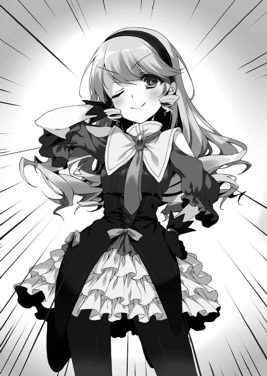
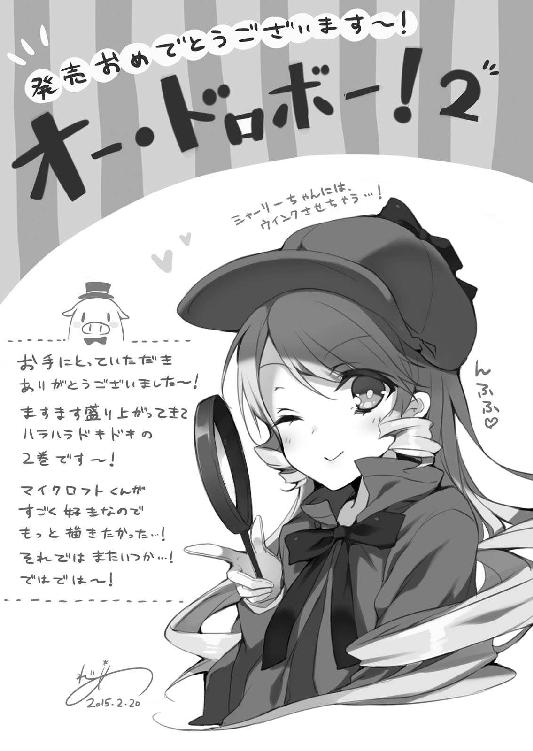

| オー・ドロボー！ 2.探偵令嬢は恋きに暴く？ (富士見ファンタジア文庫) | |
| 岬 かつみ | |
| (2015) | |
オー・ドロボー！
2．探偵令嬢は恋きに暴く？
岬かつみ

富士見ファンタジア文庫
本作品の全部または一部を無断で複製、転載、配信、送信したり、ホームページ上に転載することを禁止します。また、本作品の内容を無断で改変、改ざん等を行うことも禁止します。
本作品購入時にご承諾いただいた規約により、有償・無償にかかわらず本作品を第三者に譲渡することはできません。
本作品を示すサムネイルなどのイメージ画像は、再ダウンロード時に予告なく変更される場合があります。
本作品は縦書きでレイアウトされています。
また、ご覧になるリーディングシステムにより、表示の差が認められることがあります。
口絵・本文イラスト れい亜
序章
早朝、銀髪の少女を乗せた旅客機が空港に降り立った。
ここは彼女の故郷イギリスを遠く離れた極東の島国、日本。
少女にとっては初の来日であり、この空港が細長い島国のどこに位置しているのかさえ知らなかった。手元のフライトプランによれば関西国際空港という名前であるらしい。
異国の少女は座席に腰を落ち着けたまま、イライラとした様子でファーストクラスの機内を見回す。悪くはない。もちろん悪いはずがない。
「ぶぅー。どおしておじさまは一緒じゃないのよぉ！」
しかし彼女の気分は非常に悪い様子だ。
それというのも、本来なら旅の連れ合いとなるはずだった男がいたのだが、パスポートの不備により途中で別れてしまっていたからだ。
「二人っきりのバカンスだっていうから、こぉんなヘンピな島国にまでわざわざやって来たっていうのにぃ、何だってあたくし一人なのよぉ！」
まるで貴族の令嬢のような銀髪の縦ロールとシックな黒のドレス姿の少女は、先ほどからずっと膨れっ面をしている。出で立ちに似合わない子どもっぽさだ。
ひとしきり怒りを露わにした後、少女はステッキとキャリーを手に席を立つ。
彼女の怒りは飛行機を降りた後も、そして空港の中に足を踏み入れた後も続いた。
そして、入国審査のためにパスポートを出した瞬間にピークに達する。
「シャーロック・ホームズ......？」
パスポートを手渡された入国審査官が、急に首を傾げたのだ。
得意げにブイサインしたパスポート上の銀髪の少女の写真と、実際の少女の姿を見比べ、何やら不思議そうな顔をしている。
「そおよぉ！ あたくしが当代の世界一の名探偵、シャーロック・ホームズよぉ！ 何か文句があるっていうのぉ？」
「い、いえ。そういうわけでは」
銀髪の少女は流暢な日本語で食って掛かり、審査官は慌てて弁明する。
「かの有名な名探偵ホームズの末裔の方にお会いできるなど、私もそのご活躍を伝記小説で読んだこともありますので、極めて光栄です。ですが......その、あの帽子は被っていないんだなと......」
若干がっかりした様子で、審査官は愛想笑いを浮かべた。そしてそれが、少女の怒りをさらに煽る。
「あの帽子ぃ？ それってまさか鹿撃ち帽のことじゃないでしょうねぇ！ 卑しくもシャーロッキアンを自称するならぁ、あたくしのご先祖様があんなダッサイ帽子を被っていたわけじゃないってことくらい、ちゃんと知っていて然るべきでしょお！」
ステッキを振り回しながら少女は喚きたてる。
「そんなに疑わしいんだったらぁ、お望み通り名推理をひけらかしてあげるわぁ！」
「え？」
首を傾げる審査官に対し、少女は悪意に満ちた眼差しを向けた。
「まずぅ、屋内仕事にもかかわらず日に焼けたその肌、どうやら最近までバカンスしていたようねぇ、奇遇だわぁ、あたくしもバカンスの最中だったのよぉ。次にぃ、はいはい外して見せて頂戴ねぇ。やっぱりぃ！ 左手薬指の指輪の下まで日に焼けているのはぁ、バカンス中に指輪を外していたからかしらぁ？ でもでもぉ、奥さんと一緒ならそんなことしないわよねぇ。しかもぉ、くんくん、女物の香水の匂いが染みついているわぁ。さっきすれ違ったスチュワーデスが同じ香水使っていたわよぉ？ んふふ、偶然ってあるものなのねぇー？」
少女はあの手この手で入国審査官を散々手こずらせた後、未だ怒りを鎮めたわけではないが、兎にも角にも日本の地を踏み締めることとなった。
「ああもぅ、気分最悪だわぁ！ 見渡す限り似たような顔と格好の人種ばっかりで、ちっとも見分けがつかないしぃ！ どいつもこいつも揃ってあたくしのことをじろじろ見てくるしぃ！」
いくら御機嫌ななめとはいえ、銀髪の美少女はすこぶる目立つ。それでなくとも、異国からの観光客というだけで道行く人々の目を集めてしまう国なのだ。
「お待ちしておりました教授......いえ、シャーリーお嬢様」
そこへ、少女の到着を待っていたと思しき、英国人の男が進み出る。
英国執事の見本とも言うべきフォーマルな燕尾服と、黒と金の入り交じった虎縞のようなオールバックの髪型が、あまりにアンバランスだ。歳は、シャーリーと呼ばれた少女より一回りは上だろう、どこか陰のある美青年だ。
「セバスチャン。言いつけ通り、ちゃんと先に着いていたようねぇ」
見知った顔を前に、シャーリーの態度が若干和らぐ。
「無論にございます。ところでお嬢様、ワトスン様は如何されました？」
「聞かないで頂戴！ でもまあ、おじさまが不在なら裏の仕事もやりやすいわぁ」
シャーリーの言葉に、セバスチャンと呼ばれた執事はニッコリと微笑む。
「それはもちろん、当代のモリアーティ教授としてのお仕事というわけで？」
「んふふ。そういうことよぉ」
モリアーティ教授。
その名をジェームズ・モリアーティといい、初代ホームズの最大の宿敵であり、犯罪界のナポレオンとさえ呼ばれていた。かつてロンドンの暗黒街で絶大な権力を有していたという悪の黒幕の名だ。
シャーリーの本当の名は、パスポートに記載されたシャーロック・ホームズではなく、シャーロック・モリアーティ。
まさにイギリスの善と悪の天才の両方の血を引く末裔なのだ。
「でもでもぉ、今回の来日、表向きはホームズとして来ているわけだからぁ、セバスもうかつなことは言っちゃダメよぉ」
「承知しておりますとも。父君、先代ホームズのもとに送られてきた依頼でしたね」
執事の言葉に頷き、シャーリーは忌々しげに眉間にしわを寄せた。
どこぞの依頼人が父を動かしたことも、結果として自分が日本に来ることになったのも、シャーリーにとっては癪であった。
「依頼っていうけどぉ、合流するホテルを指定してきただけなのよぉ。お父様ったらぁ、どんな事件が起こったかも教えてくれないくせにぃ、いいから行けの一点張りなのよぉ。いつもは温厚なあたくしもぷんぷんよぉ！」
「依頼人は、先代ホームズに対して何らかの影響力を持つ人物、ということですかね」
「シャーロック・ホームズを動かせる人間が、こぉんな国にいるとは思えないけどねぇ。とりあえずぅ、帝国ホテル大阪っていうところに連れてって頂戴。そこが依頼人との合流地点だから。もちろん車も用意しているんでしょお？」
「はい、お嬢様。空港の駐車場に駐めております。マイクロフト様も、首を長くしてお待ちですよ」
執事の出した名前を聞き、シャーリーの顔から今までの不機嫌さが噓のように消えた。
乙女のようにキラキラと瞳を輝かせ、歳相応のはしゃぎようを見せる。
「マイクロフトくんを連れて来てくれたのぉ？ んふふ、でかしたわぁ。何せ悪党の楽園なんて物騒な場所に、おりこうで繊細なマイクロフトくんを連れて行くわけにはいかなかったものねぇ」
「そういえば、悪党の楽園での計画、失敗したそうですね」
「ぐっ」
痛いところを突かれ、途端にシャーリーは顔をしかめた。
「世界大泥棒選手権を利用し、世界中の大泥棒の末裔たちと他国の犯罪組織を一網打尽、悪党の楽園の権益を我々が独占するという計画でしたね。以前お嬢様が自信満々に語っていらしたのをよく覚えております」
「そ、そおだったかしらぁ？」
「しかし結果として計画は頓挫した挙句、大会参加者たちは大泥棒同盟なる組織を作り、悪党の楽園はあらゆる犯罪シンジケートが一掃されて平和な楽園になったとか。いやはや、お見事な手腕でございました」
主の失敗をなじるのが愉しいとでも言わんばかりの顔で、執事は饒舌に語った。
「ぜんぶ、憎きあの男と当代のアルセーヌ・ルパンのせいよぉ！ あいつら二人とは、もう二度と関わり合いになりたくないわぁ！」
忘れようとしていた先日の一件を掘り起こされたためだろう。世界大泥棒選手権に日本代表として出場していた少年とフランス代表の少女の顔を思い出し、シャーリーは再び機嫌を損ねてしまった。
そのまま二人はベントレーの黒のリムジンに乗り込み、執事の運転で関西国際空港から帝国ホテル大阪へと向かう。
車内にマイクロフトなる同乗者の姿はなかった。
にもかかわらず、後部座席に腰掛けたシャーリーは、座席に置かれていたウエストポーチを手に、道中は上機嫌だった。
そうして到着した目的地は、人の往来の激しい繁華街からは少し離れているが、商業施設が隣接したそれなりに規模の大きいホテルだ。
「じゃあセバス、何かあったら連絡を入れるからぁ、それまでは待機しておいて頂戴」
車のドアを開けた執事に向け、シャーリーは去り際に伝言を残した。
「畏まりました、お嬢様。では私めは近くのカジノで暇潰しでもさせていただきます」
「カジノ？ この国にはまだカジノはないんじゃなかったかしらぁ。東京オリンピックが決まったから確実に建つはずだけどぉ、今はちょっと気が早いわねぇ」
「......は？ カジノがない？ ふざけるなよッ！ それで先進国気取りかクソがッ！」
別れ際のシャーリーの言葉に、運転席に戻った執事は途端に今までの礼儀正しい言動をかなぐり捨て、頭を抱えてしまっている。
あまりの罵詈雑言ぶりにホテルの警備員がリムジンに殺到する中、シャーリーは早足でその場を離れた。
「賭博中毒の男はいやよねぇ。マイクロフトくんはああなっちゃダメよぉ」
再びステッキとキャリーを手にしたシャーリーは、ウエストポーチの中身へと話しかけつつ、一階の玄関を通ってホテル内部へと歩みを進める。
玄関を潜るとすぐに、シャーリーの目の前に円形のラウンジカフェが映った。
とはいえ朝食は機内で済ませたので、彼女はホテルの見取り図へと目を向ける。どうやらチェックインのためのロビーは二階にあるらしい。
「さてさてぇ、とりあえずは依頼人が用意してくれている部屋に入ろうかしらぁ。ふうん、それにしてもここのホテルは結構国外の利用者も多いみたいねぇ。......あらぁ？」
ふと目についた人影に、シャーリーが首を傾げる。
ラウンジのテーブル席で朝食を取る観光客やビジネスマンに混じって、シャーリーと同年代くらいの、一人の金髪の少女が美味しそうにケーキを頰張っていた。
その光景に、シャーリーは何となくイヤな予感を覚えた。彼女の後ろ姿は、シャーリーの記憶に新しい、とあるフランス人少女のそれにあまりに似ていたのだ。
庭園を望むラウンジの大きな窓から差す光を受けて輝く金髪と、覗き見えたマーブルのような白い肌、深窓の令嬢を思わせる白いドレス。
そして、歩み寄るシャーリーの気配に気付いて振り返った顔立ちはあまりに可憐で、その瞳は青く澄んでいる。
「まあ！ どなたかと思いましたら、マドモアゼル・シャーロック・モリア──むぐ」
目が合った瞬間に、金髪碧眼の少女は再会を喜ぶ微笑みを浮かべ、シャーリーの名を気さくに呼ぼうとした。
瞬間的に危うい気配を察知したシャーリーは、慌てて少女へと駆け寄り、ケーキを押し込んでその口を塞いでいた。
「んっふっふ！ なぁんで貴女がニッポンにいるのかしらぁ、ミス・ルパン！」
とはいえシャーリーも、少女の名を大声で、しかも公衆の面前で言ってのけるという醜態を晒してしまう。
理知的な普段の彼女なら、絶対に仕出かさないミスだ。よほど、この遭遇に慌てているのだろう。事態が吞み込めない銀髪の少女の目の前で、口の中に放り込まれたケーキを満足そうに吞み込んだ金髪の少女。
「うい？」
紛れもなく、シャーリーが先日地中海で遭遇した、当代の怪盗紳士アルセーヌ・ルパンであった。
第一章 三人娘探偵団・大結成篇
１
「ルパンだって......？」
「それにシャーロックって、まさかホームズ......？」
シャーリーの叫びを聞き、ラウンジカフェでくつろいでいた利用客たちがざわつき始めていた。
「なんだジョークか。ルパンならシルクハットと夜会服、それに片眼鏡を付けている」
「それもそうだ。ホームズと言えば鹿撃ち帽とインバネスコートが正装だよ」
だが、白と黒のドレスで着飾った金髪と銀髪の少女たちの姿を一瞥した後、彼らは鼻で笑って自分たちの食事を再開する。
言い返したい気持ちをぐっと堪え、シャーリーは釈然としない面持ちではあったものの、アルセーヌの向かいの席に腰を下ろした。
「改めましてお久しぶりですわ、マドモアゼル」
「とりあえずぅ、今からあたくしのことはシャーリーって呼んで頂戴。貴女の口の軽さにはぁ、悪党の楽園であの男も手こずっていたようだものねぇ。口を滑らせてあたくしの正体をバラしてみなさい、とっても酷いことしてやるわよぉ」
シャーリーの脅しに、しかしアルセーヌは一向に堪えた様子を見せない。それどころかケーキのおかわりを注文すべく優雅に給仕を呼びつけている。
「ウイ。そうさせていただきますわ、マドモアゼル・シャーリー。では、わたくしのこともアルと呼んでくださいまし。ムッシュはそう呼んでくれておりますもの」
「えぇー......慣れ合うつもりはないわぁ」
つれないシャーリーに、アルセーヌはしょんぼりと肩を落とす。
「ところでムッシュって、あの男のことぉ？」
「あの男？ ムッシュには石川五右衛門というお名前がちゃんとありますわ」
「あの男はあの男よぉ！ あたくしに一杯食わせた男の名前なんかぁ、口にする気にもなれないわぁ！」
シャーリーは、注文を聞きに来た給仕が怯むほどの剣幕で怒鳴り、アルセーヌをぎろりと睨みつけた。だが、視線はそのままに紅茶の注文を済ませるシャーリーを尻目に、アルセーヌは臆した様子もなくケーキの追加を注文する。
「それで、なんだって貴女がこの国にいるのよぉ？」
「わたくしも同じ質問をマドモアゼルに返したいところですわ」
おっとりと小首を傾げるアルセーヌに、シャーリーはペースを乱されっぱなしだ。
「あたくしぃ？ あたくしはぁ、ホームズ探偵事務所に舞い込んできた依頼の一環でこの国に来たってわけよぉ」
「うい？ ということは、マドモアゼルも依頼人さんとお会いするためにこのホテルにいらっしゃったんですの？ 実はわたくしのところにも──正確に言えば、バーネット探偵社にも同様の依頼が舞い込んだのですわ。父がどうしてもと言うものですから、ちょうど日本にいたわたくしが来たわけです」
昨日の父からの国際電話を思い出し、アルセーヌが悩ましげに眉をしかめた。
当代の石川五右衛門の忍者屋敷にホームステイしているアルセーヌだが、彼女の父である先代ルパンは、年頃の娘の出奔にいたく頭を悩ませているのだろう。アルセーヌの苦々しげな顔を見れば、電話の内容は名探偵でなくとも推理できた。
「ふうん。先代ホームズだけでなく、先代ルパン......いいえ先代ジム・バーネットと言うべきかしらぁ。ともかくぅ、その二人をして断れないと言わしめるなんて、今回の依頼人ってのは何者なのよぉ」
ジム・バーネットは、怪盗引退後に探偵社を開いた初代ルパンが使っていた偽名である。つまるところ、当代の怪盗紳士であるアルセーヌは、当代のパリの探偵ジム・バーネットでもあるわけだ。
イギリスとフランスの探偵の末裔二人を日本にまで呼びつけるとは、依頼人はいかほどの大物なのか。シャーリーの怒りはいつしか興味と好奇心に変わっていた。
「ところでところでぇ」
そして、先のアルセーヌの台詞の中に、彼女の好奇心を刺激する言葉がもう一つあった。
「ちょうど日本にいたってどういうことなのよぉ？ 世界大泥棒選手権が終わってまだ日も浅いでしょお。フランスには帰らなかったのぉ？」
「う、うい......それはその......一度は帰りましたのよ？」
シャーリーの指摘に、アルセーヌは途端にもじもじとした様子で下を向いてしまう。
「んふふ。あの男を追いかけて日本にまでやって来たって感じかしらぁ？ ......うそ、本当なのぉ？ へーえぇ、フランス女が恋に積極的って本当だったのねぇ」
「こ、こ、恋だなんて、違いますわ！ 違いますもの！」
アルセーヌは顔を真っ赤にして、悪魔のような笑みを浮かべるシャーリーの目の前でぶんぶんと手を振った。
「ところでぇ、あの男までここにいるなんて言わないわよねぇ」
「ウイ、マドモアゼル。ムッシュはお仕事で、一昨日から家も留守にしておりますもの。ちなみにお屋敷はここからそう遠くありませんので、用意していただいたホテルの部屋は必要なさそうですわ。拝見したところ、立派なお部屋ではあったのですけれど──」
初代石川五右衛門は、かつての近畿圏を中心に活動していた泥棒だ。
その末裔である十四代目の住まいも、大阪の近郊にあるらしい。アルセーヌは自分のために用意されていた８１３号室のルームキーのカードを取り出し、扱いに困っている様子を見せた。
「ま、まさかだけどぉ、もしかして同居しているのぉ？ キャー、大胆！ それでそれでぇ、どこまで進んだのかしらぁ？」
「ど、どこにも進んでおりませんわ！」
「んふふ、誤魔化そうったって名探偵の目は欺けないわぁ。初代ルパンは確かぁ、結婚を反対された恋人の寝室へ真夜中に忍び込んだこともあるのよねぇ。その末裔ならぁ、貴女もあの男に夜這いくらいかけたんじゃないのぉ？」
「そ、そ、そんなことないですわ！ ありませんわ！」
お互い真っ赤な顔をしたまま、二人はテーブルを挟んできゃいきゃいと騒ぐ。
給仕が新たなケーキと紅茶を持ってきたところで、彼女たちは我に返り、居心地悪そうに目を泳がせた。
「い、至って健全な関係ですもの。それこそ、ベイカー街２２１Ｂで共同生活していた初代ホームズ氏と初代ワトスン氏のように、ですわ」
「そのたとえ話をされるとぉ、あたくしとしても二人は健全だと認めるしかないわねぇ」
「ウイ。納得していただけたようで安心ですわ」
バラとライムの香りを漂わせたフランボワーズのケーキを切り分けつつ、アルセーヌがほっとした様子でため息をこぼした。
そんなアルセーヌの姿を眺めつつ、ミルクをたっぷり入れたアッサムを軽く口に含んだ後、シャーリーが話題を切り出す。
「ひとまず休戦協定ってことにしましょ。あたくしと貴女の間にはドーバー海峡より深い溝があるけれどぉ、今日のところは忘れることにするわぁ」
「うい？ カレー海峡がどうかなさったんですの？」
「ドーバー海峡。今日あたくしと貴女はぁ、それぞれシャーロック・ホームズとジム・バーネットとしてここに来たわけでしょお？ お互いモリアーティ教授だとか怪盗紳士ルパンだとかぁ、そういう話はヒミツにしておきましょ、ってことよぉ」
「かしこまりましたわ。でも、カレー海峡ですわよ」
「フランスでのドーバー海峡の呼び名なんか知ったことじゃないわぁ。ともあれよろしくねぇ、ミス・バーネット」
「......？ 先ほどお伝えしたように呼び名はアルで構いませんわよ？」
小首を傾げるアルセーヌに、シャーリーは浮かべていた愛想笑いを引きつらせた。
「あたくしの話、ちゃんと聞いていたのぉ？ あのねぇ、ジム・バーネットって名前のどこからアルなんて愛称が出るのよぉ！」
アルセーヌのマイペースぶりに調子を狂わされるのが気に食わないのか、シャーリーは凄まじい剣幕で食って掛かる。
「あーん、ごめんなさいですわ！ ごめんなさいですわ！」
急に怒鳴られ、アルセーヌは反射的にぺこぺこと頭を下げていた。
「まったくぅ、あの男の気苦労がちょっぴり分かった気がするわぁ」
言いようのない不安に、シャーリーは頭を抱える。
「......うい？」
そんな中、アルセーヌは第三者の視線に気付いた。それはシャーリーでもなければ、周囲の利用客でもない。
視線の主は、シャーリーのウエストポーチから小さな顔を覗かせていた。
「マドモアゼル・シャーリー、その子は？」
「この子ぉ？」
シャーリーがウエストポーチの中から持ち上げたのは、人形用の小さなシルクハットを被った、ピンク色の子ブタだった。
一般的に愛玩用として知られる小型種のミニブタの子どもよりも、さらに小さい。
「最近ロンドンで流行っているマイクロブタのぉ、マイクロフトくんよぉ」
「ぷい」
シャーリーの掌の上で、マイクロフトと呼ばれたマイクロブタはシルクハットを脱ぎ、丸い鼻を鳴らしながらアルセーヌに向けて小さくお辞儀した。
「きゃああああ！ 可愛いですわ！ マイクロフトちゃん可愛いですわ！」
途端、アルセーヌは大きな青い瞳を潤ませ、黄色い歓声とともにシャーリーの手からマイクロフトを引っ手繰ろうとする。
「ちょ、ちょっとぉ！ マイクロフトくんがびっくりするじゃない！」
シャーリーはアルセーヌの手を払い除けつつ、マイクロフトの小さな体をテーブルの上に移してやった。
「ぷいー」
マイクロフトは、アルセーヌが注文したケーキを、その円らな黒い瞳をキラキラと輝かせながら眺めている。
先ほどウエストポーチの中から顔を出していたのも、ケーキの匂いに釣られてのことだったのだろう。ブタは甘い食べ物をすこぶる好む。
「ウイ。今すぐマイクロフトちゃんの食べやすいようにカットして差し上げますわー」
「ぷいっぷう！」
切り分けられたケーキを差し出され、マイクロフトは繰り返し律儀にお辞儀を返した。
「あんまりうちのマイクロフトくんをおでぶにしないで頂戴」
「でも、マイクロフトというお名前なら、貫録があったほうがらしいですわ。それよりマドモアゼル、どうして初代ホームズのお兄様のお名前をブタさんに？」
「んふふ。お似合いでしょお？」
「ぷいぷいー」
躾が良いのか頭が良いのか、マイクロフトはテーブルを汚さず行儀良くケーキを食べ始めた。キュートなカーブを描く尻尾を振る姿に、アルセーヌもシャーリーもうっとりとした面持ちで見入っている。
すると、急にマイクロフトが不可解な動きを示した。
ケーキを食べ終えるや否や、小さな前足を使って器用にシルクハットを被り直すと、突如として身軽な動きでテーブルから床へと飛び降りたのだ。
「あら？ マイクロフトちゃん？」
マイクロフトはアルセーヌの足元を通り過ぎ、ラウンジカフェの隅に鎮座している革張りの長椅子へと近付いていく。
「ぷいぷいぷう！」
そうしてマイクロフトは丸い鼻を押し当て、椅子を執拗に突きまわし始めた。
子ブタの奇怪な行動にアルセーヌとシャーリーが顔を見合わせる中、急に椅子がひとりでにガタガタと動いた。
「な、何事ですの！ 椅子が身悶えしていますわ！」
「まさかぁ、中に誰か入っているっていうのぉ？」
驚きを見せる二人を尻目に、とうとう椅子が音を上げた。
革を突き破って、中から一人の少女が飛び出してきたのだ。
あまりの光景に、アルセーヌやシャーリーだけでなくラウンジカフェの他の利用客や給仕までもが、目を丸くしてその少女へと視線を集中させた。
「いやはや、お騒がせしましたよ」
椅子の中から出てきた少女は、被っていた棒縞柄の帽子を持ち上げ、非礼を詫びるように周囲へと会釈した。どこから出てきたかを気にしないでおくならば、彼女の仕草は非常に洗練されていたし、その容貌は聡明さに満ち溢れていた。
くせ毛の髪をショートボブにし、帽子と同じ棒縞柄のパンツスーツを着こなしている。西欧出身のアルセーヌやシャーリーには一目で分からなかったが、紛れもなく日本人だ。歳も二人とそう変わらず、先ほどまで人間椅子を演じていたというのに、場違いなほどニコニコと柔和な笑みを浮かべていた。
「ど、どちら様ですの？」
「初めまして、ボクは明智小五郎。この国を代表する名探偵の一人ですよ」
明智と名乗った少女は、口元に浮かべていた朗らかな笑みをさらに強めながら、手にしていた帽子をアルセーヌたちのテーブルの上に置いた。
明智小五郎。その名の最初の持ち主は、無論この少女ではない。
主に昭和の日本で活躍した私立探偵であり、この国で名を馳せた名探偵の中では知名度も随一だろう。少女は、日本一の名探偵の末裔であった。
「女の子なのに、変わった名前ですのね」
「あはは。先祖代々探偵業で、名前は看板みたいなものですから、仕方ありませんよ」
「つまりぃ、あたくしたちと同じく貴女も名探偵の末裔なのねぇ？」
「おっしゃる通り、当代の明智小五郎というわけですよ。かの有名なイギリスのシャーロック・ホームズ先輩や、フランスのジム・バーネットさんとご一緒できるとは、光栄の至りですよ」
明智少女は、近くの給仕を手招きし、何事もなかったかのようにアイスコーヒーを注文した。
「ぷいっぷいー」
ちなみに彼女が散らかした革張りの長椅子の残骸は、ホテルの従業員たちが動くよりも先に、マイクロフトが率先して丁寧に拾い集めて掃除している。
「あたくしやミス・バーネットの名前を知っているってことはぁ、つまりぃ、貴女があたくしたちの依頼人って解釈でいいのかしらぁ？」
シャーリーの質問に、明智はさらに笑みを強める。
「はい、そうですよ。ホームズ探偵事務所やバーネット探偵社に協力を願い出るため、依頼を出させていただきました。それは間違いなくボクの仕業ですよ」
そう言って、明智はアルセーヌとシャーリーの顔を交互に見比べた。
「世界的に有名なシャーロック・ホームズは当然としても、ジム・バーネットの名前もご存じですのね。とても光栄に思いますわ」
バーネット探偵社の名前を口にした明智を前に、アルセーヌは口元を綻ばせる。しかし次の瞬間には、続く明智の言葉を聞いてその笑顔を引きつらせることとなった。
「もちろん知っていますよ？ パリで名を馳せた通称、無料探偵。依頼内容を吟味する代わりに、報酬は受け取らない。しかし彼が動く事件は常に依頼人かあるいは標的に秘密があり、初代バーネットは報酬の代わりに何か一つ、彼らの宝物を合法的に持ち去ってしまう。その手口はまるで怪盗紳士アルセーヌ・ルパンのよう。そう聞いていますよ」
これにはアルセーヌはもちろんシャーリーまでもが狼狽える。
「ん、んふふふふ。そ、そうよねぇ、そこだけ聞くとちょっぴり似ているわよねぇ」
「う、うい、まったくですわ。同じフランスの話ですもの、わたくしのご先祖様もアルセーヌ・ルパンに何らかの憧れがあったのかもしれませんわ」
狼狽するアルセーヌとシャーリーは、不自然なほどに引きつった笑みを浮かべ、明智の言葉を誤魔化そうとしている。
あからさまに怪しげな二人を尻目に、明智は給仕が持ってきたアイスコーヒーを素知らぬニコニコ顔で飲み始めていた。
「まさかぁ、さっきまでのあたくしたちの話、椅子の中で聞いていたのかしらぁ」
「だとしたら、わたくしもマドモアゼルもすでに手錠をかけられておりますわ」
二人は明智に聞こえないよう、ひそひそと内緒話を耳打ちし合う。
そんな光景が目の前で繰り広げられているにもかかわらず、未だに明智は眉一つ動かすことなく自然体の微笑を浮かべ続けている。
「と、ともかくぅ、名探偵ホームズをわざわざ呼びつけた理由を教えなさいよぉ。ニッポンの探偵があたくしのお父様を動かせたワケを知りたいわねぇ」
明智の笑みにプレッシャーを感じたのか、シャーリーは唐突に彼女に向けて指を突き付けた。
「初代明智小五郎のことはそれなりに知っているわぁ。もちろん、実際にあった彼の活躍を記したっていう、ミスター江戸川乱歩の伝記集を読んだこともあるのよぉ。でもでもぉ、伝記っていうよりかは完全に伝奇小説みたいな内容だったわよねぇ」
聞く者が聞けば侮辱ともとれるシャーリーの挑発に、明智よりもむしろ、隣で聞かされていたアルセーヌがハラハラと落ち着きを失う。
「確かに初代明智小五郎は、世界各国の名探偵たちに比べ、怪奇事件を扱うことが多かったと思いますよ」
しかし明智は冷静に、シャーリーの挑発的な視線を真っ向から受け止める。
「そうした事件の数々は、実際に携わらなければ簡単には信じられないのも仕方のないことだとは思いますよ。ええ、それこそ相手が偉大なホームズ先輩だとしても」
「吸血鬼とかぁ」
「それは通り名で、本当に犯人が吸血鬼だったわけではありませんよ」
「人間豹とかぁ」
「それは本当に犯人が半人半獣でしたよ」
「......うい？」
シャーリーと明智のやり取りの最中、聞き捨てならない話題を耳にしたアルセーヌがおっとりと小首を傾げた。
「初代ホームズも、色々トンデモな事件に関わったと聞いていますよ？」
「初代ホームズの事件簿はぁ、アーサー・コナン・ドイルが初代ワトスンの原稿を代理出版した六十編のエピソードだけだものぉ。シャーロッキアンの皆が聖典と呼ぶこれら以外の話はぁ、ぜーんぶ眉唾ものなのよぉ」
「ＶＳヴァンパイアとか」
「どこぞの映画監督が捏造した話に決まっているわぁ」
「ＶＳ切り裂きジャックとか」
「その件に関してはぁ、初代ワトスンの原稿をアメリカのエラリィ・クイーンが隠し持っているらしいからぁ、この目で中身を確認するまで真偽は保留にさせてもらうわぁ」
「......うい？」
静かに言い争う二人を尻目に、またしても小首を傾げるアルセーヌ。
「確かにホームズ先輩には、切り裂きジャックよりも優先すべき宿敵がいましたからね。例えば、かの悪名高き当代のモリアーティ教授や、その腹心のモラン大佐ですよ」
明智の切り返しに、さすがのシャーリーも言葉を失う。
「聞けばホームズ先輩は、未だ当代のモリアーティの正体さえ摑めていないとか。いやはや、ライバルが強敵だと苦労するのはボクもよく分かりますよ」
「ん、んふ、ふふふ、それはまぁ、何せ相手はあのモリアーティ教授の末裔ですものぉ。当代のホームズたるあたくしでもぉ、手こずっちゃうのも当然よねぇ？」
引きつった笑顔を見せてシャーリーは視線を泳がせる。
彼女も明智がシャーロック・モリアーティの秘密に感付いているとまでは思っていないようだが、かといって今まで通りの言い合いを続ける危険は避けたかった。
何せ、隣にはいつ口を滑らせるとも知れぬ爆弾娘がいるのだ。
「うい？ どうかなさいましたの、マドモアゼル？」
獣人や殺人鬼を相手に戦う超人と化した名探偵の姿を空想し続けていたアルセーヌは、シャーリーの視線に気付いて我に返る。
「べっつにぃー、ただぁ、ミス明智と名探偵のライバルについて色々とお話ししていただけよぉ？ そういえばぁ、ミス明智のライバルってどういう大泥棒なのかしらぁ？」
自分に不利な話題を変えるため、シャーリーは話の矛先を明智へと戻した。
「初代明智小五郎の宿敵と言えば、日本人なら誰でも怪人二十面相の名前を挙げますよ。現にボクも、当代の二十面相とは何度も戦っていますよ。もっとも、今は彼も牢屋の中ですけどね」
「他にはいらっしゃいませんの？ わたくし、ニッポンには有名なドロボウさんの末裔の方々がいらっしゃるとお聞きしたことがあるのですけれど。例えば、当代のムッシュ石川五右衛門や、マドモアゼル鼠小僧次郎吉ですわ」
そう口にしたアルセーヌの隣で、シャーリーがテーブルに突っ伏した。
「よくもまあ、あの男はこんな娘と付き合っていられたわねぇ......」
彼女がそんな素っ頓狂な反応を示した理由はもちろん、アルセーヌが当代の日本の大泥棒たちの性別を当たり前のように口にしていたからだ。
一方、アルセーヌの質問を黙って聞いていた明智は、再びニコニコ顔で口を開く。
「その二人とは、直接お会いしたことはありませんよ。しかし彼らの他にも、我が国には昔ながらの大泥棒の子孫が大勢います。いつかはボクや他の名探偵たちで協力し合って、彼らを逮捕しなければならないと思っていますよ」
そして明智は、どこかわざとらしく、思い出したかのように付け加える。
「そういえば、初代明智小五郎と因縁深いライバルとなると、先ほど挙げた怪人二十面相や、詳しい方ならその名を挙げるであろう黒蜥蜴の他に、もう一人世界的に有名な方がいらっしゃいますよ」
「まあ！ それは一体どちら様ですの？」
明智はそこで一旦言葉を切って、淑やかに微笑むアルセーヌと、今しがた顔を上げたばかりのシャーリーを見比べる。
「実を言うと、その大泥棒の末裔が今回の事件に関わっているのですよ。その名前を出したところ、先代ホームズ氏も先代バーネット氏も、ボクの依頼を快く受けてくれたというわけですよ」
「うい？」
「これは、日本の警察宛に届いた犯行予告状の写しですよ」
明智が懐から出したのは、予告状のコピーだった。その文面は、流暢なフランス語で綴られている。
「んふふ。予告状なんてぇ、今どきクラシックな泥棒もいたものよねぇ。この街で何を盗もうってつもりかしらぁ？ まさかエジプトの星じゃないでしょうねぇ」
「フランス語には慣れ親しんでおりますけれど、この手紙でドロボウさんが盗むと予告している『天下五剣』とは何のことですの？」
明智はすかさず指を鳴らして給仕を呼びつけ、今朝の新聞を持ってこさせた。
一流ホテルだけあって新聞は各紙揃っており、テーブルの上に並べられた全ての見出しが、同じ事件を取り上げていた。
「先に聞いておきますが、お二人は我が国の刀剣について詳しくご存じですか？」
「うい？ それって、サムライさんがお持ちの日本刀のことですわよね？」
「あたくしも初代ホームズにならって剣術を学んだけどぉ、フェンシングなのよねぇ」
アルセーヌたちに向け、明智は新聞の見出しを指差す。
「バーネットさんがおっしゃった通り、我が国には、古く侍たちが使っていた日本刀が数多く現存しているのですよ。美術品としての側面も持っているため、数多くの日本刀が美術館や神社仏閣、あるいは個人のコレクションとして保存されているのですよ」
明智の指を追い、二人は新聞を覗き込んだ。
「お二人とも日本語は読めますか？ この記事は『天下五剣』と呼ばれる五本の日本刀のうちの二本、東京国立博物館所蔵の国宝、『童子切安綱』と『三日月宗近』という刀が盗まれた事件について書かれているのですよ」
「つまりぃ、犯行予告はすでに実行されているってことぉ？」
「はい。予告状には、半数が国宝の天下五剣を全て盗むと宣言されているのですよ。内容が内容なので、予告状の存在は警察の決定で一般には報道されていませんよ」
「まあ！ 予告状通りに盗んでしまうなんて、まるで怪盗さんのようですわね」
手を合わせてはしゃぐアルセーヌだったが、彼女はそこでようやく気付いた。見ればシャーリーも同じく気付いた様子で、訝しげに予告状を眺めている。
フランス語で書き記された天下五剣の窃盗予告。その最後に、Ａ・Ｌとサインが記されていたのだ。二人はどことなく不安そうな目つきで、明智を見やる。
「この予告状に記された名は、かの有名なフランスの怪盗紳士にして、先日地中海で行われたという世界大泥棒選手権の優勝者。つまり、今や世界一の大泥棒と言われる、当代のアルセーヌ・ルパンですよ」
「うい？ ......ういいいいい？」
２
突然上がった、怪盗紳士アルセーヌ・ルパンの名。もちろん、アルセーヌとしてはまったく身に覚えのない話である。
しかしシャーリーは瞬時に彼女のスカートの中に手を突っ込み、その太股を指で思い切り捻りあげていた。
「いたいですわ！ いたいですわ！」
「んふふ。ごめんあそばせぇ」
明智が知っているところを見るに、当代のルパンが世界大泥棒選手権で優勝したことは探偵業界でも有名になっているらしい。確かにアルセーヌが優勝したというのは噓ではないので、シャーリーは先日の恨みも込めて指に力を込めた。
「どうかしましたか、お二人とも。挙動不審ですよ？」
明智の言った通り、確かにアルセーヌとシャーリーは今までにも増して明らかな動揺を見せていた。何せ二人は、それぞれフランス代表とイギリス代表の大泥棒として、ついこの間まで件の大会に参加していたのだ。
「んふふ、気のせいよぉ。そんなことよりぃ、ようやく納得がいったわぁ。宿敵ルパンが事件の犯人となれば、お父様がわざわざあたくしにニッポンまで行って来いって言うのも理解が及ぶわよねぇ」
「ぷいぷいー」
シャーリーは、今しがた椅子の片付けを終えて帰ってきたマイクロフトを抱き上げると、自慢の縦ロールを指でくるくると回しながら、明智の顔を盗み見た。
当代の明智小五郎は、ホームズを動かすためにわざとルパンの名を出したのだ。その真意を探るべく、シャーリーの灰色の瞳は名探偵らしく細められていた。
「ルパンが犯人なんて、どういうことですの！ これはおかしいですわ！ きっとルパンの名を騙る偽物さんの仕業ですわ！」
一方のアルセーヌは話に付いていけず、完全に混乱している様子だ。
だが、昨日の父との電話で、先代ルパンの声が何故あれほど苦々しげだったのか、ようやく彼女にも理解が及んでいた。
五右衛門との同棲に難色を示していただけだと思っていたアルセーヌだが、父の頭を悩ませる要因が他にもあったことを知った。それこそが、ルパンの名を騙ってこの犯行予告状を出した偽物の存在なのだろう。
「偽ルパンがいるかいないかはともかくぅ、怪盗紳士ルパンと明智小五郎がライバルってどういうことなのかしらぁ？」
慌てふためくアルセーヌが余計なことを言うより先に、シャーリーは話題を逸らした。
「初代明智小五郎の因縁のライバルの一人、黄金仮面。初代明智に企みを暴かれ国外へと追い払われた彼こそが、初代アルセーヌ・ルパンだったのですよ」
通称、黄金仮面事件。
現代ではその知名度もどれほどのものか分からないが、実際に事件の起こった昭和時代では、日本国民全員の注目の的となった。
黄金の仮面で顔を隠した怪盗が、国宝を次々と盗み去った事件だ。初代明智の活躍により黄金仮面は国宝も恋人も何一つ国外に持ち去れなかったが、逮捕は免れた。
初代明智は黄金仮面の正体を、初代アルセーヌ・ルパンと推理したという。
それが真実かどうかは、逮捕できなかった以上、今となっては追及の手段がない。
「んふふ、ミス・バーネットは知っていたかしらぁ？ フランスの怪盗紳士とニッポンの名探偵がライバルだったなんてねぇ？」
シャーリーは内心穏やかではなかったが、アルセーヌがボロを出すことなくこの話題を他人事で済ませられるよう、わざと興味なさげに彼女へと話しかけた。
「わたくしそのような話、聞いたこともありませんわ。ましてやアルセーヌ・ルパンの敗北など信じられませんもの。ニッポンでその事件を起こしたのは、きっとルパンの偽物さんだったはずですわ」
しかし、怪盗紳士ルパンは負けず嫌いだ。その子孫であるアルセーヌが、おいそれと初代ルパンと黄金仮面の同一人物説を認められるはずもない
そして、助け舟を無視されたシャーリーが、これに黙っていられるわけもない。
「......だったらぁ、初代ルパンが初代ホームズと何度も引き分けたなんて言い張っている事件の数々もぉ、ホームズの偽物の所業ってことでいいのかしらぁ？」
「まあマドモアゼル、それはどういう意味ですの？」
結果、お互い淑女の笑みを取り繕いつつも、アルセーヌとシャーリーは明智そっちのけで睨み合う。
「まあ、ボクらがここでどう論じ合おうと、初代の方々の活躍を記した伝記小説の内容に誇張がなかったとは言い切れない以上、真実は初代たちしか知り得ませんし、この話はその辺にしておきましょうよ」
そもそも明智自身が振った話題であるにもかかわらず、彼女は自分の手で話を打ち切ってしまった。
「それでぇ、結局あたくしたちは天下五剣泥棒を捕まえればいいのかしらぁ？ それが本物のルパンかそれとも偽物かは、ひとまず保留でいいのよねぇ？」
「同じフランス人として、ルパンの名を騙る偽物さんを捕まえてみせますわ！」
二人の言葉に、しかし明智はどこか考え込む仕草を見せた。
そうして彼女は、言い辛そうに口を開く。
「お二人をお呼びしておいてこんなことを言うのは、ボクとしても心苦しいのですよ。しかし、当代の明智小五郎の推理として、一つ聞いていただきたいことがあるのですよ」
「うい？」
「単刀直入に言うと、ボクはこの天下五剣事件の犯人は、当代のアルセーヌ・ルパンではないと考えているのですよ」
明智の推理に、アルセーヌは顔を輝かせ、逆にシャーリーは顔をしかめる。
「さすがは名探偵マドモアゼル明智ですわ！ わたくしも同意見ですもの！」
「んふふ、面白い冗談だわぁ。だったら自分一人で最初からケリをつけなさいよぉ！ あたくしのバカンスを邪魔する必要なんかなかったじゃない！」
「証拠も何もないただの推論ですよ。国宝が狙われている以上、そして賊が当代のルパンである可能性を否定できない以上、最善の手を打つのはボクの義務ですよ」
詰め寄るシャーリーの顔を押し退け、明智は話を続ける。
「天下五剣はうち三本が国宝で、一本が重要文化財、一本が皇室所有の御物ですよ。それら全てを盗み出そうというのですから、ルパンでなかったとしても犯人は名のある大泥棒に違いないでしょう。そして、天下五剣を狙う動機を持った大泥棒の子孫が、この国には一人いるのですよ」
「では、その方が真犯人に違いないですのね！」
アルセーヌは身を乗り出し、期待に満ちた眼差しを明智へと向ける。名探偵がルパンの関与を否定してくれるなら、これほど頼もしいことはない。
だが次の瞬間には、彼女の笑顔は失われた。
「天下の大泥棒の異名を持つ、石川五右衛門。その十四代目ですよ」
明智の口にした名が、アルセーヌと親しい少年の名前だったからだ。
「先日のエコー・ド・フランス紙によれば、世界大泥棒選手権にて当代の石川五右衛門は当代のルパンにしてやられ、優勝を逃し、さらには家宝まで奪われたとか。となると当然、何らかの仕返しを講じて当たり前だと思うのですよ」
エコー・ド・フランスは代々のルパンの息のかかった出版社で、その活躍を報じるのがお家芸だ。明智の言葉を聞いたアルセーヌは、ショックのあまり硬直してしまう。
「......少々、失礼致しますわ」
アルセーヌは、不意に懐からスマートフォンを取り出した。何事かと小首を傾げるシャーリーと明智を尻目に、彼女は二人の目の前で堂々と通話を始める。
「もしもし、ムッシュですの？ お仕事中に申し訳ありません。ええ、わたくしとっても元気ですわ。ところで確認したいのですけれど、今ムッシュは危ないお仕事をしておりまして？ え？ そんなことはない？ そうですか、それは安心致しましたわ。では、お帰りを心待ちにしております──というわけで、違うそうですわ！ ムッシュはルパンの名前を騙るような卑劣漢ではありませんもの！」
通話を済ませたアルセーヌは、晴れやかな笑顔でそう言った。
「んふふふふふ......この子ったらフランス仕込みの笑えないジョークが好きなんだから、困っちゃうわよねぇ。ミス明智もそう思うでしょお？」
予想外にも程があるアルセーヌの反応に、口を挟む暇もなかったのだろう。シャーリーは顔面蒼白ながらも何とか笑顔を取り繕い、明智へと笑いかけた。
「ええ。面白い方だと思いますよ」
明智が一連のアルセーヌの行動をジョークと受け取ってくれたかどうかは分からないが、彼女はやはり無邪気にニコニコしている。
「そもそもマドモアゼル明智はどうして、その、石川五右衛門なるお方が犯人だと？」
憔悴したシャーリーの面持ちから自分の失態を察したのだろう、アルセーヌは誤魔化すように咳払いを交えていた。
「はい。その質問にお答えするにはまず、今回の事件で奪われた天下五剣がいかなる日本刀なのか説明しなければならないのですよ。お二人は、我が国の歴史についてどのくらいご存じですか？」
「ムッシュ徳川家康が開いた江戸幕府とその治世に関しては、世界史で学びましたわ」
「常識よねぇ」
今までのおっとり具合を覆すかのようにすらすらと意見を述べるアルセーヌと、それに同意するシャーリー。
質問を投げかけた明智のほうが、逆に呆気に取られてしまったほどだ。
「......これは予想外の返答ですよ。世界的にも有名なんですね、家康公って」
「ウイ。世襲制の一族が二五〇年以上にわたって一国の支配体制を維持したなど、世界的にも珍しい話ですもの」
「それ以前はぁ、ずぅっとおサムライさん同士で殺し合いしていたのよねぇ。でもってぇ、戦争に負けたら自分でお腹を切っちゃうんでしょお？」
「セップクですわ、ハラキリですわ！」
「まったくぅ、頭おかしいんじゃないかしらぁ。ねぇミス明智、そもそもこの国で最初にセップクした人って、一体どこのどいつなのぉ？ 子孫の顔が見てみたいわぁ」
「いやはや、それはボクにも理解が及びませんよ......」
このシャーリーの疑問には、さすがの明智も答えに窮したようだ。
明智は自分のくせ毛に手を伸ばし、髪の毛を指で搔き毟り始める。初対面のアルセーヌたちに分かるはずもないが、これは彼女が考え事をする際の悪癖であった。
「切腹の起源についてはお答えできず申し訳ありませんでしたよ。しかし、徳川の世をご存じでしたら、事件を説明するのに都合が良い。すこぶる話は早いですよ」
明智は髪をくしゃくしゃとかき回すのを止め、再び新聞の見出しへ目を向ける。
「先ほどホームズ先輩がおっしゃったように、江戸時代以前の日本は、戦国時代と呼ばれる長い戦乱の世が続いていましたよ。そこでは戦争が日常茶飯事で、当然、武器となる日本刀も多く造られました。そして同時に、侍たちは日本刀を武器だけではなく美術品、蒐集品としても扱っていたのですよ」
天下五剣事件を扱う各紙の中には、盗難被害にあったと思しき実際の刀二本の写真も掲載されていた。
「天下五剣とは、当時からすでに侍たちの憧れの的でもあった、後世に名を残すに相応しい五本の素晴らしい刀の総称ですよ。まずは天下五剣の一、童子切安綱」
その写真のうちの片方を明智は指差す。
「これは数ある日本刀の中でも最強の切れ味を誇る伝説の名刀でして、つい先日まで東京国立博物館に国宝として収められていたものですよ。大昔の日本に現れた酒吞童子と呼ばれる鬼の王を討ち取った刀として、童子切の銘が与えられたそうですよ」
「......うい？」
そこでアルセーヌが首を傾げた。
「オニさん......ですの？ ええっと、マドモアゼル明智の話は、現実の話という解釈でよろしいのですか？」
「鬼云々は言い伝えですが、れっきとした実在の刀ですよ。その切れ味は凄まじく、江戸時代における試し斬りにおいては、積み重ねられた罪人の死体を六人分まとめて両断した挙句に刃は土台にまで突き刺さったとか」
「......ひそひそ、ですわ」
「......ひそひそ、よねぇ」
アルセーヌとシャーリーは明智を余所に、疑惑に満ちた眼差しで耳打ちしあう。
しかしこの童子切安綱、天下五剣という呼び名も含めて、実在する日本の国宝である。決して架空の刀ではない。
「盗み出されたもう一本の刀の名は、三日月宗近。こちらも国宝指定を受けている逸品でして、名品揃いの天下五剣の中でも最も美しいと言われています。室町時代に謀反で命を落とした剣豪将軍足利義輝の愛刀として知られ、彼は単身この刀を振るって数多くの敵兵を道連れにしたと伝えられていますよ」
「ひそひそ」
「ひそひそ」
「ぷいぷい」
今度はマイクロフトと一緒になって耳打ちしあうアルセーヌとシャーリー。無論、三日月宗近も実在する日本刀である。明智は気にするのを止め、話を続ける。
「これら二本の刀──いいえ、残る三本の天下五剣も含め、戦国時代においてそのうちの四本まで集めた武将がいるのですよ」
「他の刀もその二つの刀のように空想的な......こほん、失言でしたわ。価値のある名刀なのでしたら、集められた方はさぞかし名のあるコレクターだったのでしょうね」
「ほんとよねぇ。たいした蒐集家だわぁ」
「それを可能にするだけの権力を持っていた人物こそ、先ほど名前の挙がった徳川家康に先駆けて天下統一を成し遂げた、豊臣秀吉ですよ。刀狩りと呼ばれる令を発布し、国中からありとあらゆる日本刀を根こそぎ集めた男なのですよ」
その名前までは知らないのか、アルセーヌとシャーリーは顔を見合わせた。
「真犯人の標的は、国を統べた天下人でさえ五本揃えることは出来なかった天下五剣。初代石川五右衛門は、豊臣秀吉によって処刑されました。天下五剣を全て集めることが出来れば、四本までしか手に入れられなかった秀吉を超えることにもなり、初代の無念を晴らすことにも繫がるはずですよ」
明智は理路整然と語った。仮定の話とはいえその推理は筋が通っており、アルセーヌが口を挟む隙もない。
「んふふ、それが動機ってわけねぇ」
「おそらくの話ですよ。そして当代のルパンの名を騙ることで、当代の五右衛門はもう一人の因縁の相手にも復讐できるというわけですよ」
「それならきっとその男が真犯人に違いないわぁ。事件解決ぅー」
「マドモアゼル！ 当代の名探偵ホームズともあろうお方が、証拠もないのにあてずっぽうで犯人を決めつけるのは止めてくださいまし！」
五右衛門の身を案じるアルセーヌは、涙目になってシャーリーに食って掛かる。
「ぷいー、ぷいー」
そのまま泣き出す寸前、マイクロフトに慰めてもらい、何とかアルセーヌは涙を堪えた。彼女はすり寄ってきた子ブタの丸い鼻を突きながら、気持ちを落ち着かせる。
「ありがとうございますわ、マイクロフトちゃん。とっても紳士的ですのね」
ぷにぷにぷにぷにと、アルセーヌは鼻を突き続けた。何となく楽しくなってきたらしい。少なくとも気分が和らいだのは間違いないようだ。
しばらくして、彼女は意を決した面持ちで顔を上げた。
「マドモアゼル明智。わたくしは今回の事件、惜しみない協力を申し出させていただきますわ。もちろん、マドモアゼル・シャーリーも同意見ですわ！」
鬼気迫る目つきのアルセーヌに睨まれ、シャーリーは観念した様子で肩をすくめる。
ここでアルセーヌの機嫌を損ね、当代の名探偵ホームズとモリアーティ教授が一人二役であることを明かされるのは、シャーリーにとって最も避けたい事態だ。
「はいはい、分かったわよぉ。一蓮托生よねぇ。やればいいんでしょお。ぶぅー」
「ありがとうございます、バーネットさん、それにホームズ先輩。当代の明智小五郎として、国を代表してお礼を言わせていただきますよ」
事件解明に乗り出す二人の美少女探偵の姿に、明智はニコニコ顔で頭を下げた。
「しかし断っておきますけれど、わたくしもマドモアゼル・シャーリーも、この事件の犯人が当代のルパンや、あるいは当代のムッシュ五右衛門ではないと思っていますわ。そのことにだけは留意しておいてくださいまし！」
「あたくしは別にあの男が犯人でもいいんだけどぉ......」
アルセーヌに涙目で睨まれ、シャーリーは台詞を最後まで口に出来なかった。
そんな二人を見据えつつ、明智は笑みを深める。
「もちろん構いませんよ。三人で協力し、真犯人を捕まえましょう。ボクとしても、何もルパンや五右衛門を犯人に仕立てあげたいわけではありませんよ」
そう言って明智はアルセーヌへと手を伸ばし、握手を求める。
「ボクの興味は、ただ真実を知るという点にあるのですよ。それこそが、代々の明智小五郎の変わらぬポリシーなのですよ」
「ウイ、マドモアゼル。お手柔らかにお願いしますわ」
アルセーヌは明智の言葉に頷くと、差し出された手を強く握り返した。
「ではまず、場所を移動しましょう。実は、すでに真犯人を釣るためのエサを用意してあるのですよ」
「まあ！ それは頼もしいですわ！」
そう言って、明智とアルセーヌは席を立つ。
「ちょっとちょっとぉ、お勘定払わないとダメでしょお！」
「ぷいー」
「そうでしたわ。では、ここはわたくしが払っておきますわね」
「いえそんな......自分の分は自分で払いますよ」
「んふふ。ありがたく奢られてあげちゃうわぁ」
「ホームズ先輩！ ずうずうしいにも程がありますよ！」
目くじらを立てた明智は、がま口の財布を片手にメニューを見下ろす。ところが彼女は、自分の頼んだアイスコーヒーの値段を目にし、硬直してしまった。
「あたくしニッポンの物価は知らないけどぉ、ずいぶんとお高いのねぇ」
「よよよ......」
額は四桁だ。店を選べば贅沢なランチセットにデザートをつけられる値段である。明智は反論も出来ずにがま口の財布を閉じていた。
騒ぐ明智とシャーリーを残し、アルセーヌは会計を呼び付ける。その手には、懐から取り出したブラックカードが握られていた。
「年会費だけでも相当な値段になる代物ですよ......」
「あたくしだってブラックカードくらい持ってるわぁ。ほらほらぁ、凄いでしょお？」
「そんなもの持っているなら厚かましく奢られたりしないでくださいよ」
「名探偵ホームズともなれば、高貴な身分の方々からの依頼もひっきりなしに入って来るものなのよぉ。このくらいのステイタスは備えていないとねぇ。ところでぇ、ミス明智は持ってないのぉ？」
「いやらしい聞き方は止めてくださいよ。依頼の報酬はすぐに探偵グッズの開発費に回してしまうのが、初代からの明智小五郎の伝統ですよ。持ってないですよ」
しつこく袖を引っ張ってくるシャーリーの腕を振り払いながら、憮然とした面持ちで明智は言った。
そんな中、アルセーヌは求められたサインに応じる。
差し出されたクレジット利用の控えに、すらすらとペンを走らせた。
「よよ？」
それを見た明智が、訝しげに眉をひそめた。
「Ａ、Ｌ？」
ジム・バーネットのサインに、ＡやＬの文字を使う必要はない。
「こ、困った子ねぇ、アルは。そうそう、ミス明智は知らないでしょうけどぉ、この子はアルって名前なのよぉ。いくらジム・バーネットの子孫とはいえ、女の子の名前にジムはないものねぇ」
「まあ！ マドモアゼル・シャーリー、やっとわたくしのことを名前で呼んでくれましたのね！」
すかさずフォローに入ったシャーリーだったが、彼女の心労も知らずアルセーヌは無邪気に喜んだ。
「んふふふふふ！ たいした度胸ねぇ、アルぅ？」
「やめてくださいまし！ やめてくださいまし！」
シャーリーに肩を揺さぶられ、アルセーヌは悲鳴を上げる。
「そういうことなら理解が及びましたよ。ボクはてっきりイニシャルだと思いましたよ。それこそ例えば、アルセーヌ・ルパンかと」
Ａ・Ｌでアルセーヌ・ルパン。
犯行予告状に記されたサインと同じ読み方だ。
シャーリーの苦しい言い訳で誤魔化されたかどうかは分からないが、明智は相変わらずニコニコと友好的な笑みを浮かべている。
冷や汗を拭うアルセーヌとシャーリーだったが、明智の笑顔を前に、二人はどこか不気味なものを感じずにはいられなかった。
そしてこの瞬間、アルセーヌは電話の際に父が口にしていた、苦々しげな忠告を思い出していた。
『──娘よ。間違いなく現れるであろう、当代の明智小五郎には気を付けておきたまえ。私も現役時代に初代のじいさまと会ったことがあるが、アレは相当な曲者だ』
娘の出奔よりも、ルパンの名を騙る犯行予告状よりも、明智小五郎の存在こそが、先代ルパンを悩ませていた最たる要因であったのかもしれない。
３
帝国ホテル大阪の隣には、淀川へと続く大川を望む公園が広がっている。
車を取りに向かった明智を待ち、アルセーヌとシャーリーは並んで歩きながら公園を見物していた。
「マドモアゼル、見てくださいまし！ バスが泳いでいますわ！」
大川を進む水上バスを指差し、アルセーヌが驚きの声を上げた。
生まれも育ちもフランスのアルセーヌが知る由もないが、大阪は古くから商人の街として栄えてきた場所だ。古来より商売に船は欠かせない。結果として水路が発展し、淀川や大川の他にも、街の中心部から大阪湾へいくつもの川が流れ込んでいる。
「ムッシュは、この街のことを水の都とおっしゃっておりましたわ」
「ふんだ。言っておくけどぉ、イギリスのテムズ川のほうが凄いのよぉ。それに観光名所にするのならぁ、ロンドンのようにタワーブリッジくらいは無いと寂しいわよねぇ」
「無茶を言いますわね......」
「ぷいー」
キャリーをホテルのクロークに預けて身軽になったシャーリー。彼女の物言いに対し、アルセーヌとマイクロフトが揃って苦笑いを浮かべる。
「ところでぇ、どおして貴女がマイクロフトくんを抱いているのかしらぁ？」
ラウンジカフェを出たときから、アルセーヌは当たり前のようにマイクロフトを両手で抱いたままなのだ。本来の飼い主であるシャーリーが冷たい目を向けた。
「うい？ わたくしとしたことがうっかりですわ。お返しいたしますわ」
「どさくさに紛れて盗みでもしたらぁ、ミス明智に言いつけてやるわよぉ、アルぅ？」
「ぷいぷいー」
マイクロフトを取り返したシャーリーに釘を刺され、アルセーヌはあからさまに目を泳がせている。
「まったくぅ、これだからルパンは信用ならないわぁ。あの男が仕返しを企んでもおかしくないわよねぇ」
「ムッシュはそんなことなさりませんわ！ 今回の事件もムッシュが真犯人だなんてありえませんもの！」
肩をすくめるシャーリーに対し、アルセーヌは憤慨してみせる。しかし次の瞬間には、彼女は顔を曇らせて俯いてしまった。
アルセーヌは、明智と一旦別れてすぐに五右衛門に再び電話をかけていた。だが、留守番電話の無情な音声が流れただけだった。先ほどは確かに繫がったはずだが、これでは五右衛門から詳しい事情を聴くことも出来ない。
「絶対に、ムッシュではありませんわ。わたくし、信じておりますもの......」
唇を嚙みしめるアルセーヌだったが、次の瞬間には彼女の表情は和らいでいた。
水上バスより目を引く物体が、今まさに彼女の視界を過ったからだ。
「まあ！ あそこに見えるのはもしかして......」
「急にどうしたのぉ？」
驚くアルセーヌにつられ、シャーリーも大川へと目を向ける。
そこには、どんぶらこと流れてくる、巨大なアヒルのおもちゃの姿があった。いわゆる、お風呂場の湯船に浮いている黄色いアヒルである。
ただしそのサイズは遠近感が狂うほどに大きく、高さはなんと十メートル近くあった。
「ラバーダックちゃんですわ！」
目をキラキラと輝かせ、アルセーヌは上機嫌で大川に浮かぶアヒルを見上げている。つい先ほどまで彼女を悩ませていたはずの五右衛門への疑惑など、どこかへ消し飛んでしまった様子だ。
「ラバーダックぅ？ なによそれぇ」
「あら、ご存じありませんのマドモアゼル。世界中の有名な川や海や湖に現れる、とっても大きなアヒルさんのことですわよ。フランスのサン・ナゼールでわたくしも同じものを見かけたことがありますわ」
「ぶぅー、テムズ川じゃあ見たことないわよぉ」
公園中の観光客や地元の人々も、揃って携帯電話やスマートフォンのカメラを片手に、突如として現れたラバーダック目当てに群がり始める。
言うまでもなく、その中にはアルセーヌの姿もあった。
「あのねぇ......貴女、事件解決する気あるのぉ？ 能天気にも限度があるわよぉ」
「ぷいー」
シャーリーが呆れたため息をこぼす中、黒塗りの自家用車が近付いてきた。
運転しているのは明智だが、車種は不明である。どうやら、デザインの段階から全てオーダーメイドのようだ。
「お待たせしましたよ。さ、乗ってください。代々の明智小五郎が依頼の報酬金をつぎ込んで製作してきた専用車、その五代目のアケチ五号ですよ。多少の飛行や水上走行も可能ですよ」
大川を進む水上バスを運転席から見やり、明智が得意げに語った。そのまま視線がラバーダックに釘付けになったあたり、アヒルのスケールの大きさは冷静沈着な名探偵の度肝をも抜いたようだ。
「００７のボンドカーじゃあるまいしぃ、冗談が過ぎるわよぉ、ミス明智」
「よよ？ 冗談じゃありませんよ？」
笑い飛ばすシャーリーの声に、明智も正気に戻ったようだ。そうこうしているうちに、アルセーヌが戻ってくる。
「まあ。マドモアゼル明智は運転免許をお持ちなんですの？」
「ボクは一応、女子高生ですよ。もちろん持っていませんよ？」
「......うい？」
「警視庁公認の無免許運転ですよ。いわゆる、国お抱えの名探偵の特権というやつです。初代明智にいたっては、少年探偵団の小林少年にアケチ一号を運転させたこともあるんですよ」
「ほ、本当に大丈夫なんですの？」
アルセーヌもシャーリーも半信半疑だったが、自信満々の明智の手前、しぶしぶではあったが二人揃って後部座席に乗り込む。無論、シートベルトはすぐに締めた。
「どこまで行くつもりなのぉ？」
「ここからすぐ近くの、大阪ステーションシティですよ。ホテルからも無料シャトルバスが出ていますけど、車があるので今日のところは不要ですよ」
言うなり、明智はアケチ五号を発進させた。アルセーヌとシャーリーは身を硬くしたが、無免許運転ながらも明智の運転テクニックはなかなかのものだった。
「さっき言っていたエサっていうのがぁ、そこにあるわけねぇ？」
「さすがはホームズ先輩。話が早くて助かりますよ。厳密に言えば、犯人が狙う天下五剣の一本『鬼丸国綱』を今から受け取りに行くわけですよ」
運転席から振り返りつつ、明智はシャーリーの質問に答える。
「この大川の先に、豊臣秀吉の居城であった大阪城があるのですよ。近日、そこで秀吉に関する物品を集めた展示会が催されます。というのも、大坂冬の陣と呼ばれる古い合戦があってから二〇一四年でちょうど四百年、翌二〇一五年は大坂夏の陣から四百年と、歴史的にも一大イベントでして、様々なプロジェクトが動いているんですよ。鬼丸国綱は、その展示会のためにわざわざ皇室から借り受けたものですよ」
「展示会が、真犯人を誘き出すためのエサになるってわけねぇ」
「はい。天下五剣で唯一御物に指定されている鬼丸国綱は、普段は皇居の外に持ち出されることはありません。真犯人としても、絶好の機会を見逃しはしないはずですよ」
鬼丸国綱は、鎌倉幕府の執権であった北条家ゆかりの名刀だ。北条家滅亡とともに新田義貞や足利尊氏などの名将の手に渡り、巡り巡って豊臣秀吉が手に入れる。その後、明治時代になって皇室の所有物である御物となったのだ。
御物は文化財保護法の対象外であり、国宝や重要文化財に指定されることもない。
「皇居は国内最大の防犯区域ですよ。国立博物館から国宝を盗み出すほどの大泥棒でも、そうそう手を出せる場所ではありません。鬼丸国綱が皇居の外に持ち出されるとなると、犯人は間違いなく飛びつきますよ」
「ふぅん。ルパンの予告状がなかったらぁ、持ち出せなかったでしょうねぇ」
「──はい。こうして罠を張れる以上、偽ルパンには感謝していますよ」
シャーリーの推測に、明智はニコニコとした笑みを一層強めている。
難攻不落の皇居とはいえ、怪盗紳士ルパンに狙われていると聞かされては、さすがの皇室や宮内庁も持ち出しを許可する気になったのだろう。
「一応聞いておくけどぉ、他の二本は大丈夫なのぉ？」
「金田一さん──と言っても分からないですかね。明智小五郎と並ぶ我が国の名探偵の末裔たちが『大典太光世』と『数珠丸恒次』の警備に当たってくれていますよ」
「なるほどねぇ。名探偵の数が足りないわけだわぁ」
明智の抜かりなさに、シャーリーは感心している様子だ。
「受け取りに関しては、大昔の平安時代から代々天皇に仕えてきた京都旧家の藤原家に任せていますよ。今では皇宮警察に所属しているらしいですよ」
「インペリアル・ポリスってわけねぇ。イギリス王室で言うところのロイヤルガードみたいなものかしらぁ」
と、しきりに頷いていたシャーリーだが、先ほどからアルセーヌがすっかり黙り込んでいるのが気がかりなのか、その横顔をちらりと盗み見た。
「マイクロフトちゃん、お手ですわー」
「ぷうー」
アルセーヌは他二人の話などまるで聞いておらず、マイクロフトと楽しげに戯れていた。
「こらぁーっ！ 貴女またあたくしのマイクロフトくんを勝手に持ち出したわねぇ！ ウエストポーチに入れておいたはずでしょお！」
「マドモアゼル・シャーリーったら、そんな大げさな。わたくし、単にマイクロフトちゃんと遊びたかっただけですもの。ですわよねー？」
「ぷいー」
すっかり懐いてしまったマイクロフトの鼻を撫でながら、アルセーヌは能天気に相好を崩している。
「ホントにもぉ、油断も隙もあったものじゃないわぁ」
シャーリーは目を怒らせながらマイクロフトを取り戻し、その小さな体をウエストポーチの中に仕舞い直した。さらには、手元のステッキでアルセーヌの頰を突きまわす。
「うい......」
アルセーヌはお気に入りのオモチャを取り上げられた子どものようなしょんぼり具合で、寂しげにシャーリーのウエストポーチを眺めている。
「緊張感の無いところ申し訳ないのですよ。そろそろ大阪ステーションシティが見えてきましたよ」
そんな中、運転席から明智が声をかけた。
車窓の向こうには、巨大な滑り台状の屋根を持つ建造物が見えていた。
「あそこが受け取り場所ですのね！」
大阪ステーションシティ。
ＪＲ西日本の大阪駅を中心に、ノースゲートビルディングとサウスゲートビルディングが直結しており、百貨店やファッションビルを行き来できるようになっている。さらには別の商業施設であるグランフロント大阪にも繫がっているという、西日本最大級の駅複合型施設だ。
アケチ五号は一行を乗せたまま、ステーションシティの専用駐車場へと向かう。
「ここは大阪の玄関の一つとも言うべき場所ですが、新幹線の停車駅は一つ隣なのですよ。東京から鬼丸国綱を運んでくる皇宮警察の藤原家は、電車でここに到着する予定ですよ」
「車で運んでもらえば良かったんじゃないのぉ？」
「......それはボクも思ったのですよ。ただ、車はダミーとして使って本命は新幹線で運ぶというのが、皇宮警察側が申し出てきた条件だったのですよ」
ナンセンスだ、とでも言わんばかりの表情で明智が肩をすくめた。名探偵といえども、国家権力の決定を覆すことは難しいようだ。
「本当に犯人がルパンなら、目を付けられた時点で車も電車も関係ありませんわ」
アルセーヌが自分のことのように誇らしげに胸を反らす。
「え、ええ。それはそれで同感ですよ」
一方の明智は、停車作業中、後方確認したまま目を白黒させていた。どうやら、アルセーヌの豊かな胸の自己主張ぶりに、彼女も驚きを隠せなかった様子だ。
「いいからさっさと行きましょお。あたくし、早くロンドンに帰りたいわぁ」
シャーリーに急かされ、下車した一行は駐車場を離れてステーションシティへと向かった。一本道をしばらく歩けばゲートまで辿り着く。
ステーションシティ内部は、駅や商業施設を行き来する人の群れでごった返している。金髪と銀髪の美少女の姿は、ここではホテル以上に目立ってしまうようだ。通り過ぎる誰も彼もがアルセーヌとシャーリーを一瞥している。
その中にあってアルセーヌはショーウインドウを眺めながら、何故か急に厳しい面持ちを見せた。
そして、警戒を促すべくシャーリーへと耳打ちする。
「マドモアゼル・シャーリー。わたくしもムッシュから教えてもらったばかりなのですが、大阪という都市は平和なニッポンの中でも特別におっかない場所の一つだそうで、言わばこの国における悪党の楽園のような場所だそうですわ」
この言葉にはシャーリーも驚いた。
何せ彼女は、つい最近まで悪党の楽園と呼ばれていた島でバカンスしていたのだ。島内の悪党は当代の怪傑ゾロ率いる大泥棒同盟によって一掃されたが、危険な印象はシャーリーの中で未だ拭い切れずに残っている。
「それは怖いわねぇ。じゃあ、あそこのファンシーショップで売られているぬいぐるみくんたちの中にもぉ、きっと銃火器なんかが隠されているのかしらぁ？」
「ウイ。もちろんですわ」
「あそこのお花屋さんもぉ、吸えばハッピーになっちゃうお薬の原料になるお花を売っているのかしらぁ？」
「ウイ。間違いありませんわ」
「......あのー、お二人とも。決してそのようなことはありませんよ？」
平和な街並みを前に、無意味な緊迫感を帯びるアルセーヌとシャーリー。二人に向け、明智は苦笑いを浮かべていた。
一行はそのまま駅の連絡橋改札口へと向かった。
駅員たちは明智の姿を見るや否や、すでに事情を知らされているのだろう、すかさず改札を開けて三人を駅構内へと迎え入れる。
「お勤めごくろうさまですよ」
頭を下げる明智に続き、一同は皇宮警察と合流予定のホームへとエスカレーターで降りていく。
「屋根があんなに高いですわー」
巨大な滑り台状の天井を見上げ、アルセーヌが感嘆のため息をこぼした。
駅構内からも見えるこの天井は、大阪ステーションシティのノースゲートビルディングからサウスゲートビルディングへと、架け橋のように繫がっている。ホームから見上げる天井の全貌はなかなかに壮観な光景だ。
「でも、高さ以外は規模、面積、風格ともにパリのモンパルナス駅の圧勝ですわ！」
「んふふ。貴女も結構いい性格しているわよねぇ。あたくしのお国自慢に呆れていたのは誰だったかしらぁ？」
プライドを刺激されたのか、いつになく不敵な笑みを浮かべるアルセーヌ。そんな彼女に対し、シャーリーは呆れた様子で肩をすくめている。
「じきに電車が来るようですよ、バーネットさん」
「う、うい。そうでしたわね、大切なお仕事の途中でしたわね」
電光掲示板に目を向けた明智の言葉を聞き、アルセーヌは観光気分を慌てて改めた。
その場で待つこと十数秒。レールのかなたに電車の先頭車両が見えてきた。直後、新大阪駅からやって来た電車は、流れるようにホームに到着する。
「うい？」
「あらぁ？」
「よよよ？」
その電車を見、三人娘は三者三様の驚きの声を上げた。
彼女らが驚愕した理由は簡単だ。目の前を通り過ぎていく車窓から垣間見えた光景が、あまりに非常識で不自然だったからだ。
異常に気付いたのはアルセーヌたちだけではない。他にもホームで電車を待っていた利用客の全てが、顔を上げたまま硬直している。
その光景は、一目見ただけでは誰の理解も及ばなかっただろう。
「ど、どういうことですよ？」
何故ならば、車両内の乗客全てが眠っていたのだ。
座席に座っている乗客はもちろん、あろうことか、立っていたであろう乗客でさえ床に崩れ落ちて昏倒している。
異常な景色を乗せてやって来た電車が停止し、定刻通りに扉が開く。
だが、ホーム側の人々は誰一人として乗り込もうとしないし、車両内の人々も無論のこと誰一人として降りようとはしない。
「マドモアゼル明智、皆様どうなさったのでしょう？」
おろおろとアルセーヌが戸惑う中、明智の行動は早かった。
誰よりも先に車両に乗り込むと、倒れている乗客のもとに屈みこむ。どうやら生死を確認しているらしい。
「どうも、眠り薬のようですよ」
明智の心配をよそに、乗客たちは寝息を立ててぐっすりと眠り込んでいただけだった。しかし、一度に乗客全員が眠り込むなどあり得る話ではない。
安堵のため息をこぼしつつも、明智は車両内の人々を一人ずつ確認していく。営業回りのサラリーマン、遊びに来たと思しき大学生カップル、子連れの夫婦、着物姿の少女、その誰も彼もが、少し早い昼寝を満喫していた。
「この人たちは皇宮警察ですよ。鬼丸国綱の護送を任されていたはずですよ！」
倒れていた乗客のうち数名の服に皇宮警察バッジを発見した明智は、慌てた様子で声を荒げた。しかし今も眠りこける彼ら皇宮警察の手元には、日本刀と思しき荷物などどこにもありはしない。
「運転手は無事みたいねぇ」
そんな中、シャーリーは乗客たちを無視して真っ先に先頭車両へと走り出した。
電車が停止した以上、少なくとも運転手までもが睡眠中という事態はありえない。異常な状況下にあって冷静な判断力を鈍らせなかったあたり、世界一の名探偵ホームズの名は伊達ではない。
シャーリーの背中を追って、すぐさま明智が、少し遅れてアルセーヌが続く。
「ぷいぷいぷう！」
そのとき、ホームを走るシャーリーのウエストポーチから顔を覗かせたマイクロフトが、円らな瞳をきりりと細めて先頭車両の運転席へと前足を向けた。
見れば、運転席の扉が開き、中から黒ずくめの人影が騒ぎに紛れて降りてきたところだった。
「あいつが元凶じゃないかしらぁ？」
シャーリーは目を細め、黒ずくめの不審者を睨みつける。
その人影の手には、これまた黒い布の包みで覆われた、長大な荷物があった。
「......あれはまさか、日本刀ですよ！」
アルセーヌやシャーリーはともかく、明智は一目でその包みの中身を予想できた。言ってみれば、剣道で使う竹刀袋そのものだったのだ。
「ではもしかして、あれが鬼丸国綱ですの？ ということは、あの方が真犯人さん？」
三人娘が先頭車両まで駆けつけようとした瞬間、不審な人影が先に動いた。
驚くべきことに偽ルパンと思しき不審者は、運転席の開けっ放しの窓を足場に、常人離れした跳躍力でもって電車の上へと飛び上がったのだ。
そして電車の上部を駆け抜け、アルセーヌたちの頭上を通り過ぎていく。
「なによなによぉ！ 今の大道芸みたいな動きはぁ！」
「顔、見えませんでしたよ！ どうやら覆面で隠しているみたいですよ！」
シャーリーと明智はすぐさま足を止めると、偽ルパンを追いかけ、来た道を逆走する。
「今の動きは、まさか本当に......」
その中にあって、アルセーヌだけは足を止めてしまっていた。追いかけることも忘れ、逃げ去る人影の背を呆然と見送っている。
「ムッシュ五右衛門が、わたくしの名を騙った真犯人さんなんですの......？」
顔こそ見えなかったが、その身のこなしはアルセーヌにとって見慣れたものだった。
地中海の悪党の楽園を舞台にした、世界大泥棒選手権の一週間。その中で彼女のパートナーが何度も披露した、忍者の末裔としての卓越した体術の数々。
今は他言無用の仕事で家を離れている同年代の少年の動きと、今しがた目撃した真犯人と思しき人影の動きは、まったく同じようにアルセーヌの目には映った。
とすれば明智の推理通り、当代の石川五右衛門がルパンの名を騙って事件を起こしているのだろうか。そしてその動機は、自分に対する復讐なのだろうか。
アルセーヌはショックのあまり、身動きが取れずにいた。
「バーネットさん！ 何をぼんやりしているんです、早く追いかけますよ！」
「う、ウイ、マドモアゼル！」
遠くから聞こえてきた明智の声を聞き、ようやくアルセーヌは正気に戻る。
「そ、そうですわ。ムッシュのはずがありませんもの！ わたくしが探偵ジム・バーネットとしてこの手で真犯人さんを捕まえて、わたくし自身とムッシュの無実を証明してみせますわ！」
アルセーヌは自分の胸に湧き上がった疑惑の念を振り払い、先を行くシャーリーと明智を追いかけた。
４
黒ずくめの偽ルパンは、電車の上から連絡橋へと飛び移り、さらにはその屋根伝いに走り去って、大阪ステーションシティの人ごみへと紛れようとしていた。
その跳躍力も俊敏性も、とても常人に真似できる類のものではない。
「なんやなんや？」
「なんや映画撮影やて」
「なーんや」
偽ルパンの機敏な動きを目の当たりにし、通行人たちは驚きを隠そうともしない。
電車の乗客を眠り薬で昏睡させた犯人は、軽々と人波を避けながらその姿を眩ませる。鬼丸国綱と思しき長大な包みを抱えたまま、次から次へと飛び移り、上のフロアに位置する、時空の広場と呼ばれる場所へと逃げ込んだのだ。
「なんやってどういう意味ですの？」
自慢の健脚で先行する二人に追いついたアルセーヌは、周囲の反応を耳にし、きょとんとした面持ちで小首を傾げている。
「あたくしに聞かないで頂戴！ 分かるわけないじゃないのよぉ！」
すでに犯人の姿を見失ってしまっているせいか、アルセーヌのマイペースぶりにシャーリーは癇癪を起こす。
「忍者のような身のこなし、やはり犯人は当代の石川五右衛門に違いないですよ」
「まだそうと決まったわけではありませんわ。それより、今は真犯人さんを捕まえることのほうが先決ですわよ」
推理に確信を強める明智に対し、アルセーヌは半ば自分に言い聞かせるためにあえて声を大にした。
「それもそうよねぇ。捕まえてみないと分からないしぃ、捕まえられなかったら無意味な話だわぁ」
シャーリーに促され、そのまま一行は改札を出、偽ルパンを追う。
エスカレーターの先に広がる時空の広場は、ノースゲートビルディングの五階と、サウスゲートビルディングの六階を繫ぐ空間だ。無論、すでに犯人の姿はない。広場のカフェやベンチで歓談していた人々も、目を丸くしたまま固まってしまっている。
偽ルパンのあまりに素早い動きに、彼らの思考能力が追い付かなかったのだろう、幻覚と錯覚している者さえいる始末だ。
「ホームズ先輩、それにバーネットさん！ ともかく手分けして追いかけますよ！」
「んふふ。ならあたくしは南に向かうわぁ」
「では、ボクは北を担当しますよ」
広場には金時計と銀時計があり、それぞれの先に北と南のビルの内部に続く入り口がある。明智が金時計のある北へ、シャーリーが銀時計のある南へ向かった。
「うい？ ではわたくしは......ええと、どうしましょう？」
残されたアルセーヌは困り顔で周囲を見回した。
時空の広場からさらに上の階へと通じるエスカレーターを見つけ、彼女はその顔を輝かせる。
「わたくしはここから上へ向かうことにしますわ！」
アルセーヌの乗ったエスカレーターは、ステーションシティの天井をぶち抜く穴の中を通り抜け、ノースゲートビルディングの十階へと続いていた。
十階と十一階には、それぞれ和らぎの庭、風の広場と呼ばれる、吹きさらしの空中庭園が設けられている。実際に草木が植えられた憩いの景観で、大阪の街並みが見下ろせる展望台の役割も備えていた。
「真犯人さん、出てきてくださいましー」
だが、一望する限り怪しい人影は見当たらなかった。十一階へと移動しても、庭園のベンチで寛いでいる人々の中に驚いている者は一人もいない。下の広場の様子とはまるで違っている。おそらく偽ルパンはここへは来なかったのだろう。
「どうやら、わたくしのほうは空振りのようですわね」
しょんぼりと肩を落としたアルセーヌだったが、合流しようにもシャーリーや明智と連絡を取ることも出来ない。
「まさか駅の迷子センターに行くわけにもいきませんし、どうしましょう？」
アルセーヌはおっとりと小首を傾げたまま、空中庭園を再度見回した。
しかし目に留まるのは、さらに上階に位置する空中農園への入り口と、十四階から二十七階まで続くビジネスオフィスへの入り口、そして映画館くらいだ。
「まあ！ こんなところに映画館があるなんて、今度ムッシュと来てみたいですわー......ではなくて！ そんな場合じゃないんですのよ！」
ずらりと並んだ映画の立て看板を前に、アルセーヌはおろおろと取り乱す。
ともかく彼女はなんとか他の二人と合流すべく、庭園からビルの内部へと移動した。入った先のフロアは飲食店街となっており、多くの店が軒を連ねていた。
「......うい？」
そこでアルセーヌは、見知った、それでいて不可解な人影を見つけた。
物珍しく思っているのは周囲の人々も同じなのか、人影を中心に輪を作っている。
「あそこにいらっしゃる方々は、もしかして？」
その輪の中心にいるのは、探し求める黒ずくめの偽ルパンではない。
人影は二人分、服の色はそれぞれ青と赤だ。それに顔も隠していないし、どこからどう見ても女性である。
しかも青はシスター服、赤はチャイナドレスという、この場に似つかわしくない格好だ。イベントコスチュームと言われたほうがまだ納得できる。
そしてアルセーヌが不可解だと思った最大の理由が、シスター服とチャイナドレスを着こなした、その二人の人物の正体だった。
「昼飯はハンバーガーがいい！」
「否、中華が良いのじゃ！」
濃紺のシスター服のほうは、『西部のロビン・フッド』の異名を持つ、世界初の銀行強盗犯の末裔、ジェシー・ジェイムズ。
真紅のチャイナドレスのほうは、世界最強の盗賊団『梁山泊』の頭領の末裔、天魁星の宋江。
世界大泥棒選手権でアルセーヌが出会った、それぞれアメリカと中国を代表する大泥棒の子孫たちだ。大会後、地中海で別れて以来の再会になる。
日本にいるはずのない二人が、何故かこんな場所で昼食のメニューを争い、大喧嘩している。
アルセーヌでなくとも首を傾げるのは当たり前だろう。
「マドモアゼル・ジェシーにマドモアゼル宋江？ どうしてニッポンに......？」
おずおずと声をかけたアルセーヌに対し、ジェシーと宋江は口喧嘩を止め、彼女へと目を向けた。そして彼女らもまた、アルセーヌ同様に驚きの表情を浮かべる。
「まさかアルセーヌ・ルパン？」
「そちらこそ、何故この国に？」
ジェシーと宋江は揃って目を丸くし、アルセーヌの顔をまじまじと覗き込む。
「ハハーン、さてはゴエモンのヤツにくっ付いてニッポンまで押しかけたとか？ そーかそーか、結婚するときはアタシが神父役をしてやるよ」
シスター服越しでも見て取れる、神を冒瀆する勢いで突き出たジェシーの胸。その上に乗っかった十字架のネックレスをチラつかせ、彼女は愛嬌たっぷりに笑ってみせた。
「な、なんじゃと！ 五右衛門殿は我のおムコさん候補の一人じゃぞ！」
一方の宋江も、大きく開いたチャイナドレスの胸の谷間から、婚姻届を引っ張り出している。
「お、お二人ともお久しぶりですわ。べ、別にそういうわけじゃないんですのよ。それに、ええっと、わたくしがルパンというのは内緒ですの。ここではジム・バーネットと呼んでくださいまし！」
「いや......よく分かんないけど、まあいいや」
懐かしい顔ぶれに、どこかはしゃいだ様子を見せるアルセーヌ。一方のジェシーは、困り顔でシスター帽越しに頭をかいた。
「アタシらは、ゾロの旦那と一緒にニッポンに来たのさ」
「左様。ゾロ殿を始め我ら大泥棒同盟、五右衛門殿の頼みで来日しておるのじゃ」
「えっ......ムッシュ五右衛門が？ どうしたわけですの？」
思いがけない名前を聞き、アルセーヌは驚いた。
「ほらあれだよ、今この国でも騒いでいるじゃないのさ。天下五剣とかいう──」
「このメリケン娘！ 頭も緩いし口も軽すぎるのじゃ！」
あっさり口を滑らせかけたジェシーの口を、慌てて宋江が塞いだ。
「頭が緩いってのはどういうことさ！」
結果、ジェシーはまたもや立腹し、宋江との口喧嘩を再開してしまう。
しかし、今の言葉を聞かされたアルセーヌはというと、それどころではなかった。
「ど、どうしてマドモアゼルたちが天下五剣のことをご存じですの......？ それにムッシュの頼みというのは......まさか......」
先ほど振り払ったはずの疑念が、さらに大きくなってアルセーヌの胸中を満たす。
大泥棒同盟。それは、世界大泥棒選手権以降、怪傑ゾロことドン・ディエゴ・ベガが同じ義賊の末裔たちを集めて結成した、同盟の名前だ。
五右衛門とアルセーヌも、それぞれ日本代表とフランス代表のメンバーとして参加を求められたが、互いに辞退している。
その大泥棒同盟が、五右衛門の要請で来日しているという。
しかも、天下五剣が絡む話らしい。
もしこの話を明智やシャーリーが聞けば、名探偵たちは間違いなく五右衛門が今回の事件の首謀者だと断言しただろう。アルセーヌでさえ、五右衛門のことを個人的によく知らなければ、そう考えたに違いない。
「ともかく、今の話は忘れて欲しいのじゃ。我とジェシー殿は単に、その、あれじゃ。美味しい食事を求めて来日しただけの、ただのグルメな観光客なのじゃぞ？」
「そもそもアタシは北ってのが最初から気に食わなかったのさ！ なんたって初代ジェシーは、アメリカ南北戦争で南部側についたんだからな！」
「まあ確かに、我のご先祖殿も北宋に対して反乱を起こしたのじゃ。最初から南にすべきだったかもしれぬ。しかし、それならそれでどうして先に北を選んだのじゃ？」
「だって、南のビルのレストランは十三階より上にあったじゃん。数字が不吉じゃん」
「妙なところで信心深い......が、どちらにせよ中華は譲れぬからな」
「間を取ってステーキで勘弁してあげるけど？」
「どこの間をどう取ればそうなるのじゃ！」
「分からないヤツだなー、バンズとバンズの間を取ったに決まってるじゃんか」
そうしてジェシーと宋江は、くだらない言い争いを続けながら移動を開始する。
「ってなワケで、バァーイ、ルパーン！」
「再見！」
軽い調子で去っていく二人。見ようによっては追及を受ける前に逃げたようにも取れる。
だが、残されたアルセーヌにそれを見抜くだけの余裕はなかった。
「どうして大泥棒同盟の皆様がニッポンに？ それも、天下五剣事件のためにムッシュが呼び寄せたとも取れる言い方でしたわ......」
アルセーヌは俯いたまま、自分の靴を悲しげに見下ろしていた。
推理材料がさらに増えてしまった。それも、五右衛門が犯人だと示すものばかりだ。
彼女は疑惑に傾きそうになる自分を心の中で叱りつけながら、今日知ったばかりの事件のあらましを振り返る。
真犯人の狙いは天下五剣。今やその三本目までが奪われたのだから、少なくともこの大前提が間違っていることはありえない。
真犯人はアルセーヌ・ルパンの名を騙って犯行予告状を日本警察に出した。明智が言っていたのだから、これも間違いないはずだ。まさかのどんでん返しで本物のルパンが犯人という可能性は、先代ルパンが今もフランスにいるのでありえない。
この予告状の存在により、アルセーヌとシャーリーは明智の依頼で事件解決に尽力する羽目になっている。もともと日本に滞在していたアルセーヌはともかく、わざわざ呼び寄せられたシャーリーからすればたまったものではないだろう。
「ウイ、ここまではいいんですの。問題はこの先ですわ」
犯人の疑いを向けられている石川五右衛門だが、急な仕事で先日からアルセーヌに屋敷の留守を任せて出かけてしまっている。ためしに今も電話をかけてみたが、やはり不通のままだ。
明智いわく、五右衛門には二つの動機があるという。豊臣秀吉に対する初代五右衛門の復讐と、当代のルパンに対する当代の五右衛門の仕返しだ。
そしてアルセーヌの前に現れた犯人の身のこなしは、まるで忍者のようだった。それこそ、伊賀忍者の末裔である五右衛門と同等の体術だ。
最後に、その五右衛門は大泥棒同盟に何かしらの援軍を要請しているようだ。ジェシーや宋江だけでなく、ドン・ディエゴ・ベガまでもが日本にいるというではないか。
「考えれば考えるほど、ムッシュに疑いの目を向けてしまいますわ。予告状のことさえなければ、ムッシュも一応ドロボウさんですし、わたくしも納得できるのですけれど。他の情報はあと......マイクロフトちゃんが可愛らしいことくらいで......」
「ぷい！」
思案に耽っていたアルセーヌを、元気な鳴き声が現実に引き戻す。
見れば、シルクハットを被ったマイクロブタの姿が近付いてきていた。
「マイクロフトちゃんではありませんの！ どうしてこちらへ？」
「ぷいぷい！」
「もしかして、真犯人さんを見つけたんですの？ それでマドモアゼル・シャーリーがわたくしを呼んでくるように？」
「ぷいぷいぷう！」
マイクロフトは丸い鼻を鳴らしてアルセーヌを促すと、ちょこまかと走り出した。
シルクハットをしっかり被った子ブタは、先ほどアルセーヌが上がってきた道順の逆を辿り、北と南のビルの連絡口になっている時空の広場へと再び向かっているようだ。
アルセーヌは首を傾げながらも、懸命に走るマイクロフトの後を追う。
彼女と子ブタが広場の金時計下に辿り着いた瞬間、先ほどシャーリーが選んだ銀時計の向こうから、黒ずくめの不審人物が慌てた様子で姿を現した。
「まあ！ 南のビルに逃げ込んでいたんですのね！」
「ぷい！」
偽ルパンの前に立ち塞がるアルセーヌと、ついでにマイクロフト。
「んふふ、ここで挟み撃ちよぉ！ 残念でしたぁ！」
サウスゲートビルディングからは、偽ルパンを追ってシャーリーも駆けつけてきた。彼女がマイクロフトにアルセーヌを呼びに行かせたのは、その言葉通り、挟み撃ちを狙ってのことだったのだろう。
しかし偽ルパンは、金時計の下のアルセーヌと銀時計の下のシャーリーを見比べた後、あろうことか広場の手すりに駆け寄り、そのまま身を躍らせてしまった。
「飛び降りですわ！ 信じられませんわ！」
「きいいぃ！ やっぱりニンジャなんじゃないのぉ？」
「ですからムッシュではありませんわ！ ありませんもの！」
思いがけない退路を選んだ偽ルパンの行動に仰天するアルセーヌとシャーリー。しかし当の犯人は、見事な身のこなしで広場真下の連絡橋改札口へと逃げ込んでいた。
「とりあえずぅ、急いで追いかけるわよぉ！」
シャーリーは、涙目でしがみ付いてくるアルセーヌを引きはがし、足元のマイクロフトを拾い上げて走り出した。
「お待ちになってくださいまし！」
アルセーヌも慌ててその背に続く。
そうして二人は、エスカレーターを駆け降り、最初に訪れたステーションシティ入り口の三階ゲートに到着する。
先ほど宙に身を投げ出した偽ルパンの姿もそこにあった。だが、捕まえるには僅かに間に合わない。アルセーヌたちが追いつくより一足早く、偽ルパンは三階ゲートから二階へと降り、そのまま外へと出て人ごみに紛れてしまうだろう。
しかしそのとき、予想外の事態が起こった。
それは偽ルパンにとっても、アルセーヌやシャーリーにとっても、そして周囲の人々全てにとっても同様に予想外だった。
「......うい？」
アルセーヌの呆然とした声が響く。
彼女の視線の先には、今まさに猛スピードで突っ込んでくる車の姿があった。
もちろんここは道路などではない。開放感がある造りとはいえ、立派に屋内施設の入り口だ。商業施設や駅を利用する人々でごった返している。
だが、突っ込んできた車はそうした人々をはね飛ばしかねない勢いで、駅に突入し、偽ルパンの逃走経路を塞ぐ。
「ま、マドモアゼル明智！」
車の運転席にいるニコニコ顔の少女を見つけ、アルセーヌが仰天した。
「逃がしませんよ！」
明智は一切の躊躇なくアケチ五号のアクセルペダルを踏み込み、車の乱入に棒立ち状態だった偽ルパンへと闘牛のように突っ込んでいく。
慌てて偽ルパンは踵を返し、改札口とは逆方向へと逃げ出した。だが、アケチ五号はお構いなしに追いかける。
「な、なんやなんや！」
これには周囲の人々も、先ほどのように映画撮影だと納得することは出来なかったようだ。皆、大慌てでアケチ五号に道を開けていた。
「だからなんやってなんですの！」
「そ、そんなこと気にしてる場合じゃないでしょお！」
アルセーヌとシャーリーも、車で駅へと突っ込んできた明智の危険運転ぶりに、完全に混乱してしまっている。周囲の一般人と一緒になって逃げ惑う始末だ。
一方、逃げ場を失った偽ルパンは連絡橋の端に追い詰められていた。
「さあ、大人しくお縄を頂戴ですよ！」
明智は運転席の窓から顔を出し、偽ルパンへと警告を発する。
瞬間、偽ルパンはあえてアケチ五号へと突進し、見事な跳躍力で車体を足場にして踏み越え、車の背部へと逃げ込む。
一連のアクションシーンを前に、周囲の人々は無意識のうちに拍手していた。
あろうことかアルセーヌやシャーリーもギャラリーに混ざり、ついつい一緒になって手を打ち鳴らしてしまっている。
「逃がさないと言ったはずですよ！」
しかし明智もさる者で、すかさずハンドルを切って車の向きを反転させ、再び逃げ去ろうとしていた偽ルパンの背後につける。
しかもあろうことか、明智は方向転換と同時に運転席の窓から身を乗り出し、その手に黒光りする拳銃を握り締めていた。
「む、無茶苦茶ですわーッ！」
「拳銃所持禁止の法治国家じゃなかったのぉーッ！」
アルセーヌとシャーリーが、同時に悲鳴を上げた。
「もちろん拳銃所持も警視庁公認ですよ！」
周囲の人々が反射的に身を屈める中、明智はハンドルから手を離して拳銃を両手で構えると、偽ルパンの背中に狙いを定めて躊躇うことなく引き金を引いた。
瞬間、発砲音が響き渡る。
張り詰める空気と、異様な火薬の臭い、遅れて連鎖する人々の悲鳴。それらが重なる中、逃げようとしていた偽ルパンは呻き声一つ立てることなくその場に倒れた。
「あああ、真犯人さんが撃たれてしまいましたわ......」
どうしていいか分からず顔を覆うアルセーヌだったが、その隣でシャーリーはすでに冷静さを取り戻していた。
「ミス明智の拳銃の腕は確かなようだけどぉ、相手のほうがうわ手だったみたいねぇ」
「う、うい？」
シャーリーの言葉に、アルセーヌは恐る恐る顔を上げる。
背中から撃たれた偽ルパンに目を向けたところ、先ほどまで確かに非常識な動きを見せていたはずの人影は、どこにもなかった。
いつの間にか、偽ルパンの服を着せられた丸太に替わっていたのだ。
「あれは確かぁ、あの男の得意術、あたくしが地中海で痛い目を見たニンジャの秘術じゃなかったかしらぁ？」
「そ、そんな......ニンジャだなんて......」
シャーリーの言葉通り、それはまるで五右衛門の空蟬の術のようだった。
「お二人とも！ ぼさっとしてないで追いかけますよ！ まだ遠くには逃げていないはずですよ！」
弾痕つきの丸太を無視し、明智はアルセーヌたちの真横に車をつける。
「んふふ、貴女って見かけによらず手段を選ばないわねぇ......さすがのあたくしもちょっぴりびっくりだわぁ」
呆然と立ち尽くすアルセーヌの手を引き、シャーリーは急ぎ後部座席へと乗り込んだ。
二人の乗車を確認した後、明智も慌てて車を発進させてゲートを飛び出し、二階の階段を下りて地上の道路へと走り去る。
「な、なんやったんや......」
「なんやようわからんわ......」
残されたステーションシティ内の人々が事情も分からずなんやなんやと騒ぐ中、そこに混じっていた一人の少年が深々とため息をこぼす。
パニックの中にあって、彼だけが冷静な面持ちをしていた。
白ブラウスと黒ズボンというラフな出で立ちの、黒髪の少年だ。
見かけは平凡で、強いて挙げるならば、開いているのか閉じているのか分からない細い目だけが唯一の特徴だろう。
「やれやれ、さすがは当代の明智小五郎。その破天荒ぶりは聞きしに勝るな。それにしても、まさかアルやモリアーティまで一緒にいるとはね......」
そう言って、少年──当代の石川五右衛門は訝しげに薄く片目を開ける。
その手にはあろうことか、先ほど電車内から奪われたと思しき、中身が入ったままの竹刀袋が握られていた。
第二章 三人娘探偵団・大捜査篇
１
偽ルパンを見失った一行は、アケチ五号に乗って府内某所の銭湯へとやって来た。
銭湯といっても、なかなかに広い。
天然温泉利用で、男女ともに露天風呂はもちろん、大型の岩盤浴や各種マッサージにリラクゼーション、食事処も備え付けている。
「どうしてお風呂屋さんなんですの？」
車内にて、アルセーヌ・ルパンは不思議そうに小首を傾げた。
「いやはやバーネットさん、先ほどの捕り物でボクも汗だくですよ。真犯人の追跡は警察の方々に任せて、ボクらは次の機会に備えて汗を流しておくべきですよ」
今は当代のジム・バーネットを名乗っているアルセーヌに対し、美少女探偵の明智小五郎はそう説き伏せた。
ニコニコとした面持ちに似合わず押しの強いところがあるらしい。
とはいえ先ほどまで大阪ステーションシティ中を駆け回っていたのだから、汗まみれになるのも仕方ないだろう。
「マドモアゼル明智は突拍子もない方ですのね......」
「ボクは身なりを清潔にしておきたい主義なんですよ。それに、もしかしたら真犯人も一汗流しに銭湯に来るかもしれないですよ」
「......本気でおっしゃっているんですの？」
さすがのアルセーヌも呆れ顔だ。
後部座席にちょこんと腰を下ろした彼女の隣では、シャーロック・モリアーティことシャーリーが会話にも混ざらず膨れっ面をしていた。
「いやよいやよぉ！ 公衆浴場なんて不潔だわぁ！」
車を降り、いざ銭湯ののれんを潜ろうとしたところで、シャーリーは突如としてぶんぶんと首を横に振った。
「ホームズ先輩、お店の方々に失礼ですよ」
「ウイ。それに汗まみれのままはばっちいですわ、マドモアゼル」
「やめてぇー！ はなしなさいよぉーっ！」
明智とアルセーヌは嫌がるシャーリーの両手を引いて銭湯へと入っていった。
のれんの奥からギャーギャーと姦しい声が続いたが、しばらくすると銭湯の店頭に静けさが戻ってくる。
そこへ一人の少年がゆっくりとした足取りで近付いてきた。
肩に竹刀袋を担いだその姿は、誰あろう石川五右衛門であった。
「動きすぎて汗をかいたし、合流予定時刻まではまだ時間がある。少しばかり風呂にでも浸かるとしようかな」
細い目をことさらに細め、五右衛門はのれんを潜った。
「番台さん。この銭湯、五右衛門風呂ってあるかい？」
そんな時代錯誤な代物があるはずもなかったが、つぼ湯ならあるという番台の老婆の返答を聞き、五右衛門はそそくさと店内に入る。
ふと、彼の足が止まった。とはいえ別に、彼より先に銭湯に入ったアルセーヌたちの姿を見つけたわけではない。
「ぷいー」
見つけたのは、シルクハットを被った可愛らしいマイクロブタだった。
間違いなくマイクロフトである。女湯へと向かったシャーリーたちには同行しなかったようで、一匹寂しく番台の前でぼんやりと丸まっていた。
「銭湯に、ブタ......？」
首を傾げる五右衛門の呟きに、マイクロフトの耳がぴこぴこと反応した。
「ぷい？」
マイクロフトは身を起こし、円らな瞳を五右衛門へと向ける。
その可愛らしさは男子の心も摑んでしまったのだろうか。五右衛門は彼にしては珍しく、癒されたような様子で表情を緩ませていた。
「おやおや、飼い主はどうしたんだい？」
「ぷいっぷう！」
声をかけた五右衛門に対し、マイクロフトは丸い鼻を鳴らして抗議した。
マイクロフトはオスだ。そして、生まれも育ちもイギリスのロンドンだ。
人ではないので英国人と呼ぶのは差し障りがあるかもしれないが、しかし立派にジョンブルであった。若い貴婦人たちと入浴をご一緒するなど、もってのほかだ。
小さかろうがブタだろうが、彼は立派に英国紳士なのだ。
「ぷいぷいぷう！」
もちろんマイクロフトの言葉など、人間の五右衛門に伝わるはずもない。その小さな体にジョンブルの誇りが詰まっているなどと、彼に分かるはずもない。
「もしかして、キミもお風呂に入りたいのかい？ 男湯でよければ僕が連れて行ってあげるけど」
「......ぷい？」
五右衛門の勘違いに、しかしマイクロフトは円らな瞳を輝かせた。
「ぷいっぷいー」
そうしてマイクロフトは、上機嫌に尻尾を揺らして五右衛門の後ろに付き従う。
ジョンブルといえども、風呂に入りたくなかったわけではなかったのだろう。そもそもブタは元来、綺麗好きな生き物だ。
「思わぬ珍客と一緒だけど、これでようやく落ち着けるな」
隣の女湯にアルセーヌがいるとは露知らず、五右衛門は男湯の脱衣所に足を踏み入れ、用意されていたカゴの中に脱いだ衣類を放り込む。
その際、彼は手にしていた竹刀袋を、無造作にカゴの横に置いた。
「ぷいぷいー」
隣では、マイクロフトもカゴの中にシルクハットを丁重に仕舞っていた。
「おっと。耳栓をつけておかないと。銭湯では欠かせないからね」
そう言って、五右衛門は脱いだ服のポケットから耳栓を取り出す。
彼は大泥棒だ。抜き足、差し足、忍び足はもちろん、他にも暗視のように、盗人稼業に欠かせないスキルを多く習得している。聞き耳もその一つだ。
しかし普段は便利なこの聞き耳スキルも、銭湯では厄介な悩みの種でしかない。
五右衛門ほどの泥棒となると、隣の女湯の声や水音が、まるでその場に居合わせているかのように聞こえてしまうのだ。
うぶな彼としては、とんだ拷問である。
「よし、これで何も聞こえない」
両耳にしっかりと栓をした五右衛門は、満足げに細い目をさらに細めた。足元でマイクロフトが何やら鼻を鳴らしているが、それもすでに聞こえていない。
そうして一人と一匹は、まるで沈黙を尊ぶディオゲネス・クラブの会員のように、静かに男湯へと入っていった。
室内風呂もそれなりに広いが、やはり特筆すべきは露天風呂だ。都会の中だということを忘れさせる景色が五右衛門たちの目の前に広がっている。いくつかの大浴槽が、高低差を伴って室外各所に配置されていた。
五右衛門はざっと一瞥した後、下層のエリアにどっしりと控えた三つの陶器製のつぼ湯を見つける。
平日昼にもかかわらず、周囲の露天風呂やサウナ室にはちらほらと利用客がいる。しかし、一人用のつぼ湯の浴槽は空だった。さすがに五右衛門風呂のように火で焚いているわけではないが、五右衛門もひとまず満足できる形状だったようだ。
五右衛門は木の桶を手に、かけ湯を済ませた後、ゆっくりと風呂に浸かった。見れば、マイクロフトも小さな四肢を懸命に動かして、彼の後を追って来ている。
温泉を桶ですくい、マイクロフトの小さな体にかけてやった。異国から来た小さな英国紳士は、それがマナーだと理解したのだろう、甘んじて湯を浴びる。
その後、五右衛門は湯を張った木の桶を用意してやり、その中にマイクロフトを入れてやった。
まどろみそうになるほど優雅な静けさの中、一人と一匹は一言も漏らすことなく温泉を満喫した。
しかし、この一連の動作の中、沈黙が保たれていたと思っていたのは五右衛門だけだ。それは耳栓を使用していた故の結果で、実際のところは、女湯から聞こえてくる少女たちの姦しい会話が先ほどから延々と続けられている。
「キャーッ！ マドモアゼル・シャーリー、どこを触っていらっしゃるんですの！」
「んふふ、いやねぇー。だってぇ、ぷかぷか湯船に浮いていたんですものぉ！」
「というか、浮くほどだったことに驚きですよ！」
言うまでもなくアルセーヌ、シャーリー、そして明智の声だ。
だが、五右衛門愛用の耳栓は強力で、彼女らの声を完全にシャットアウトしている。その存在に気付くこともない。
気の済むまで温泉を満喫した後、五右衛門はマイクロフトを連れて脱衣所に戻った。
隣の女湯からは今も黄色い声が聞こえてきているのだが、終始耳栓を付けたままだった五右衛門は、アルセーヌの声に気付くことはなかった。
「ふう、いい湯だった」
五右衛門は耳栓を取った後、備え付けのバスタオルで体を拭き、手早く着替えた。引き続き、マイクロフトの小さな体を優しくタオルで包んでやる。
「ぷいぷいぷー」
可愛らしい小動物の一挙一動を見守る五右衛門の目は、普段よりいくらか優しげに細められていた。殺伐とした泥棒稼業に身を置いている割に、彼はこう見えて可愛いもの好きなのかもしれない。
体を拭いてもらったマイクロフトは、礼儀正しく五右衛門へと一礼を返し、シルクハットを被った。
そのまま脱衣所を後にしようとした五右衛門だったが、手ぶらだったことに気付いてカゴの前へと戻る。
「いけないいけない、これを忘れるところだった」
放置しそうになっていた竹刀袋を手に、今度こそ五右衛門は脱衣所を後にした。
そのままマイクロフトを連れ、五右衛門は男女共用の食事処スペースへと移動する。そこでは、温泉でくつろいだ利用客たちがリラックスした面持ちで昼食を取っていた。
そして、その中に一人、赤い髪の異国の青年の姿を見つけた。
「やあ。落ち合う場所が伝わったようで安心したよ。いくらか待たせてしまったかい？」
五右衛門が声をかけたところ、青年は飄々とした笑みを浮かべて彼を迎えた。
「ブエナス・タルデス！ 遅かったな、フランシス！」
ブエナス・タルデスを日本語に訳せば、こんにちは。スペイン語だ。そして、五右衛門にはスペイン人の知り合いは一人しかいない。
「......いい加減、そのフランシスという呼び方はやめろ」
五右衛門の目の前、食事処の座敷に上がってメニューと睨めっこしていたのは、誰あろう大泥棒同盟のスペイン代表メンバー、ドン・ディエゴ・ベガであった。
「相変わらずつれないなアミーゴ。ここに辿り着くまで結構苦労したんだぜ」
「地図を渡しておいたじゃないか」
「初めてのニッポンであんな地図なんか役に立つか。でも、ニッポンのセニョリータたちが親切なおかげで助かったぜ。道を聞いたら、皆して案内してくれるって言うんだぜ。そのうえ、何かあったときのために連絡先まで教えてくれる大サービスだ」
「ナンパと間違われただけだろう」
「おいおい、大和撫子たちの親切をそんなふうに解釈するのは良くないぜ」
五右衛門の物言いに、世界中のあらゆるセニョリータの味方を自負するディエゴは、眉をひそめて難色を示した。
「ともかく、僕の頼みで来日してくれたのは感謝している。改めて礼を言わせてくれ」
「なあに、オレたち大泥棒同盟にとっても利害は一致しているからな。しかし、フランシスが同盟の日本代表メンバーになってくれたら話は早かったんだが」
「またその話か、大泥棒選手権の直後に断っただろう。それに今回の計画が順調に進めば、僕を同盟に引き入れる必要はなくなる」
五右衛門はディエゴと同じ座敷に上がり、腰を落ち着ける。
ちゃっかりマイクロフトを膝の上に乗せているあたり、やはり彼はこう見えて本当に可愛い小動物が好きなのかもしれない。
「他のメンバーはどうしている？」
「洪吉童を始め、ほとんどは別の場所で待機してもらっているぜ。オレに付いてきたのはアメリカのジェシーと中国の宋江だ。もっとも、アイツらせっかくのニッポンだっていうのに、昼食はやれハンバーガーだ中華だってうるさくてな、抜け出してきたのさ」
ディエゴはメニューとの睨み合いを再開し、そこに表記された日本語の解読に躍起になっている。お品書きは、雰囲気のある、崩した字で印刷されていたのだ。
「ニッポンに来たんだから、やっぱりスシやスキヤキを食いたいだろ」
「驚いたことにどっちもメニューに載っている。良かったな、ディエゴ」
「ぷいぷいぷう！」
「キミはみたらし団子か。うん、注文しておくよ」
メニューの端に載っていた団子の写真に興奮するマイクロフトを見下ろしつつ、五右衛門は給仕を呼びつけた。
「ところでフランシス、セニョリータ・ルパンは一緒じゃないのか？」
「彼女は留守番......と言いたいところだけど、どうやらアルも今回の事件に巻き込まれているらしい。理由はまったく不明だけど、我が国の名探偵たる明智小五郎や、あのシャーロック・モリアーティと一緒に行動しているようだ」
「そいつは驚いた。で、話に聞いた天下五剣とやらの事件だが、今はどうなっている？」
「名探偵たちが介入してくるのは予想外だった。ともかく、これからの計画を大まかに説明するとだ──」
そうして五右衛門とディエゴは、声を潜めて作戦会議に移ってしまった。
泥棒同士の情報交換は、食事処の他の利用客たちの声に隠れ、その内容は当人たちの間でしか聞き取れなかっただろう。
一方、五右衛門たちが陣取った座席の対極に位置する場所では、肌を赤く火照らせた白ドレスの金髪碧眼の少女が、連れの二人の到着をぼんやりと待っていた。
「マドモアゼル明智もマドモアゼル・シャーリーも、ずいぶんと遅いですわね」
よく冷えたグラスを傾けて水分補給をしていたのは、アルセーヌ・ルパンであった。
彼女は自分の後方に五右衛門とディエゴの頭が見えていることにも気付かず、何気なく食事処のテレビに目を向けていた。
放映中の昼のニュースは天下五剣事件について報道している。
「んふふ、ごめんなさいねぇ、遅くなっちゃったわぁ」
ちっとも悪びれずにやって来たのは、黒ドレスを身に纏った銀髪の少女だ。言うまでもなくシャーリーであった。
「公衆浴場もなかなかのものよねぇ。また来たいわぁ」
「マドモアゼル明智を見ませんでした？ いらっしゃらないんですのよ」
シャーリーの物言いに苦笑を浮かべながらも、アルセーヌは小首を傾げてそう尋ねた。
「さぁ？ 知らないわぁ？」
「先ほど、ニッポンのお風呂上がりには瓶牛乳が欠かせないと、ミルクを差し入れてくださったきりなんですの」
「そうよねぇ。もちろんあたくしもいただいたわぁ」
どこか上の空で銀髪の縦ロールに指を絡ませながら、シャーリーはアルセーヌの隣に腰を下ろした。
「でもでもぉ、ミス明智が不在の今がチャンスじゃないかしらぁ？」
「うい？ チャンスとは何のことですの？」
「二人っきりなんだからとぼけなくてもいいのよぉ。ミス明智には聞かせられない、秘密の相談事よぉ」
シャーリーの言葉に、アルセーヌはきょとんと小首を傾げた。
「別段、わたくしたちの間に秘密なんてありませんわ」
「んふふ？」
「それよりマドモアゼル・シャーリー。マイクロフトちゃんはご一緒じゃないんですの？ 困りましたわね、どこでお留守番しているのでしょう」
アルセーヌはシャーリーのウエストポーチへと目を落とし、シルクハットを被ったマイクロブタの姿がないことを確認した。
当のマイクロフトはここから離れた別の座敷にて、五右衛門とディエゴの隣でみたらし団子を頰張っている真最中だ。
「それもそうねぇ、ちょっと探してくるわぁ」
「ウイ、マドモアゼル」
アルセーヌの指摘を受け、シャーリーは何気ない様子を装いつつ、その場を離れた。
そのままシャーリーはアルセーヌの死角を通って食事処から女湯へと引き返し、何故か脱衣所へと戻る。
シャーリーは無言のまま、しばらく縦ロールを指でかき回し続けていた。
「──ああ見えて、尻尾の隠し方は弁えているようですよ」
そうしてぽつりとこぼれた声は、シャーリーのものではなかった。
彼女は銀髪縦ロールを摑み、外す。変装用のウィッグだ。
「さすがは当代のジム・バーネット、とでも言っておくべきですよ」
シャーリーに変装していたのは、誰あろう明智小五郎だった。
親しい知人の姿でアルセーヌの失言を誘おうとしたのだろうが、明智の目論見は無駄骨に終わってしまった。
彼女は相変わらずのニコニコ顔で、あまり悔しがっているようには見えない。むしろ、アルセーヌが見かけによらずやり手だったことを確認し、嬉しそうでさえあった。
初代明智小五郎の数多くの特技の一つに、変装術がある。初代明智はやろうと思えば誰にでも化けられたという。でなければ、変装の達人であった怪人二十面相を何度となく出し抜くことは出来なかっただろう。
無論、当代の明智小五郎もまた、変装術に関しては泥棒顔負けの技術を有している。
「やれやれ、これでまた別の手段を考えないといけないようですよ」
明智は肩をすくめると、拝借していたシャーリーのドレスを脱ぎ、脱衣所のカゴへと元通りに仕舞った。そして本来の自分のパンツスーツに袖を通し、何事もなかったかのような面持ちで脱衣所を後にしたのだった。
そんな明智の後ろ姿を、気配を殺して物陰から覗き見ていた少女が一人。
「あらまあ、とってもびっくりですわ」
驚くべきことに、それはアルセーヌであった。
彼女は食事処からそそくさと立ち去った偽シャーリーを追いかけ、こっそり脱衣所まで引き返していたのだ。
「さすがは当代の明智小五郎。最初から怪しいとは思っておりましたけれど、まさか──んふふ、まさかぁ、このあたくしに化けようだなんてねぇ」
しかし、アルセーヌの声と口調は途中から別人のものに変わっていた。
金髪のウィッグを含めた変装セットを脱ぎ捨てて素顔を現したのは、誰あろう明智が化けていたシャーリーその人であった。
「このタイミングで公衆浴場に行こうだなんてぇ、ニッポンのコミックやアニメのお色気シーンでもない限りぃ、いくらなんでも不自然にも程があるものねぇ」
そう言って、アルセーヌに変装して明智を出し抜いたシャーリーは得意げに勝ち誇った。変装が得意な名探偵は、何も明智小五郎だけではない。シャーロック・ホームズこそがその本家だ。
「それにぃ、あの車の座席の下に変装グッズが隠されていたことに気付かないあたくしじゃないのよぉ。ホームズと同じく変装を得意とする名探偵となるとぉ、推理は簡単だわぁ。ミス明智はぁ、変装に使うためのあたくしのドレスが欲しかったのよぉ。ドレスを脱がせようと思ったらぁ、北風でも太陽でもなく温泉が一番だものねぇ」
シャーリーは金髪のウィッグを手にしたまま、脱衣所の隅にあるマッサージチェアへと足を運ぶ。
そこには、頭からバスタオルを被せられた少女が、あられもない浴衣姿で眠りこけていた。その傍らには、飲み干されたばかりの空の牛乳瓶が転がっている。
「グッモーニン、アルぅ。よく眠れたかしらぁ？」
バスタオルを取り去り、シャーリーはその下に隠されていた天使の寝顔を覗き込んだ。
「すやすやー......ですわー......」
「あらぁ、まだおねむみたいねぇ。まったくぅ、あたくしに一服盛ろうなんてミス明智も考えが甘いわぁ」
シャーリーは、明智が差し入れで持ってきた瓶牛乳を、こっそりアルセーヌのものと交換していたのだ。
結果、アルセーヌは睡眠薬入りの牛乳を飲んだために眠りこけ、明智にドレスを奪われたシャーリーは、逆にアルセーヌのドレスを拝借して変装に使ったというわけだ。
「ともあれミス明智はぁ、貴女に疑いの目を向けているようねぇ。さてさてぇ、これからどうするつもりなのぉ？」
今も眠るアルセーヌへと語りかけるシャーリー。
すると、話しかけられたことがきっかけになったのか、マッサージチェアで眠っていたアルセーヌがゆっくりと目を覚ました。
「うい......？」
起きたばかりのアルセーヌは、ぼんやりとした寝惚け眼でシャーリーの姿を眺めた。そして、シャーリーが自分の白いドレスを着ていることに気付く。
「ま、ま、マドモアゼル・シャーリー！ どうしてわたくしのドレスを勝手に着ていらっしゃるんですの！ 返してくださいまし！」
その光景に眠気も吹きとんだようで、アルセーヌは声を上ずらせていた。
「んふふ、説明すると長くなるんだけどぉ──」
アルセーヌの驚きように、シャーリーは得意げに胸を張る。
「ま、まさか、マドモアゼル・シャーリーにはそういうご趣味が！ いけませんわ、わたくしたち女の子同士ですもの！ でも、これで初代ホームズと初代ワトスンの関係に向けられていた疑惑も、いくらか真実味を帯びてきましたわ！」
「人の話は最後まで聞きなさいよぉ！ そ、そおいうのじゃないのよぉ！」
しかし、顔を真っ赤にして慌てふためくアルセーヌの言葉に、あらぬ疑いをかけられたシャーリーまでもが赤面して狼狽してしまっていた。
２
「ともかくぅ、ミス明智が貴女のことを疑っていると分かったからにはぁ、今まで以上に軽率な行動は控えなさいよぉ」
「ウイ、マドモアゼル」
「そしてぇ、あたくしやあたくしのご先祖様にもぉ、そっちの趣味はないの、いい？」
「......う、うい」
「だからぁ、そこで疑わしげな目を向けてくるのを止めなさいよぉ！」
アルセーヌとシャーリーは二人して食事処の座敷へとやって来た。先ほどアルセーヌに扮していたシャーリーが陣取っていた席は、すでに他の利用客が占拠してしまっている。
しかし、驚くべきことにマイクロフトが別の座敷で居眠りをしながら場所取りをしているではないか。
「ぷいー......ぷうー......」
「んふふ、相変わらずおりこうさんねぇ、マイクロフトくんは。でもでもぉ、どおして口元にソースが付いているのかしらぁ？」
団子のタレを付けたまま、マイクロフトは幸せそうに座敷の上で丸くなっている。彼に団子を奢ってくれた気前のいい紳士たちは、すでにこの場所を離れてしまったようだ。
もっとも、五右衛門とディエゴがつい先ほどまでここで昼食を取っていたなどと、アルセーヌやシャーリーに思い至るはずもない。彼女らは訝しげに席についた。
アルセーヌが昼食の注文をしていると、ちょうどそこへ明智がやって来る。
「申し訳ありません、遅くなってしまいましたよ」
彼女は帽子を取って頭をかいた。
「いやはや、岩盤浴が気持ちよくてついつい......ですよ」
「気にすることありませんわ。わたくしたちだって今来たところですもの」
「んふふ。公衆浴場って思っていたより気持ちいいのねぇ、また来てみたいわぁ」
「まあ、マドモアゼルったら！ 入る前はあんなに嫌がっていらっしゃったのに」
何も知らずに朗らかに笑うアルセーヌに対し、シャーリーは含み笑いを浮かべて明智の顔を盗み見た。
シャーリーが口にした台詞を聞き、明智のニコニコ顔が若干引きつっている。何故なら今しがたの台詞は、シャーリーに変装していた明智が、アルセーヌに変装していたシャーリーに漏らした台詞そのままだったのだ。明らかな牽制であった。
そして、明智が誤魔化すようにメニューへ目を向ける中、シャーリーが口を開く。
「リラックスも終わったしぃ、そろそろ事件解決に乗り出してあげるわぁ」
「ええっ！ マドモアゼル・シャーリー、真犯人さんの正体が分かったんですの？」
「んふふ、名探偵シャーロック・ホームズを甘く見てもらっては困るわねぇ。でもでもぉ、まだ推理の段階だから結論を急かさないで欲しいわぁ」
「......つまり、犯人はルパンでもなければ石川五右衛門でもないと？」
「ミス明智、貴女も名探偵の名を受け継いでいるなら分かるでしょお？ 事件の真相を明かすにはぁ、相応しい時と場所があるってことよぉ」
明智の追及をはぐらかしたシャーリーは、眠ったままのマイクロフトをウエストポーチに仕舞い、そのまま席を立つ。
「推理の確証を得るためにぃ、あたくしはちょっと単独行動させてもらうわぁ」
「単独行動ですか？ まあ、ホームズ先輩らしいと言えばらしいですよ」
「マドモアゼル！ わたくしも連れて行ってくださいまし！」
「ダーメぇ。ワトスンくんたちは指を咥えて成果を待っていることねぇ」
しがみついてきたアルセーヌを引きはがすと、シャーリーは食事の時間さえ惜しいのか、手を振りながら食事処から出て行ってしまう。
表には、シャーリーが手配したと思しきベントレーの黒のリムジンが止まっていた。
銭湯を後にしたシャーリーを乗せて走り去るリムジン。その姿を食事処の窓から見送りながら、アルセーヌは深くため息をこぼす。
「行ってしまわれましたわ......」
「さすがはホームズ先輩ですよ。この時点で犯人に目星を付けられることも見事ですが、事情を説明せずに独りで行動し始めるところが、初代そっくりですよ。まあ、ボクが言えることではありませんけど」
明智も、狐につままれたような顔で戸惑いを見せていた。
「マドモアゼル・シャーリーがいなくなってしまわれるなんて、わたくしこれからどうしましょう......」
アルセーヌは不安げに、手に持っていたウエストポーチを見下ろした。
「うい？」
「よよよ？」
そうして、視線を落としたアルセーヌだけでなく、明智までもが首を傾げる。
アルセーヌが持っていたウエストポーチは、シャーリーの持ち物に違いなかった。先ほどアルセーヌがしがみついた際、偶然その手に摑んでいたのだろうか。
「ぷいー......ぷうー......」
中を開けてみると、当たり前ではあるが、マイクロフトが今も小さな鼻をふごふごと動かして寝息を立てていた。
「バーネットさん、いつの間にホームズ先輩からスリ取ったんですか？」
「わたくしったら、たいへんなことを仕出かしてしまいましたわ！」
慌てるアルセーヌだが、すでに飼い主はこの場を去った後だ。マイクロフトを届けようにも、シャーリーがどこに向かったかはアルセーヌにも明智にも分からない。
「仕方ありませんわね、合流するまでマイクロフトちゃんのお世話はわたくしが務めますわ。ええ、責任は取るつもりですもの」
昼食が運ばれてくる中、口ではそう言いながらも、マイクロフトの寝姿にアルセーヌはでれでれと相好を崩してしまっている。
「ホームズ先輩に気付かせることなくウエストポーチを盗み取るなんて、凄腕の泥棒でもそうそう出来る芸当ではありませんよ。まあ、いささか動機が不純ですけれど」
明智の口ぶりは冗談交じりだ。彼女自身、本気で口にしているわけではないのだろう。
「動機、ですの？」
だが、明智の呟きを聞き、アルセーヌは閃きを得た。
「そうですわ！ どんな事件にも動機はつきものですもの。そしてムッシュ五右衛門が真犯人さんだと疑われているのも、やはり動機があったからですわ」
「バーネットさん、急にどうかしたんですか？」
「動機ですわ！ 動機の前提を覆せばいいんですわ！」
「よ？」
突然興奮し始めたアルセーヌの様子に、明智は目を白黒させている。
「ミス明智。天下五剣事件が起こるよりも前に盗まれてしまった名刀はございませんの？ 国宝を狙うのであれば、どんなドロボウさんでも、リハーサルをしたいと思うのは至極当然だとわたくしは思いますわ」
「......リハーサル？」
「もしも真犯人さんが天下五剣の他に何か別の日本刀を盗んでいたら、天下五剣を集めるという動機は変わりますわ。そして容疑者はご先祖様の仇討ちに挑むムッシュ五右衛門ではなくなり、ただの刀剣マニアのドロボウさんになりますわ！」
「別の刀、ですか？」
「ウイ。マドモアゼル・シャーリーが何か調べものをする必要性を感じたのですから、きっとこの事件にはまだ、わたくしたちの知らない隠された真実があるはずですもの！」
明智は、アルセーヌの突拍子もない言葉を笑い飛ばすことなく、むしろ何事か考え込むように髪いじりを始めてしまった。
「そうですよ、そうですよ。天下五剣以外の刀......確かにボクもそこを見落としていましたよ」
「あっ......でも、偽ルパンは犯行予告状で天下五剣を名指ししたのでしたわね。でしたら、他の刀が被害にあっている可能性は低いかもしれませんわ......」
一方、アルセーヌは予告状の存在を思い出し、顔を曇らせていた。動機の前提を覆そうにも、予告状という大前提が彼女の思考を阻んでしまう。
「待った！ 待ったですよ！ この際、予告状のことは忘れましょう」
だが、アルセーヌだけなら諦めてしまうような仮定の話に、明智は妙な食いつきを見せる。彼女はとうとう髪を搔き毟っていた。
「予告状の内容が本当とは限らないんですよ」
「そ、そうでしたわね！ そもそも真犯人さんはルパンの名前を騙っているわけですもの、他にも噓をついていてもおかしくありませんわ！」
「天下五剣の童子切安綱と三日月宗近よりも前に盗まれた名刀がなかったか、すぐに調べるべきですよ。ホームズ先輩の調べものも、きっとボクらと同じはずですよ」
「ウイ、マドモアゼル。でも、依然として行方の知れない真犯人さんはどうしましょう」
「そういうのは警察の皆さんにお任せですよ。探偵というのは、常に閃きを最優先すべきなのですよ」
今まで見せていた生真面目さが噓のようだ。明智はまるで、偽ルパンの行方に欠片ほどの興味も持ち合わせていないような口ぶりでそう告げた。
彼女は昼食を手早く食べ終えると、傍らの帽子を手に取り、席を立つ。
「バーネットさん、少し急ぎましょう。天下五剣以外の名刀の盗難事件、調べればすぐに見つかるかもしれませんよ」
「ウイ。で、どちらに？」
「それはもちろん、ボクの家ですよ」
帽子を被りながら、明智は得意げなニコニコ顔を見せた。
「うい？」
「ぷい？」
それを見たアルセーヌと、今しがた目を覚ましてウエストポーチから顔を覗かせたマイクロフトが、揃って不思議そうに小首を傾げた。
「あら、マイクロフトちゃん、おはようございますわ」
「ぷい......ぷいぷい？ ぷいぷいぷう？」
飼い主であるシャーリーの姿がどこにもないことに気付き、マイクロフトが不安げな様子で周囲を見回した。
「マドモアゼル・シャーリーは、マイクロフトちゃんのお昼寝中に、どこか別の場所に行ってしまわれましたわ。でも大丈夫、合流するまではわたくしがちゃんと面倒見てさしあげますもの」
「......ぷいー」
言葉が通じたわけもないのだが、マイクロフトはアルセーヌの笑顔を見上げ、とりあえず落ち着きを取り戻した。一方、彼の丸い鼻を指でつつくアルセーヌは、あからさまに嬉しげだ。
「バーネットさん、行きますよ。すぐに車を出します」
「う、ウイ、マドモアゼル」
銭湯を出ようとしていた明智に急かされ、アルセーヌは慌ただしく食事を終えると、マイクロフトを抱きかかえてその後に続いた。
そうしてアケチ五号に乗り込んだ一行は、大阪の中心部から京都に向かって延びる京阪本線に沿って、大阪市の隣に位置する守口市を目指す。
「マドモアゼル明智のお住まいは大阪にあるんですの？」
「本宅は東京の御茶ノ水にありますよ。今向かっているのは、関西圏で難事件が起こった際の活動拠点に使っている別宅ですよ」
「お家が二つも必要になるなんて、名探偵さんはお忙しい身なのですわね」
「ぷいぷう！」
後部座席でマイクロフトに膝枕を提供しているアルセーヌが、明智の話に関心を示した。
「別宅のパソコンからでも、本宅の事件データベースにアクセスできるようになっているんですよ。そこには、例えば三億円事件のような、代々の明智小五郎が収集した未解決事件に関する情報が記録されているんですよ」
「とってもハイテクですのね」
「あはは、明智小五郎は初代から最先端技術といったものに目がないものでして。そして、天下五剣事件が起こる以前に、別の名刀の盗難事件をそのデータベースに記載した記憶があるんですよ」
「まあ！ では、わたくしの予想が大当たりで、本当にそのような事件が起こっていたんですの？」
「ええ。でなければこんなに急いだりしませんよ！」
そう言って明智はアクセルペダルを踏み込み、アケチ五号を加速させる。
辿り着いた明智の別宅は、守口駅近郊のアパートの一室だ。一応狭いながらも駐車場と思しきスペースがあり、明智はそのど真ん中に我が物顔で強引に駐車してしまった。
「マドモアゼル明智は、結構いい性格をしておられますわね......」
アルセーヌの苦笑いも無視し、明智はルームキーを取り出しつつアパート内へと急ぐ。彼女はエレベーターを使わず、階段で自室が位置する二階へと向かった。
「おじゃましますわー......うい？」
扉を開けて玄関へと飛び込んでいった明智の後に続き、足を踏み入れるアルセーヌ。しかし彼女は、室内の光景に目を丸くしていた。
どこもかしこも本、本、本だらけだったのだ。
心理学の学術的専門書に、フランス語の辞書を始めとした各国の語学書や歴史書、法律書や経済書、年季の入った古文書、そのうえミステリ小説やコミック、ライトノベルに至るまで、ありとあらゆる本が無分類かつ雑多に散乱している。
本棚にきちんと収納された本よりも、そこから溢れ出したまま放置されている本の冊数のほうが遥かに多い。廊下は人一人が恐る恐る歩けるだけのスペースがギリギリ残されているが、台所を含めた各部屋は、壁や床の色さえ見えない有様だ。
「ええと、とりあえず柔らかい本を座布団代わりに使ってその辺に腰掛けてください。ああそれとお茶も出せずに申し訳ないですよ」
「い、いえ......お気になさらず......」
「ぷいー......」
本の壁の向こうから明智の声が聞こえてきたが、アルセーヌは淑女として本の上に座ることに抵抗があるのか、呆れ顔で棒立ちを続けている。
アルセーヌはぺこぺこと謝りながら積み上げられた本を足場にし、部屋の奥へと消えた明智の後を追う。
しかしその途中、高く積まれた本の山が決壊し、雪崩となってアルセーヌを襲った。
「いくらなんでも整理整頓が行き届いておりません！ とってもけしからんですわ！」
アルセーヌは癇癪を起こしたが、明智宅の本の冊数は部屋のキャパシティを完全に上回っている。掃除でどうにかなる問題ではなさそうだ。
「バーネットさん、ちょっとこちらへ来て欲しいですよー」
「いけませんわ！ 辿り着けませんわ！」
明智に急かされるも、アルセーヌがいくら前へ進もうとしても常に本が行く手を阻んでいる。最早、歩くというより泳いでいると表現したほうが的確だろう。
しかも体の小さいマイクロフトは先ほどの雪崩に巻き込まれ、アルセーヌの手を離れて迷子になってしまっていた。
「あーん、マイクロフトちゃんが遭難中ですわ！ マドモアゼル明智、どうにかしてくださいまし！」
「バーネットさん、それどころじゃありませんよ！ 言っていた日本刀の盗難事件が見つかりましたよ！」
「まあ！ それは本当ですの！」
明智の言葉を聞き、本に埋もれてじたばたと暴れていたアルセーヌは途端にクロールさながらに本をかき分け、奥の部屋へと急ぐ。
奥の部屋にも本は散らばっているものの、他の部屋に比べれば可愛げがある。代わりに部屋のスペースの大半を占拠しているのは、数基のパソコンとディスプレイであった。
「配線には躓かないでくださいよ。インターネットには繫いでいないので、何かあった場合にデータのサルベージが出来ません。まあ、独自の回線で御茶ノ水の本宅のデータベースとは繫がっていますので、片方が無事なら復旧は可能です。ただしかなりの手間がかかりますよ」
「そんな大事なものを保管するなら、もうちょっとお片付けして欲しいですわ」
唇を尖らせながらも、アルセーヌは先ほどにも増して足運びに気を配りつつ、明智の隣へと向かった。
目の前のディスプレイに表示されていたのは、京都で起きた、とある日本刀の盗難事件に関するデータであった。
「マドモアゼル明智、こちらは？」
「まさしく、明智の見落とした刀でしたよ」
「うい？ それはマドモアゼル明智のことですの？」
小首を傾げるアルセーヌに対し、明智は肩をすくめる。
「明智光秀という武将が戦国期の日本にいまして、彼のことを言ったつもりですよ。とはいえボクも見落としてしまっていたので、まさに二重の意味で、ですよ」
苦笑とともに、明智はデータベース上の件の刀の画像を拡大する。
「天下五剣以前に盗まれていたこの刀の銘は『宗三左文字』と言いまして、天下五剣に匹敵するほどの逸話を持つ刀ですよ。戦国時代、天下統一の大本命と言われた今川義元の愛刀であり、その後、義元を大番狂わせで討ち取った織田信長の愛刀になった刀ですよ」
アルセーヌにとっては初耳のことばかりだったが、明智は構わず話を続ける。髪の毛を搔き毟っているあたり、どうやら若干興奮しているようだ。
「その織田信長は天下統一を目前にして、家臣の明智光秀が起こした本能寺の変で命を落とすのですよ。しかし光秀は信長が死ぬまで持ち続けた宗三左文字を見落とし、この刀は光秀を倒して仇討ちを果たした豊臣秀吉が手に入れます。その後は、天下統一を成し遂げた秀吉の息子である秀頼に、さらに豊臣家を滅ぼして江戸幕府を設立した徳川家康に渡り、そして代々の徳川将軍のものとなりました」
「ちんぷんかんぷんですけれど、代々のニッポンの偉い方々の所有物だったことは分かりますわ」
「まったくもっておっしゃる通りですよ。宗三左文字は言わば、天下人の刀なのですよ。常に天下を狙う者や、担う者の手にあった刀。現代では、織田信長を祀った京都の建勲神社が所有し、京都国立博物館に貸し出されていました」
「それが盗まれてしまっていたわけですのね」
アルセーヌの言葉に、明智は重々しく頷いた。
確かに宗三左文字は、天下五剣に匹敵する由来の刀と言える。しかし、先ほどの明智の説明の中に出てきた名前の一つを聞いてから、アルセーヌは表情を曇らせていた。
「マドモアゼル明智、先ほど確か、ムッシュ豊臣秀吉の名前がありましたわね」
豊臣秀吉。石川五右衛門の宿敵の名だ。
もともとアルセーヌが天下五剣以外の刀の盗難情報を欲しがったのは、当代の五右衛門にかけられた容疑を晴らすためだ。
しかし宗三左文字は、天下五剣と同じく豊臣秀吉ゆかりの刀でもあった。これでは、当代の五右衛門の犯行動機がより強くなっただけではないか。
「ええ。天下五剣......つまり『天下』を狙う縁起物として、先に宗三左文字を狙ったのかもしれませんよ。となると、やはり当代の石川五右衛門が犯人である可能性が濃くなったと言わざるを得ませんよ」
明智の言葉に、アルセーヌの胸のうちがざわめく。
「そんなはずはありませんもの」
だが、アルセーヌは断固として五右衛門への疑惑の念を否定した。
彼女の中にある五右衛門への信頼は、そんなことで揺らぎはしない。
子どもの頃の思い出や、地中海で開催された世界大泥棒選手権で五右衛門が常にアルセーヌのために行動していたのは、彼女自身もよく知るところだ。
家宝を騙し取られたとはいえ、あれは言わば大泥棒同士の真剣勝負。盗賊稼業に誇りを持つ五右衛門が、腹いせの逆襲でルパンの名を騙ってこんな事件を起こすはずがないと、アルセーヌは自分に強く言い聞かせた。
そうして彼女は、食い入るようにデータベースの宗三左文字盗難事件に関する情報を読み漁る。
と、そこで気付いた。
「盗難のあった日付ですわ！」
データベースに記載された、宗三左文字が盗まれたと思しき日付。その日は世界大泥棒選手権の終了から一週間も経っておらず、アルセーヌと五右衛門はまだ地中海にいたのだ。
日付としては、ちょうど偽ルパンの予告状が警察に届けられた日の翌日だ。いくら分身の術の使い手とはいえ、遠く離れた日本で宗三左文字を盗めるはずがない。
「やはり、真犯人さんはムッシュではありませんでしたわ......」
アルセーヌは自分の信頼が正しかったことを知り、安堵のため息をこぼすとともに、五五右衛門への信頼をより一層強めていた。
しかし、問題はまだ残っていた。
五右衛門が世界大泥棒選手権に出場していて犯行は不可能だったとはいえ、泥棒同士の大会などもちろん非公式だ。彼のアリバイを証明できるようなものではない。
そして当代のジム・バーネットが五右衛門の無実を訴えたとしても、証拠がなければ何の意味もない。
フランスの探偵ジム・バーネットは、日本の大泥棒である石川五右衛門とは無関係なのだ。明智の推理を崩すアリバイとして機能するのは、大会期間中に彼と一緒にいた人物の言葉でなければ意味がない。
「マドモアゼル明智、突然のことで驚かれるかもしれませんが──」
だが、一つの打開策がアルセーヌの脳裏に閃いていた。
彼女はその場で立ち上がり、決意を込めて握り拳を作る。
そしてアルセーヌは、先ほどから彼女の様子を不思議そうに眺めていた明智へと目を落とし、口を開く。
「実はわたくし、怪盗紳士アルセーヌ・ルパンと申します」
３
アルセーヌの突然の大胆不敵な告白に、当代の明智小五郎は絶句していた。
見つめ合うことしばし、先に口を開いたのは明智だった。
「......知っていましたよ」
「ええっ！ ご存じでしたの！」
明智の告白に、今度はアルセーヌが驚く番だった。
「アルセーヌ・ルパンとジム・バーネットの同一人物説は、探偵業界では当たり前の基礎知識ですよ」
明智は部屋の隅に積み上げられていたモーリス・ルブラン著のルパン全集を指差し、どこか申し訳なさそうにそう言った。
「初代アルセーヌ・ルパンの活躍を友人のモーリス・ルブラン氏が記した伝記小説。もちろんボクも愛読者ですよ」
「そういえばマドモアゼル・シャーリーもご存じでしたわね......。わたくしったら何を改まって......恥ずかしいですわ！ 恥ずかしいですわ！」
アルセーヌは真っ赤になった顔を両手で隠し、身悶えしている。
明智が苦笑いする中、しばらくしてアルセーヌは不意に顔を上げ、小首を傾げた。
「うい？ 最初からご存じでしたのなら、どうしてマドモアゼル明智は驚いていらっしゃるんですの？」
「このタイミングでのカミングアウト、その大胆不敵さに驚いていたんですよ。さすがは当代のアルセーヌ・ルパンですよ」
「そう褒められると照れてしまいますわー」
アルセーヌは肩を縮こまらせて顔を赤くしていたが、すぐにも真剣な面持ちで明智へと向き直る。
「わたくしはただ、ムッシュ石川五右衛門の潔白を証明したかっただけですわ。宗三左文字が奪われた日、ムッシュはわたくしとともに地中海におりましたもの」
「世界大泥棒選手権ですね」
「ウイ。選手権そのものは終了しておりましたけれど、ムッシュが帰国したのはその一週間後。大会のフランス代表、アルセーヌ・ルパンの名において証言させていただきますわ」
「その一言のために、宿敵である明智小五郎に正体をバラしたと？」
「わたくしは宿敵だとは思っておりませんわ。初代ルパンと黄金仮面は別人ですもの」
挑戦的な明智の視線を、アルセーヌは優雅に微笑んで受け止めた。
「しかし、名探偵を前に大泥棒が正体を明かしたのは事実ですよ。確かにボクは手錠を持ち合わせていませんし、逮捕の権限もありませんから、この場でバーネットさんを捕まえることは出来ませんが──」
明智の台詞の途中で、アルセーヌは微笑を強めた。
「あら。でもわたくし、ドロボウさんではないんですのよ」
「......よ？」
「現に父である先代ルパンからも、ドロボウさんの技術は何一つとして教えていただいておりませんもの」
「......よよ？」
これには明智も二の句を継げないでいた。
世界一の大泥棒とさえ言われたアルセーヌ・ルパンの末裔が、泥棒としては素人だと告白したのだ。誰が聞いたとしても、にわかには信じがたい。
「でも、世界大泥棒選手権では当代のルパンが優勝したと聞いていますよ。世界各国の大泥棒の末裔たちを相手に勝利するなんて、素人に出来る芸当ではありませんよ」
「あれは偶然ですわ。決着の瞬間に、大会のターゲットだったカリオストロ伯爵の黄金の懐中時計が向こうからわたくしの手の中に飛び込んできただけですもの」
「......よよよ？」
言われ、明智はまじまじとアルセーヌを観察した。
そもそも初代明智小五郎は、論理的思考や状況証拠による推理よりも、人物観察に重きを置いた名探偵だ。その子孫である当代の明智も、人を見る目は他の名探偵より人一倍養っている自負があった。
アルセーヌの頭から足まで、明智はじっくり見分した。
言われてみれば確かにどこからどう見ても、まったくもって人畜無害の深窓のご令嬢にしか思えない。
「ほ、本当に素人なんですか？ 今まで何かを盗んだことも、一度もないんですか？」
「ウイ、マドモアゼル」
声を震わせて尋ねる明智に対し、アルセーヌは満面の笑みでそう答えた。
「ぷいー！ ぷいっぷう！」
不意に、本の山の中からマイクロフトの抗議の訴えが聞こえてきた。あのマイクロブタは確か、アルセーヌがシャーリーからウエストポーチごとスリ取ったのではなかったか。
しかし、その声を聞いてもアルセーヌの笑顔はビクともしなかった。
初代ルパンの泥棒の技術は受け継いでいなくとも、その豪胆さはしっかり遺伝しているようだ。そうでなければ名探偵の前で名は明かせないだろう。
「信じがたい話ですが、バーネットさんのおっしゃることが本当なら、確かにボクも手は出せませんよ」
明智は最初からブタの存在など意にも介していないらしく、アルセーヌの言い分を受け入れたようだ。明智は自分の頭をくしゃくしゃと撫でながら、肩の荷が下りたような笑い方をして見せた。
そのニコニコ顔は、今までの探偵としてのポーカーフェイスの一種とはまた違う、彼女の素の表情のようにアルセーヌには見えた。
「では、これでムッシュ五右衛門の潔白は証明されたということでよろしいんですの？」
「バーネットさんには申し訳ないですが、当代の石川五右衛門はもともと重要指名手配犯ですよ。天下五剣事件に関わっていようがいまいが、関係のない話ですよ」
「がーん、ですわ！」
容赦のない明智の言葉に、わざわざ危険を冒してまで名を明かしたアルセーヌはショックを隠せない。
「ただ、先ほどもお伝えしたようにボクは警察ではありませんよ。今回、ボクはあくまで天下五剣事件の解決のために動いているわけですよ」
「と、ということは？」
「この事件が解決するまで彼のことは目を瞑りますよ、ということですよ」
途端、アルセーヌは顔を晴れやかに輝かせ、嬉しげに微笑んだ。
「マドモアゼル明智！ ありがとうございますわ！」
「喜ぶのは早いですよ。兎にも角にも、まずは今回の事件の真犯人の正体を明らかにし、捕まえなければならないんですよ？」
「そ、そうでしたわね」
言われ、アルセーヌは困り顔でしょぼんと肩を落とした。
スマートフォンを取り出してみたが、やはり五右衛門からの連絡はないままで、こちらからは一切繫がらない。
「石川五右衛門がダメなら、他の大泥棒に聞いてみてはどうですよ？」
「うい？」
「バーネットさん、今朝おっしゃっていましたよ。ムッシュ石川五右衛門、そして、マドモアゼル鼠小僧次郎吉と。あなたがルパンなら、当代の鼠小僧とも面識があるのではないか......と推理するのは簡単なことですよ」
「そうですわ！ ムッシュがダメでも、マドモアゼル次郎吉なら連絡が取れるかもしれませんもの。わたくしったら、まったく気付きませんでしたわ！」
再びアルセーヌは顔を輝かせ、スマホの電話帳を開いた。
来日してまだ日も浅く、そこに登録されている日本の連絡先は二つしかない。
一つはもちろん、当代の石川五右衛門。そして残る一つは、アルセーヌが地中海で知り合った、ほっかむりの似合う同年代の少女、当代の鼠小僧次郎吉のものだ。
アルセーヌは急ぎ次郎吉の電話番号をプッシュした。
明智はニコニコ顔でこっそり番号を覗き見しようとしていたが、さすがにそれを許すほどアルセーヌもおとぼけではない。
『もしもしアルちん。次郎吉だよー』
アルセーヌの祈りが届いたのか、次郎吉との通話が叶い、電話から彼女の声が聞こえてきた。
「マドモアゼル次郎吉、お久しぶりですわー」
『どったの？ 珍しいね、アルちんから電話なんて』
「突然のことで申し訳ありませんが、今お時間は大丈夫ですの？」
『うーん。今はちょーっとだけ立て込んでいるんだよね......。まあぶっちゃけると追われているわけだけど。でも合点合点、電話くらいだいじょーぶ』
次郎吉の声とともに、確かに何やら物騒な物音が聞こえていた。
「やっぱりドロボウさん稼業は大変ですのね......。お時間は取らせませんわ。天下五剣事件について何かご存じでしたらお聞きしたいのですけれど」
『げ』
アルセーヌの言葉が予想外だったのか、電話の向こうで次郎吉が声を詰まらせた。
「マドモアゼル、何かご存じですの？」
『いやそりゃまあ、知っていると言えば知っているわけだけど......。うーん、アルちんの頼みには合点してあげたいところだけど、これに関しては難しい』
「どうしてですの？」
『姉貴分が絡んでいるんだよねー。泥棒の業界って、完全に年功序列の世界だから』
次郎吉は、ごにょごにょと言い淀んでいた。
『たとえば代々の鼠小僧も長いこと泥棒稼業を続けているけど、石川五右衛門のほうが泥棒としては家柄が古くて先輩格だから、あたしのお父さんもごっちんのこと兄貴って呼んだりするくらいだもん。つまり後輩は先輩に逆らえないのだ』
「そうすると、ムッシュにも頭の上がらない方がいらっしゃいますのね。そして、マドモアゼル次郎吉にも事情があって、その方の名前を教えるわけにはいかないと」
『そゆこと。ごめんしてね』
「そこをなんとかですわ！」
アルセーヌも必死なのか、押しが強い。
『合点無理。いくらアルちんの頼みとはいえ、こればっかりはごっちんでも口を開かないと思うよ』
「うい......他のドロボウさんにお尋ねすれば分かりますでしょうか？」
『怪人二十面相ちんみたく、泥棒業界にも一匹狼気取っているはみ出し者はいるけど、そういうのって大抵新参者だから、ごっちんやあたしの姉貴分ともなると古株すぎて知らないんじゃないかなぁ』
アルセーヌは露骨に唇を尖らせたが、その様子までは次郎吉には窺い知れない。
『でもあたしはアルちんのことが大好きだから、一つだけヒントをあげちゃうのだ』
しかし、アルセーヌの声色から何となく事情を推測したのだろう、次郎吉は最後にサービスすることにしたようだ。
「本当ですの！」
『ヒントは切腹。合点した？ じゃ、ばいばいまたね』
そう言い残し、次郎吉は通話を打ち切ってしまった。
「......ヒントは、セップク？ どういうことですの？」
通話後、アルセーヌは困り顔で首を交互に左右へと傾げる。
「どうやら、収穫は無かったようにお見受けできますよ」
「ウイ。もったいぶられただけで、真犯人さんの正体は皆目見当もつきませんわ。ムッシュ五右衛門やマドモアゼル次郎吉よりも、古株のドロボウさんがこの事件に関わっていることしか分かりませんでしたわ......」
しょんぼりと肩を落とすアルセーヌ。明智に頼んで、次郎吉が残したキーワードでデータベースを検索してもらったものの、やはり何の成果も得られなかった。
「困りましたわね。手詰まりですわ」
「よよ？ ちょっと失礼しますよ」
アルセーヌがため息をこぼした瞬間、不意に明智が小首を傾げた。
今度は明智が警察の無線機を片手に、何やら話し込む。
「バーネットさん。偽ルパンと思しき黒ずくめの男が大阪市内で発見されたようですよ。鬼丸国綱が入っていると思われる竹刀袋を持ったまま、今は天神橋筋商店街に入って南に向けて逃走中とのことですよ」
言って、明智は素早くデータベースの電源を切って帽子を被った。
「わたくしたちも向かいますのね」
「当然ですよ」
「でも、わたくしアルセーヌ・ルパンですのに、捜査協力を続けさせていただいてもよろしいんですの？」
「それも当然ですよ」
アルセーヌの言葉に、明智はまたも平然と頷いた。
「そもそも初代ルパンは怪盗でありながら、ジム・バーネットとしての顔を別にしても、世界的に有名な探偵の一人として数えられている人物ですよ。立場が善とは言い切れなくても、そういう探偵がいるのはおかしいことではありませんよ」
「ウイ、マドモアゼル。感謝いたしますわ」
そうして明智とアルセーヌは部屋を後にした。
そのまま颯爽と駐車場まで戻れれば様になったのだが、残念ながら部屋の外は相変わらずの本の山で、アルセーヌは何度も蹴躓いては転んでしまう有様だった。
「ぷいぷいー」
その際、本の中で生き埋めになっていたマイクロフトを発掘し、一行は明智宅を後にして急ぎアケチ五号へと乗り込む。
「で、天神橋筋商店街というのは？」
すでに陽は落ち始めている。アルセーヌは助手席に乗り込みシートベルトを着用しながら、急かされたように隣の運転席に乗り込んだ明智へと尋ねた。
「日本一長いアーケード商店街のことですよ。南北に二・六キロメートル、真犯人はそれを南に向かって逃げているらしいので、今から車で急行すればおそらく天神橋あたりの川沿いで遭遇できるかもしれませんよ」
「わたくし、ニッポンの地理にはうとくてとってもさっぱりですわ」
「合流場所の帝国ホテル大阪の隣に、大きな川が流れていましたよね。大川というんですが、南に下っていくと商店街の真南へ続いているんですよ。そこへ向かいますよ」
明智は車内に流れる警察の無線に耳を傾けながら、アケチ五号を発進させる。
「赤色灯、オンですよ！」
ハンドル近くの赤いボタンが押された瞬間、アケチ五号の車体上部が変形し、パトカーの赤色灯が現れた。すぐさま緊急用サイレンが鳴り響き、周囲の車は慌ただしくアケチ五号に道を譲っていく。
「......マドモアゼル明智、先ほどは警察ではないとおっしゃっていませんでした？」
「利用できるものは何でも利用するのが探偵ですよ！」
見かけだけは覆面パトカーと化したアケチ五号は、譲られた道路を爆走し、信号も無視し、一直線に目的地を目指す。警察の無線によると真犯人の逃走路が急に変わることはなく、順調に天神橋筋商店街を南下している様子だ。
「守口から京阪本線沿いに西に向かって天満橋まで、距離は八駅分ほど。ですが、天神橋筋商店街も優に三駅分ほどの距離がありますよ。いくら真犯人の身のこなしが素早いとはいえ、相手が徒歩なら充分間に合う算段ですよ」
パトカーの接近に気付かない車を強引に追い抜きつつ、アケチ五号は加速を続ける。
「でも、駅で見た真犯人さんの素早さは尋常ではありませんでしたわ。本当に間に合いますでしょうか......」
「ぷいー」
膝の上にマイクロフトを乗せたアルセーヌの言葉を聞き、明智は笑顔を見せる。
「では仕方ありませんよ。これは使いたくありませんでしたが、奥の手ですよ」
「う、うい？」
「ホームズ先輩はこの車をボンドカーと揶揄していましたが、あながち的外れではないんですよ、これが」
明智は、先ほど押した赤ボタンの隣を指差した。そこには黄色と青色、残る二つのボタンが不気味な存在感を放っていた。
「わたくし聞き覚えがありますわ......あのときはマドモアゼル明智のご冗談だとばかり思っていたのですけれど......ま、まさか本当に？」
「もちろんですよ。確かに口にした通り、このアケチ五号は若干の飛行や、水上走行も可能ですよ」
自慢げにそう言って、明智は黄色いボタンを押した。
瞬間、車体の両脇に鋼鉄の翼がせり出し、後部のナンバープレートがスライドしてジェットエンジンのノズルが露出する。
「さあ、飛びますよ！」
「ういいいいいいい？」
明智の号令とともに、ノズルが火を吹いた。
幸いなことに、危険運転を続けている覆面パトカーを他の車が恐れていたため、前方の車線はガラガラに空いていた。つまり滑走路は確保できているわけだ。
車体が重力に逆らって飛び立ったと同時に、アルセーヌは車内で味わうことになるとは思いもしなかった浮遊感に、悲鳴を上げていた。
「ぷいーっ！」
シートベルトを付けていなかったマイクロフトが、アルセーヌの膝元から後部座席へと反動で吹き飛ばされる。
「と、飛んでいますわ！ 本当に車が空を飛んでいますわ！」
車窓の外の光景に、アルセーヌは顔を青ざめさせる。
とはいえ、実際の飛行時間はそう長いものではなかった。おそらく三十秒ほどだろう。明智の言うように、あくまで若干の飛行であった。
しかし明智は飛行中にハンドルを切り、あろうことか道路沿いにあった京阪本線の線路上へと移動し、そのまま着地してしまっていた。
「マドモアゼル明智！ こ、ここは線路の上ではありませんの！」
「ええ。ここなら、通行人や他の車を気にせずぶっ飛ばせますよ」
「その前に電車に轢かれてしまいますわ！」
「心配ご無用ですよ。本気を出せば電車より速く走れますので」
アルセーヌの悲鳴も意に介さず、明智はアクセルペダルをベタ踏みし、レールの上を最大速度で走り抜けていく。
対向線路を走行中の電車とすれ違った際、乗客たちの啞然とした視線がアケチ五号へと一斉に注がれた。
「む、無茶にも程がありますわ！ この人、めちゃくちゃですわーッ！」
アルセーヌは涙目で訴えたが、それで車が止まるはずもなかった。そもそも、今ブレーキを踏むとどうなるかは想像に難くない。
明智はニコニコ顔のまま、頭をバリバリと搔き毟りつつ、運転に集中していた。京阪本線は守口駅から都市部の京橋駅に近付くにつれ、線路の本数が増え、乗り入れる電車の数も倍増する。危険度もそれに比例して増大しているのだ。
「よよよっと。特急が乗り入れする駅は線路が込み合っていて少し危ないですよ」
明智は見事な運転技術で前方から迫る特急列車を回避し、京橋駅の屋内ホームへと車を突っ込ませた。
「なんやなんやー！」
「なんなんやー！」
電車の到着をホームで待っていた利用客たちが、レール上に乱入してきたアケチ五号の黒いボディを見、頭を抱えて叫んでいた。
「だからなんやってなんですのーッ！」
アルセーヌが助手席にしがみ付いたまま目を回している間に、アケチ五号は京橋駅を駆け抜け、その次の駅である、目的地の天満橋駅を目指す。
警察の無線によると、天神橋筋商店街を抜けた真犯人もまた、大川に向かって移動しているらしい。天神橋から東へ逃げれば天満橋で鉢合わせすることになり、西へ逃げられたとしても、車なら中之島に逃げ込まれる前に追いつくことが可能だろう。
「どうやら間に合いそうですよ。いやはや、近道を選んで正解でしたよ」
「う、うい......」
京橋駅から天満橋駅へと続く線路は、途中で地下へと向かっていた。
明智は再び黄色のボタンを押すと、またもアルセーヌが悲鳴を上げるのもお構いなしで、アケチ五号を夕焼け空へと飛び立たせ、線路外へと出た。
そのまま地上の道路に着地し、現場へと直行すべく明智は警察の無線に耳をすませる。
だがそのとき、明智を驚愕させ、失神寸前だったアルセーヌを叩き起こす一報が無線機から飛び込んできた。
『──容疑者を包囲。繰り返す、天神橋にて容疑者を包囲。容疑者は指名手配中の大泥棒、十四代目、石川五右衛門！』
４
「よ？」
何も明智は、無線から聞こえてきた名前に戸惑いの声を漏らしたわけではない。
どんな推理も、たとえそれが正しかったとしても、真実が明らかになるまでは推測の域を出ない。だからこそ名探偵は不測の事態にも冷静に対処しなければならない。
ここで石川五右衛門の名前が出たからといって、当代の明智小五郎が戸惑うことはなかっただろう。
「よよ？」
彼女が驚いたのは、つい先ほどまで助手席でぐったりとしていたはずのアルセーヌが、こともあろうに強引に運転席へと身を乗り出してきていたからだ。
「あのー、バーネットさん？」
相手の気持ちを慮って優しく尋ねた明智だったが、次の瞬間には彼女は窓際へと追いやられていた。身を乗り出すだけでは飽き足らず、アルセーヌは運転席の半分を占拠してしまったのだ。
「スピードが足りませんわ！」
にこやかに首を傾げた明智に対し、アルセーヌは鬼気迫る目つきでそう告げた。
彼女は明智が緩めようとしていたアクセルペダルを全力で踏み込み、躊躇うことなくアケチ五号を加速させる。あろうことか、同時にギアチェンジも済ませていた。
「ちょ、ちょっと危ないですよ！ 自分の席に戻って欲しいですよ！」
「ゆっくりしている場合ではありませんわ！ ムッシュ五右衛門が捕まってしまうかもしれませんもの！」
アルセーヌは明智の手からハンドルをもぎ取り、アケチ五号の主導権を奪ってしまった。今や車は完全に暴走状態で、最大速度にもかかわらず歩道も車道もお構いなしだ。
「場所！ 場所が分からないバーネットさんでは天神橋に辿り着けませんよ！」
「ムッシュのもとには、多くの警察の方々が集まっているはずですわ！ でしたら、パトカーが詰めかけた場所が現場に違いありませんわ！」
「......あ、なるほどですよ」
一瞬納得しかけた明智だが、彼女の気が緩んだ隙に、アルセーヌの危険運転はさらに凶暴さを増す。
だが、アルセーヌの推測通り、天満橋を越えて大川沿いに爆走しているうちに無数のパトカーの赤色灯が見えてきた。
場所は先ほど無線で言っていた通り、商店街の南に位置する天神橋だ。その橋の上に警官たちは大挙して集まっており、犯人を追いつめている様子が窺えた。
アルセーヌは集まっている警官をはね飛ばす勢いで橋へと突っ込み、緊急停車する。
「ムッシュ五右衛門！」
そうして彼女は、窓際に追いやられていた明智ごと車のドアを開けて転がり降りると、見知った少年の姿を求める。
目当ての姿は、すぐに見つかった。封鎖された橋の中央、警官たちのピストルで四方から狙われ、観念した様子で両手を上げて立ち尽くしている五右衛門の姿があった。
その出で立ちは黒装束と金刺繡のドテラという、アルセーヌも見慣れた正装姿だ。
『貴様は完全に包囲されている。無駄な抵抗は止めて大人しく──』
アルセーヌは、拡声器を手に五右衛門相手に説得を試みていた一人の警官のもとへと駆け寄り、問答無用でその拡声器を奪い取ってしまう。
『ムッシュ！ これはいったいどういうことですの！』
橋全体に悲痛に響くアルセーヌの叫びを聞き、警官に包囲されていた五右衛門は顔を上げ、彼女へと視線を向けた。
「やあ、アル。面目ない。僕としたことがうっかりしていたようだ」
『天下五剣事件の犯人は、本当にムッシュなんですの？』
アルセーヌの問いかけに対し、五右衛門は足元に転がっていた黒い竹刀袋を目線で促した。ピストルで脅されてホールドアップしている五右衛門が、それを拾い上げるわけにはいかない。
「ボクが確かめますよ。警察の皆さんはくれぐれも発砲しないように願いますよ」
すでに明智は、アルセーヌが拡声器を手にする前から竹刀袋へと向かっていた。彼女は警官たちに制止を呼びかけながら、緊張の面持ちで竹刀袋を拾い上げる。
「......よよよ？」
そして、顔をきょとんとさせた。
「軽い、ですよ？」
中に入っているのは鬼丸国綱のはずだ。にもかかわらず、片手で軽々と竹刀袋を持ち上げることが出来ていた。予想外の軽さに、明智は目を白黒させている。
彼女はすぐさま袋の紐を解き、中身を引っ張り出す。
竹刀袋に入っていたのは、ただの竹刀だった。鬼丸国綱などどこにもない。出てきたのは何の変哲もない、普通の竹刀が一本だけだ。
「竹刀袋に竹刀が入っているのが、そんなに不思議かい？」
啞然とする明智や警官たちに対し、五右衛門は両手を上げたまま肩をすくめた。
「中身をすでに入れ替えたに決まっている！」
「そうでなくても相手は指名手配犯だ、構うことはない！」
しかし、警官たちは竹刀を見ても態度を変えなかった。
「待って欲しいですよ！ 鬼丸国綱の行方が分からない以上、彼への手出しは自重していただきたいですよ！」
明智はアルセーヌがこれ以上興奮しないよう、必死の呼びかけを続ける。
『そうですわ！ 皆様お待ちになってくださいまし！』
明智に同意するアルセーヌの声が、拡声器を通じて大音量で周囲一帯に響き渡る。職務に忠実な警官といえども耳を塞ぎたくなるほどだ。
「ともかく、すぐに現行犯逮捕して──」
アルセーヌの音波攻撃にも怯まず、警官たちを指揮する警部が手錠を取り出した。彼がそのまま五右衛門へと近付こうとした、ちょうどそのときのことだ。
『うい？ あの車は......』
アケチ五号に続き、新たな車が大胆な運転で橋に乗り込んできた。
ベントレーの黒のリムジン。アルセーヌには見覚えがあった。銭湯で別れて以降、別行動を取っていたシャーリーが乗り込んだ車だ。
「んふふ。お待たせお待たせぇ、名探偵シャーロック・ホームズの登場よぉ！」
リムジンの扉が開き、中からステッキ片手に上機嫌な笑顔を浮かべたシャーリーと、そして数人分の人影が姿を見せる。
「はぁい、今日も警察は職務に忠実ねぇ、うんうん行動力があるのはいいことよぉ。でもでもぉ、今貴方たちが取り囲んでいるその男はぁ、残念でしたぁ、真犯人じゃないのよぉ。もう少し頭を働かせて欲しいわねぇ。事件解決には想像力が不可欠だってぇ、あたくしもスコットランド・ヤードにいつも口を酸っぱくして言っているのよぉ」
厭味ったらしい言い方で、警察を挑発するシャーリー。
ベントレーが密かに走り去っていく中、車内でも散々な言われ様だったのだろう、シャーリーが引き連れてきた面々が苦々しげな表情を浮かべていた。
「よよ？ あの人たちは確か、皇宮警察の方たちですよ」
明智の言葉通り、シャーリーが連れて来たのは、昼間の電車での騒ぎで犯人に眠らされていた、皇宮警察のメンバーたちだった。
『マドモアゼル・シャーリー、真犯人を見つけたんですの？』
「アルぅ！ そんなことはどうでもいいのよぉ！ 貴女、あたくしのマイクロフトくんをどこにやったのかしらぁ！」
頼もしい助っ人の登場に感極まるアルセーヌだったが、彼女の顔を見つけた途端、シャーリーは怒りの表情を見せた。
『も、申し訳ありませんでしたわ......』
シャーリーのウエストポーチごとマイクロフトをスリ取ってしまったことを思い出し、アルセーヌは拡声器を持ったまましょんぼりと肩を縮こまらせる。
「ぷ、ぷいー......」
そのとき、アケチ五号の後部座席から、マイクロフトがよろよろと姿を見せた。

加速に次ぐ加速でアルセーヌの膝の上から後部座席へと吹っ飛ばされて以降、今まで気を失ってしまっていたらしい。
「いやぁーッ！ 虐待！ 虐待よぉ！」
今にも倒れそうなマイクロフトの姿に、シャーリーは顔を青ざめさせて悲鳴を上げた。
「ぷうー」
「マイクロフトくんはぁ、何も言わなくてもいいわよぉ。アルにいじめられたのよねぇ、うんうん、分かるわぁ」
「ぷいぷい」
「えぇ、違うのぉ？ なにかしらぁ。えっ、そんなことより話を早く進めなさいってぇ？ んふふ、そうだったわぁ！ あたくしったらお茶目さんよねぇ」
警官たちが呆れる中、シャーリーは拾い上げたマイクロフトを頭の上に乗せると、何事もなかったかのように仕切り直す。
「さっき言ったわよねぇ、その男は真犯人じゃないってぇ。この天下五剣事件で国宝の刀二本とぉ、御物の鬼丸国綱をすでに盗み出している犯人はぁ、実は別にいるのよぉ！」
勿体ぶった言い方で、シャーリーは周囲を見回す。ベントレー到着から彼女が騒いでいる間に、すっかり陽は落ち切ってしまっていた。
時間帯が夜になったことで、シャーリーの背後にあった川の噴水がライトアップされる。様々な色で噴水を照らすライトが、夜空さえ煌めかせた。
そのタイミングに、シャーリーは満足げに笑った。
名探偵が名推理を披露するには、相応しい時と場所があるのだ。そう、まさに今、この瞬間のように。
そうしてシャーリーは、車に乗せて連れて来た面々のうち、一人の手を引っ張った。
「ぱんぱかぱぁーん！ それじゃあ紹介しちゃうわぁ。諸君、この娘が事件の犯人、ミス藤原保輔よぉ！」
その人物とは、昼間の電車騒ぎの際、皇宮警察と同じ車両で寝入っていた、着物姿の少女であった。
当代の石川五右衛門が警察に包囲される前に、話は遡る。
彼が銭湯の食事処でスペインの大泥棒ドン・ディエゴ・ベガと落ち合うよりも、さらに前の話だ。
それどころか、五右衛門がアルセーヌたちに発見されるよりも前の話になる。
皇宮警察が運ぶ天下五剣の鬼丸国綱の強奪が行われる、ちょうど数分前。大阪ステーションシティへと向かう電車の車内に、五右衛門の姿はあった。
黒ずくめという何とも怪しげな出で立ちで、五右衛門は電車の最後尾の車両に乗っていた。ポケットに両手を突っ込んだまま静かに座席から立ち上がると、足音も立てずに先頭車両を目指す。
途中、五右衛門は車両一つ一つに小さな包み紙をわざと落としていた。それらの包みの中には伊賀忍者秘伝の強力な眠り薬が染み込まされており、彼が車両を後にした数秒後には、乗客たちは日頃の睡眠不足を否応なく解消する羽目となった。
中には、黒い竹刀袋を後生大事に抱えた皇宮警察のメンバーの姿もあった。
「さて、ここまでは聞かされていた通りだが......」
無論、皇宮警察とはいえ例外ではない。五右衛門が通り過ぎた後、彼らはすぐに職務を放り出して眠りこけることとなった。
先頭車両に辿り着くと、五右衛門は最後の包み紙を放り捨てるとともに、覆面で顔を隠す。あまりに怪しい行動だが、すでに見咎める者は誰もいない。乗客は全員睡眠中だ。
そうして眠り薬が充満する車両を引き返し、手早く竹刀袋を回収する。
中身を確認して、五右衛門は覆面の下に大きなため息をこぼした。
「すでにすり替え済みか。まったく、そんなことだろうと思ったよ」
彼は車両内をぐるりと見回し、乗客に混ざって眠っていた着物姿の少女を、恨みがましい目で睨みつけた。
大阪駅は近い。五右衛門はすぐさま先頭車両に戻り、そのまま運転席へと乗り込んだ。
もちろん運転手は抵抗しようと試みたが、伊賀忍者の末裔である五右衛門をどうこうできる技量の持ち主ではなかった。
運転手を気絶させた後、五右衛門は彼の帽子を拝借して深く被り、落ち着いた様子で運転席に腰掛ける。停車の手順はすでに頭に叩き込んでいた。
「......アル？」
電車が駅に到着し、緩やかなブレーキとともに停車しようとする中、五右衛門は運転席からホームに立つアルセーヌの姿を見つけていた。
「他にも二人ほど女の子がいたな。片方は銀髪の縦ロールだった。しかし、モリアーティだなんてまさかな......それにもう一人は、いや、それこそまさかだ。当代の明智小五郎が当代のルパンと行動をともにするなんて、あり得る話じゃない」
驚きのせいで電車の停止位置が少しずれてしまったが、五右衛門は帽子を脱ぎ捨て、すぐに運転席を後にした。
「あいつが元凶じゃないかしらぁ？」
そのころには、アルセーヌの傍らにいた銀髪縦ロールの少女──驚くべきことに地中海で先日決着を付けたはずのシャーロック・モリアーティ──が五右衛門の姿を見つけ、先頭車両へと向けて駆け出していた。
「どうして彼女が日本にいるんだ？ しかも、アルと一緒になって？」
五右衛門は忍者として培った体術を駆使し、シャーリーや明智の追撃をかわしながら、大阪ステーションシティ中を走り回った。
名探偵たちの中にアルセーヌの姿があったことは彼にとっても気がかりだったが、まさか足を止めて接触するわけにもいかなかった。
五右衛門が逃げ場に選んだのは、ステーションシティのサウスゲートビルディング。しかし、アルセーヌと明智は振り切ったものの、シャーリーは迷うことなく五右衛門の後を追いかけてくる。
「ぷいぷいー！」
どうやら、シャーリーのウエストポーチから顔を覗かせた小さな子ブタが、五右衛門のにおいを辿っているらしい。
「まったく、厄介だな......」
そうして彼は、太陽の広場と呼ばれる、サウスゲートビルの十五階にある空中庭園へと追い詰められてしまった。夏場なら陽気なビアガーデンが催されそうな、大阪の街が一望できるテラスだ。
「んっふっふ！ もう逃げ場はないわよぉ、観念なさぁい！」
「ぷいっぷいー！」
シャーリーとマイクロフトが、揃って勝ち誇る。
大手柄を前に喜色満面の一人と一匹を前に、五右衛門は黙って覆面を剝いだ。開いているのか閉じているのか分からないほどの細い目が、シャーリーへと向けられる。
「あの男......」
本人を目の前にして、シャーリーが苦々しげにそう言った。
「久しぶりだな、モリアーティ。まさかキミが日本に来ているとは思いもしなかったよ」
「こちらこそ、ミスター天下の大泥棒。まさか貴方が犯人だったなんてぇ、安直すぎて名探偵であるあたくしも推理できなかったわぁ。ミステリ小説だとぉ、一番怪しい人間が犯人だなんて肩すかしもいいところだものねぇ」
犯罪界のナポレオンとしての名前で呼ばれたのが不服なのか、シャーリーは周囲をあからさまに警戒しながら眉間にしわを寄せた。
「それにしてもミス・ルパンは可哀想ねぇ。信じていた相手に裏切られるなんてぇ。んふふ、泣き顔が目に浮かぶわぁ、ざまみろよぉ！」
「悪いけど名探偵さん、僕が犯人かどうかはこれを見てから決めて欲しいね」
そう言って、五右衛門は手にしていた竹刀袋をシャーリーに向けて放り投げた。
「ちょっ、ちょっとぉ！」
中に入っているのが御物の鬼丸国綱とくれば、落として破損するようなことがあれば一大事だ。シャーリーはおろおろしながら、危うげに竹刀袋をキャッチする。
「......あらあらぁ？」
そして彼女も、竹刀袋のあまりの軽さにようやく気付いた。
紐を引っ張って中を確認してみれば、何のことはない、竹刀袋だけあって竹刀が一本入っているだけだった。
「いつの間に入れ替えたのぉ？」
「僕の仕業じゃない、最初からさ。それに、今回の事件に手を貸しているのは僕としても不本意でね。年功序列の掟さえなければ無視したかったんだけど」
眉を吊り上げるシャーリーに対し、五右衛門はため息交じりに肩をすくめてみせた。
「こんなものを運ぶためにぃ、わざわざインペリアル・ポリスが動いたっていうのぉ？」
「インペリアル・ポリス？ ああ、皇宮警察のことか」
そこで五右衛門は言葉を切り、ニヤリと、盗人稼業に相応しい悪辣な笑みを浮かべた。しかも、細い目の片方がうっすらと開眼している。
その表情を見、シャーリーが後ずさる。
世界大泥棒選手権最終日、豪華客船の甲板での決着の際、終始優勢だったシャーリーに対して最後の最後で逆転の一手を放ったときにも、彼は同じ笑い方を見せていた。
トラウマとまではいかないまでも、その笑みはシャーリーのメンタルに多少なりとも攻撃性を発揮するのだろう。
「シャーロック・モリアーティ。僕の口から今回の事件の真相を教えてあげてもいいけど、それでキミの名探偵としてのプライドが果たして保てるのかな？」
「......何が言いたいのかしらぁ？」
「だってそうだろう？ あの世界一の名探偵と名高いホームズの末裔が、事件の犯人の正体も摑めず、よりにもよって泥棒相手に白旗を上げようというんだからね」
その台詞が五右衛門の挑発であることくらい、聡明なシャーリーは気付いていた。
相手の自尊心を刺激し、逆撫でし、自分の思惑通りに乗せる──世界大泥棒選手権の開会セレモニーで彼が用いた手法と同じだ。
当時シャーリーもその場に居合わせていたのだから、五右衛門の狙いは彼女にも透けて見えている。
「んふふ。その手には乗らないわよぉ。あたくしの名推理が聞きたいのならぁ、まずはちゃんとホームズ探偵事務所を通して欲しいわぁ」
「犯人の名前はふ──」
「きゃああああ！ ダメよダメダメぇ！ ダメったらダメぇーッ！」
すまし顔で挑発を回避しようとしたシャーリーだが、次の瞬間には、あっさり真犯人の名を口にしかけた五右衛門を大慌てで止めていた。
「今、自分が何をしようとしたか分かっているのかしらぁ！ 例えるならぁ、読みかけの推理小説の犯人をネタバレしようとしたのよぉ！」
「ぷいっぷう！」
シャーリーと一緒になって、マイクロフトも抗議の声を上げた。
「名探偵の醍醐味と言えばぁ、クライマックスで勿体付けて犯人の正体を明かすことにあるのよぉ！ ロケーションは真夜中のサロンが最高よねぇ、ゆったりとくつろげる大きな革張りの安楽椅子も忘れちゃいけないわぁ。そこに座って推理を披露する瞬間を思い浮かべただけでうっとりするわよねぇ」
一気にまくしたて、シャーリーは五右衛門へと指を突き付ける。
「いいことぉ？ だからぁ、そ、れ、は、あたくしの役目なのぉ！」
「いいさ。なら、犯人を突き止めるのはキミの役目だ」
目尻を吊り上げるシャーリーに対し、五右衛門は満足そうに微笑む。
「あの名探偵ホームズが解決に乗り出してくれるのなら、僕の無実もすぐに証明されるだろう」
「ま、まぁ、確かにぃ？ あたくしの推理力をもってすればぁ、今夜のディナーに間に合うように犯人の正体を暴くことくらい簡単だけどぉ？」
おだてる五右衛門に対し、シャーリーは分かりやすいくらい偉そうに胸を反らした。
だが、すぐさまその表情を冷静かつ冷徹なものにし、彼女は口を開く。
「でもでもぉ、調子に乗るのも大概にして欲しいわねぇ。モリアーティとしてのあたくしにとってはぁ、推理劇に興じるよりも優先することがあるのよぉ。貴方に付き合ってあげているのもぉ、お遊びの一環だってことを忘れないで頂戴」
「そんなキミに朗報だ。今回の件で手を貸してくれるなら、僕はキミの正体をこの先、誰にも明かさない」
「泥棒との口約束をあっさり信じるほどぉ、あたくしはお人好しじゃないわぁ」
「お人好しじゃなくても結構だとも。打算的でさえいてくれればいい。逮捕された僕が、当代のシャーロック・ホームズと当代のジェームズ・モリアーティが同一人物だと言いふらす危険性に比べれば、一日で終わる程度の労力は安いものじゃないかい？」
「......脅すつもりぃ？」
「さっきから言っているように、これは提案さ。僕は女の子相手には強く出られないタチでね、脅迫するつもりは微塵もない」
五右衛門は軽く肩をすくめてみせた。
「ふんだ。言ってくれちゃうわぁ」
シャーリーは忌々しげに肩を怒らせ、頰を膨らませる。
「断っておくけどぉ、一対一なら暴力で黙らせていたわよぉ」
「だろうね。肝が冷えたよ」
五右衛門が大きく頷くのを合図に、庭園の隅から人影が現れる。
燃えるような赤い髪と、情熱を秘めた赤い瞳。太陽の庭園でシャーリーの死角となる位置に陣取っていたのは、ドン・ディエゴ・ベガであった。
「おいおいセニョリータ。アンタがどれだけ悪党だろうと、オレは女の子相手に二対一で挑みかかるような真似はしないぜ」
「前の大会ではろくにお話も出来なかったわねぇ、カピストラノの疫病神──この国では怪傑ゾロと呼んだほうが相応しいかしらぁ？」
ディエゴの存在に、シャーリーは最初から気付いていたのだろう。世界的に有名な義賊の末裔が現れても、驚く素振りを見せなかった。
「いいわぁ、貴方たちの計画とやらに手を貸してあげるわよぉ」
「ありがとう。じゃあ早速、僕は再び逃げるから、キミにはそれを追いかけるフリをして欲しい。手を組んだことを悟られるのは避けたいからね。アルはともかく、明智小五郎に疑いの目を向けられるのはキミにとっても厄介なはずだ」
「はいはい分かりましたぁー、ぶぅー」
シャーリーは膨れっ面のまま、マイクロフトをウエストポーチから引っ張り出し、アルセーヌを呼びに行かせた。
「利口なブタだな。あれはいい生ハムになるぞ」
もちろんこのディエゴの一言は彼なりの冗談だったが、シャーリーはもちろん、何故か五右衛門にまできつく睨み付けられた。
「じょ、冗談だって。そんな睨むなよセニョール、セニョリータ」
「ディエゴ。僕らは場所を変えて落ち合おう、これが合流場所の地図だ」
五右衛門は懐から取り出したメモをディエゴへと渡した後、再び覆面を被った。そうして彼はディエゴとシャーリーを残し、逃亡を再開する。
「じゃあ、あたくしも追いかけさせてもらおうかしらぁ」
逃げ出した五右衛門を追い、シャーリーはサウスゲートビルディングの内部に足を踏み入れる。ディエゴは太陽の広場に残ったままだ。
だが、シャーリーは足を止めて懐からスマートフォンを取り出し、執事のセバスチャンへとメールで連絡を入れ始めた。そうして、先ほど五右衛門たちには見せなかった、犯罪界のナポレオンとしての悪党じみた笑みを浮かべる。
「真犯人は皇宮警察に関わりのある人物のようねぇ。でなきゃ、鬼丸国綱を偽物と入れ替えることなんて不可能だものぉ。そしてあの男が渋々年功序列に従っているとなるとぉ、より古株の泥棒の末裔が事件に関わっているに違いないわぁ。そう考えるとぉ、大泥棒同盟連中の狙いも分かっちゃうわよねぇ......。んふふ、あたくしを巻き込んだことを後悔させてあげるわぁ」
たったこれだけの情報で、シャーロック・モリアーティは策謀という名の蜘蛛の糸を張り巡らせようとしていた。
第三章 三人娘探偵団・大乱闘篇
１
「ぱんぱかぱぁーん！ それじゃあ紹介しちゃうわぁ。諸君、この娘が事件の犯人、ミス藤原保輔よぉ！」
シャーリーの一言に、アルセーヌも、明智も、皇宮警察を含めた警官の面々も、そして真犯人だと名指しされた着物姿の少女自身も、全員が啞然としていた。
ただ、五右衛門だけが特に驚くこともなく、不敵に目を細めている。
「ちょ、ちょっとお待ちになってくださいまし、マドモアゼル・シャーリー！」
「どおしたのぉ？」
「どうしたのじゃありませんわ！ 犯人の名前が最初から登場していないなんて、推理小説なら顰蹙ものですわよ！」
「そうですよ！ これなら銭湯の番台のお婆さんが犯人でしたと言われたほうがまだ納得できますよ！」
「んふふ。これだからノックスの十戒以降の探偵は頭が固くて嫌になっちゃうわぁ。ニッポン的に言えば緋色の研究ってやつねぇ。犯人は物語中盤以降に初登場しても許されるしぃ、名前さえ挙がらないまま事件解決しちゃっても構わないのよぉ！」
「ぷいっぷう！」
言いがかりをつけるアルセーヌと明智に対し、シャーリーは得意げに勝ち誇る。その頭の上でマイクロフトが主人の真似をしていた。
「推理！ 推理を聞かせて欲しいですよ！」
なおも食い下がる明智の言葉に、周囲の警官たちも大きく頷く。
「そぉんなにあたくしの名推理が聞きたいのぉ？ んふふ、仕方ないわねぇー」
シャーリーはステッキをくるくると回しながら、ライトアップされた天神橋の噴水をバックにポーズを決める。場所に応じて最も目立てる位置取りを配慮するのも、名探偵の才能のうちなのだろう。
「まず、大前提のお話をしてあげるわぁ。嫌疑をかけられているあの男......そう、その男よぉ。何を隠そうこの男はぁ、刀泥棒だけは絶対に出来ないのよねぇ」
意地でも五右衛門の名を口にしたくないのか、シャーリーは曖昧な指示語を多用しながら、五右衛門へとステッキの先を向ける。
「ど、どういうことですよ？」
「話はぁ、この男の初代に遡るわぁ。かの男にはぁ、とある神社の宝刀を盗もうと企みながらぁ、あえて刀に手を付けなかったって逸話があるのよぉ」
シャーリーの口にした話には、アルセーヌも聞き覚えがあった。何を隠そう、五右衛門自身から教えてもらったことがあったのだ。
来日して日の浅いアルセーヌだが、五右衛門に連れられて実際にその場へと足を運んだこともある。大阪にある水無瀬神宮という神社が、逸話の舞台だ。
当時、初代石川五右衛門は祀られた宝刀を狙い、何日もの間、機会を窺った。しかし、天下の大泥棒ともあろう者が信心深かったのか、あるいはその数日間のうちに神罰を恐れるようになったのか、ともかく彼は最終的に宝刀を諦めた。そして、立ち去る際に神宮の門に手形を残したのだ。その手形は今も残されている。
「後生大事に数百年にもわたって初代の名前を守ってきた泥棒がぁ、あえて初代が盗まなかった類の代物に手を出して先祖の顔に泥を塗るわけないじゃない」
周囲の面々に向かって、得意げにシャーリーは言い放った。
「驚いたな。この短時間でまさかそこまで調べ上げるとは。しかし、キミの言った通りだ。石川五右衛門は代々刀泥棒だけは禁じてきた。警察は信じてくれないだろうけどね」
まったく別の切り口で鮮やかに犯行動機を崩したシャーリーへと、五右衛門は素直に称賛を送った。
同時に、アルセーヌもシャーリーに対して尊敬の眼差しを向ける。
「さすがはマドモアゼル・シャーリーですわ。わたくしだってそうと分かっていれば、ムッシュのアリバイを証明するために自分がアルセーヌ・ルパンだと告白せずとも良かったわけですもの」
だが、アルセーヌの漏らした呟きに、五右衛門とシャーリーが同時に顔色を変える。
「アル、今のはどういう意味だい？」
「まさか貴女、ミス明智に正体バラしたのぉ？」
「う、うい。白状してしまいましたわ」
アルセーヌの言葉を聞き、五右衛門とシャーリーが同時に頭を抱えた。
「ホームズ先輩。バーネットさんの正体を隠していた件については、咎めるつもりはありませんよ。初代ホームズが初代ルパンをドーバー海峡で見逃したユダヤのランプ事件のように、何かしらの約束事があったということくらい分かっていましたよ」
「......それよぉ！ そおなのよぉ！ あたくしもミス・ルパンの正体は分かっていたけどぉ、騎士道精神にのっとって今回だけは口をつぐんでいたのよぉ！」
勝手に納得する明智に対し、調子よく相槌を打つシャーリー。
「白々しいな......」
「白々しいですわ......」
そんなシャーリーを、五右衛門とアルセーヌは揃って半眼で睨みつけていた。
「そ、そんなことより推理の続きに戻りましょ！ 次の問題はぁ、この男以外に容疑者がいるのかどうかよぉ」
「そうですわ！ 限られた場所の中で限られた容疑者の中から犯人さんを見つけるのとはわけが違いますもの。一体、どんな術を使われたんですの？」
「簡単よぉ。刀泥棒を禁じているこの男がぁ、間接的にとはいえ手を貸さざるを得なかったということはぁ、真犯人はこの男が頭の上がらない、もっと古い大泥棒の末裔ってことになるわぁ」
シャーリーの目が、着物姿の少女へと向けられた。
「つまりぃ、限られた歴史の範囲内で限られた大泥棒の中から現存している末裔を見つければいいだけの話よぉ。目の前の容疑者の中からしか犯人を選べないだなんてぇ、探偵としてはナンセンスだわぁ。んふふ、これだからヴァン・ダインの二十則以降の探偵はトリックを暴くしか能がないのよねぇ、緋色の研究を百回読みなさぁい！」
相手の反応を窺いながら、シャーリーは言葉を続ける。
「そしてぇ、ミス明智に渡すはずだった鬼丸国綱を竹刀とすり替えることが出来たのはぁ、皇宮警察に関わる人間だけよねぇ？ となるとぉ、京都旧家の藤原家と皇宮警察に関係の深い大泥棒の末裔を探せば良かっただけの話なのよぉ」
シャーリーの推理に、皇宮警察の面々は色めき立った。
「我々が事件に関与しているとでも言うつもりか！」
「名探偵だか何だか知らないが、この方が誰か分かってそんな物言いをしているのか？」
しかも彼らは少女を庇い始めている。どうやら彼女が皇宮警察の身内であるのは間違いないらしい。これでは、シャーリーが推理を披露する前と事態は何も変わらない。
だが、この状況を打ち破る一言が周囲に響いた。
それは犯人の正体を明かしたシャーリーのものでもなく、そして犯人の手口を知る五右衛門のものでもなかった。
「いややわ、ぴーちくぱーちく煩わしいことこのうえないですよって」
それは、藤原保輔と呼ばれた着物姿の少女が発した一言だった。
「突然連れて来られて何事や思いましたけど、そういうことなら白状しますえ。そうどす、わてが犯人どす。こういうのは、スパッと明かしたほうがええどすやろ？」
あまり使い慣れていない様子の、覚えたばかりの京言葉。それはそうだろう、彼女の見かけは中学生かそこらで、そんな古風な言い回しを日常的に使うはずもない。
保輔は鋭い視線を五右衛門へと向ける。
「そこの石川五右衛門はんは、わてに担がれて犯人役に仕立て上げられただけどす。可哀想になあ。でも、姉貴分の頼みは断れへんのが泥棒業界の暗黙の了解やよって」
しかし、保輔が艶然と浮かべた笑みは、歳相応のものより遥かに色気があって、そして冷たかった。
「鬼丸国綱は、ここにありますよって」
どのようにして仕舞い込んでいたかは不明だが、保輔は着物の懐から一振りの長大な刀を取り出した。鞘の中の刀身を窺い知ることは出来ないが、その状態でさえ、名刀に相応しいただならぬ存在感を放っていた。
「まずい！ 彼女に刀を持たせるな！」
そのとき、五右衛門が焦りの声を上げた。
「その娘が誰だか分かっているのかと言ったな、さっきの言葉、そっくりそのまま返してやろう！」
だが、五右衛門が言い終えるよりも先に、保輔の手が動いていた。
保輔の近くにいるのは、五右衛門にピストルを向けたままの警官が数名と、皇宮警察の面々。そしてシャーリーだ。
五右衛門はまるで瞬間移動のように姿を消すと、次の瞬間にはシャーリーを抱きかかえ、アルセーヌと明智のいる場所に飛び退いていた。
「あらぁ？」
突然のことに首を傾げているシャーリーを抱いたまま、五右衛門は片目を鋭く開眼し、保輔を睨みつける。
少し遅れて、保輔の周囲にいた面々が、一斉にその場に倒れた。
「斬捨御免あそばせ」
保輔の涼やかな呟きとともに、チン、と、刀を鞘に仕舞う音が響く。
いつの間に鬼丸国綱を抜き放っていたのか──彼女の居合で斬られた者には、そう思う暇さえなかっただろう。
続けて、再び鬼丸国綱の刀身が閃き、呆気に取られていた警官の一団をさらに斬り倒す。中学生の少女であるにもかかわらず、人を斬りつけるという行為に躊躇いというものがない。そして剣術の技の冴えも達人の域だ。
保輔は刀を構えて警官へと飛び掛かり、彼らの意識を次々に刈り取っていく。
「ちょっとちょっとぉ！ 犯人の正体も分かったんだから、後は捕まって動機でもペラペラ喋りなさいよぉ！ これじゃあ、あたくしの名推理が台無しじゃない！」
五右衛門の腕の中で、シャーリーが恨みがましく訴えた。その足元では、間近に迫った切っ先にマイクロフトが驚き、気を失って転げ落ちていた。
「むー」
傍らのアルセーヌが、ちゃっかりマイクロフトを拾い上げつつも、何やら不満そうな視線を五右衛門とシャーリーへと向ける。
「ど、どういうことだ！ 何がどうなっている！」
部下を次々と斬り倒されていく警部が、狼狽した声を上げ、助けを請うかのように五右衛門たちへと首を巡らせる。が、彼もまたすぐに凶刃の餌食となった。
「藤原保輔！ 古の昔、天皇を護衛する官職を担った平安貴族。しかしそれは表の顔に過ぎない。裏の顔は、千年以上前の京都を騒がせた大盗賊だ！」
「だからってぇ、何であんなに凶悪なのよぉ！」
非難の声を上げるシャーリーを降ろしつつ、五右衛門は言葉を続ける。
「保輔の死後、日本には武士が台頭することとなる。侍同士による殺し合いが延々と続く狂気の沙汰の始まりだ。彼らから倫理観を奪った元凶こそ、藤原保輔に他ならない」
その声が聞こえたのか、今も白刃を翻らせている保輔が壮絶な笑みを強めた。
「侍たちがどうして切腹という異常極まる死に方を尊ぶか知っているかい？ それは、追い詰められた初代保輔が自ら腹を切って死んだからだ！ 後世の侍たちはその死に様に憧れ、血塗られた生き方の末路の手本とした。彼こそが、文献で残る限り日本で初めて切腹した人物にして、大泥棒でありながら死後何百年にもわたって武士たちを狂気の沙汰へと駆り立てた、平安の大凶賊ということさ！」
「つ、つまりぃ、サムライたちにリスペクトされたぁ、元祖サムライってことぉ？」
反撃に打って出た警官二人を、着物の裾が派手にめくれ上がるのも気にせず、保輔は豪快に蹴り飛ばした。すぐさま刀を閃かせ、追い打ちをかける。
「見んといてぇ。わて、下着はつけへん主義どすえ」
ほのかに赤面した頰を着物の袖で隠し、保輔は倒れ伏した警官たちに流し目を送った。
保輔自身を除けば、残っているのはすでに五右衛門、アルセーヌ、シャーリー、明智の四人のみ。その他の警官たちは全員、斬り倒されてしまっていた。
「なるほどですわ。マドモアゼル次郎吉のヒントはそういうことでしたのね。でも、どう見ても年下なのにムッシュ五右衛門にとっては姉貴分さんというのは、何だか不思議な感じがしますわー」
凄惨な現場に居合わせながらも、のん気に呟くアルセーヌ。他の三人から非難がましく睨まれ、彼女はわけが分からず小首を傾げる。
一方、邪魔者を片付け終えた保輔は、血が滴り落ちる鬼丸国綱を一閃させ、残る五右衛門たちへゆっくりと向き直る。
「改めて、わてが当代の平安の大凶賊、藤原保輔どす。この国の泥棒の中でも、指折りの老舗や言うてもバチはあたりまへん」
保輔は悩ましげにため息をこぼした。アルセーヌやシャーリーよりも年下であるにもかかわらず、仕草の一つ一つが実に色っぽい。
「やのに世間様はやれ石川五右衛門や鼠小僧やゆうて、わての名もすっかり聞かへんようになって、しかも世界大泥棒選手権の日本代表には弟分の五右衛門はんが選ばれて......こらちょっとお灸据えたらなあきまへんなぁ思いましたよって」
「それで僕を、よりにもよって国宝泥棒の犯人に仕立てようと？」
「可愛い子には旅をさせろ言いますやん」
ころころと上品に笑いながらも、保輔は殺気を放ち続けている。
「この国の名探偵として、一つ聞いておきたいことがありますよ。どうして天下五剣を奪おうなどと？ 動機が気になりますよ」
「花も恥じらう十四歳、無条件で刀と中二病に夢中になる年頃ですよって。侍の元祖という看板を掲げるなら尚のこと。天下五剣を狙うゲン担ぎで宗三左文字にも手を出しましたけど、どうもそれが原因で五右衛門はんに手を嚙まれたようどすなあ」
明智の問いかけに、保輔は気安く答える。
「確か、初代五右衛門はんは信長はんに恩義があるんどしたっけ？」
「そうとも。だから保輔姉さん、僕の留守中に盗み出した宗三左文字は、何としても返してもらう」
五右衛門の言葉を聞くも、保輔は返答の代わりに切っ先を向けた。
「真犯人判明からのバトル展開とかぁ、推理小説だったら顰蹙ものだわぁ！」
「ホームズ先輩が言っても説得力ないですよ。それより、初代ホームズも剣術の達人だったはずですし、ここはホームズ先輩が保輔の相手をしてくださいよ！」
「あたくしが得意なのはフェンシングだからぁ、あんな実戦向きの刀剣相手に打ち合えるわけがないでしょお！」
喚くシャーリーに対し、保輔は挑発するように小首を傾げた。
「日本刀は、そない言われるほど実戦向きやあらしまへん。斬れば斬るほど切れ味も鈍りますよって、弓や槍のほうが人殺しの道具としては格上どす」
「その割にはぁ、バッタバッタと斬り倒しているじゃないのぉ！」
「天下五剣が特別なだけですよって。それに、わてかて鬼やあらしまへんし、まだ誰も殺しておまへん。天下五剣で斬られて死ねる名誉なんて、こないな木端役人どもには勿体ないどすえ」
そう言って、保輔は狙いをシャーリーに定める。
「せやけど、当代の名探偵ホームズはんが相手なら、鬼丸国綱も喜んで納得してくれるはずですよって」
「いやよいやよぉ！」
「ウイ。ではここは、マドモアゼル・シャーリーお得意のバリツでなんとかですわ」
「バリツ......ボクもバリツには並々ならない興味がありますよ。ぜひ拝見させていただきたいですよ」
「貴女たちまであたくしを盾にするんじゃないわよぉ！」
シャーリーが泣き喚く寸前、彼女をかばうかのように五右衛門が一歩進み出た。
「五右衛門はん。弟分が姉貴分の邪魔立てすんのは、わてらの業界やとご法度どすえ？」
「もちろん、姉さんに手を出すつもりはありません」
余裕の面持ちの保輔に対し、五右衛門はそれ以上に不敵な笑みを浮かべていた。
次の瞬間には、保輔は五右衛門とシャーリーめがけて刀を振り上げ、襲い掛かってくる。電光石火の一撃にくわえて天下五剣の切れ味ともなると、徒手空拳で受け止めることは出来ないだろう。
だが、突如として現れた人影が割って入り、鬼丸国綱の一撃を剣で受け止めた。
「やれやれ、フランシスの推薦とはいえ、なんともお転婆なセニョリータじゃないか。だが、将来は確実に美人になるな」
人影は、物々しい格好に似合わない軽口を叩いた。
顔の上半分を隠す黒のマスクとソンブレロ、そしてマント。細身の剣を片手で構え、今まさに保輔の一撃を弾き返した赤髪の男が、飄々と笑う。
「何者どす！」
「人呼んで、怪傑ゾロだ」
五右衛門たちの窮地を救った覆面の青年。その正体は紛れもなくドン・ディエゴ・ベガこと、カピストラノの疫病神、怪傑ゾロであった。
「セニョリータ保輔、アンタのことはフランシスから聞いているぜ。今、我々大泥棒同盟は日本代表メンバーを求め、それに相応しい大泥棒の末裔を探している。友人からの推薦でな、アンタを迎え入れに来た」
ゾロは気取った様子でマントの裾を手にし、保輔へと一礼した。
「怪傑ゾロ！ どうしてこんなところに......世界大泥棒選手権以降、最重要の国際指名手配犯に格上げされた人物ですよ！」
ゾロの来日を知らなかった明智が、その登場に目を丸くしている。
ましてや、ゾロが藤原保輔を大泥棒同盟に誘っているのだから、アルセーヌにとってもすでに事態は理解の範疇外だ。
「ど、どういうことですの？」
「んふふ。まだ分からないのぉ？ そうねぇ、これはあたくしの名推理に付け加えておこうとしていたことなんだけどぉ、アルにも今回の事件の裏話を教えてあげるわぁ」
「裏話、ですの？」
「貴女のお気に入りのあの男はぁ、保輔の命令で否応なく天下五剣事件に巻き込まれただけ。でもでもぉ、この男は状況を逆手に取ったわぁ。自分の目的を果たすためにぃ、名探偵たちに真犯人の正体を暴かせるべく一計を講じたのよぉ。ねぇ、そうでしょお？」
「ああ。保輔姉さんが奪った宗三左文字の奪還が、僕の目的だ」
「でも、そんなことをしたら姉貴分さんを裏切ることになるのでは？」
シャーリーの言葉を裏付ける五右衛門に対し、アルセーヌが小首を傾げる。
「もともと向こうがその男を陥れようとしていることは忘れちゃダメよぉ。だけど義理堅いのねぇ、保輔が逮捕されないようにぃ、大泥棒同盟に事前に声をかけておいたのよぉ。つまりぃ──」
「同盟のメンバーになれば、彼らと行動をともにするため、国外に出ることになる。それなら保輔姉さんが逮捕されることもないし、彼女の面子を守りつつも宗三左文字を取り返すことが出来るからね」
「だ、そうよぉ」
「さすがはホームズ先輩、まさかそこまで見抜いていたなんて、恐れ入りますよ」
ゾロと保輔が切り結ぶ中、五右衛門とシャーリーはことのあらましを簡単にアルセーヌへと説明した。無論のこと、明智もこれに耳を傾けていた。
「んっふっふ！ もっと褒めてくれていいのよぉ！ なぁんたってぇ、あたくしは世界一の名探偵シャーロック・ホームズの末裔なんですものぉ！」
実際はステーションシティでの遭遇の時点で五右衛門と手を組んだからこその事件解決なのだが、シャーリーはここぞとばかりに白々しいまでに偉ぶる。
「どうやら、わてもいっぱい食わされたようどすえ」
「そう不貞腐れなくていいぜ、セニョリータ。ちょっと背伸びが早かっただけさ」
「やけど、わては男の思い通りになる女やあらへん。わてより弱い男の話を聞く気もあらへん。言うこと聞かせたいなら、腕ずくで躾けてみせることですよって！」
保輔の攻撃は一層苛烈さを増す。
繰り出される鬼丸国綱の一撃は、さすがは古来より伝わる名刀だけあって、ゾロの細身の剣では鍔迫り合いもままならない。
「なら、是非ともそうさせてもらおうか！」
だが、ゾロは見事な剣捌きでもって保輔の手から刀をはね飛ばした。あまつさえ、そうして空中に浮き上がった鬼丸国綱を、保輔よりも先に奪い取ってしまう。
「オレを相手にするには、背伸びじゃ差が詰められなかったようだな、セニョリータ」
度重なる打ち合いの末に刃が欠けた自分の剣を腰に吊るし、ゾロは代わりに鬼丸国綱を構え、その切っ先を保輔へと向けた。降参を促すサインだ。
「面白おす！ わての面に泥塗りくさって、ただで済むわけないですよって！」
しかし、保輔は未だ怯まなかった。
後方に飛び退いて間合いを取ると、再び着物の袖に手を突っ込む。しかも、鬼丸国綱を取り出したときのように片方だけではなく、今度は両方だ。
「まさか！」
その光景に、五右衛門の目が忌々しげに細められる。
何故ならば、保輔が再度どこからともなく取り出したのは、二振りもの更なる日本刀だったのだ。
「あれは、童子切安綱と三日月宗近ですよ！」
新たに現れたそれらの刀を見、悲鳴に近い明智の声が響いた。
片や、天下五剣最強の切れ味を誇る童子切安綱。片や、天下五剣最美の刀身を持つ三日月宗近。ともに国宝、どちらも保輔が東京国立博物館から盗み出した名刀だ。
それら二つの刀を、保輔は二刀流に構えた。
「天下五剣同士で斬り合える日が来るなんて......しかも相手はかの有名な怪傑ゾロ、その力量は言うが及ばず！ わては幸せ者どすえ！」
狂気の沙汰に片足を突っ込んだ面持ちで、保輔は凄惨に笑った。
「おいおい、今度は二刀流かよ！」
「十四歳は、二刀流と中二病に恋するお年頃ですよって！」
ゾロの持つ鬼丸国綱と、保輔の持つ童子切安綱と三日月宗近が、火花を散らして激しく斬り合う。
「チャンバラ！ これが本物のチャンバラですのね！」
「得物も役者も一級で、まさしく世界最高のチャンバラだろうね。特に、何かあったときの被害額が」
「あわわわわ。御物と国宝二つが打ち合っていますよ......どれか一つでも万一のことがあればと思うと、気が気じゃありませんよ......」
ゾロと保輔の決闘を前に、アルセーヌたちが騒ぐ。
そんな中、シャーリーは黙々とスマートフォンをいじっていた。
「何をしている、シャーロック・ホームズ」
明智の手前、モリアーティの名を出すわけにもいかず、五右衛門はそう呼んだ。
その声に、シャーリーはメールの送信ボタンを押しながら、ゆっくりと五右衛門へと振り返る。
「べつにぃ？ あとぉ、あたくしのことはシャーリーって呼んで頂戴。フルネームだと、何かと不便でしょお？」
「......何を企んでいる」
「女はぁ、いつも、なにか、企んでいるものよぉ。覚えておきなさぁい」
くすくすと嘲笑うような声色で、シャーリーはステッキを掲げた。
それが何を意味するのか五右衛門には分からなかったが、ただ一つ、確信があった。
これは何かの合図で、シャーリーは一計を講じようとしている。
このまま行けば、ゾロが保輔を打ち倒し、彼女は大泥棒同盟の一員となって日本を離れ、五右衛門は宗三左文字を取り戻すことが出来るはず。しかしそれは、第三者の妨害がなければの話だ。
そして、当代の犯罪界のナポレオンともあろう者が、いいように利用されてそのまま黙っているとは、考えにくいのではないか。
「あらぁ？ あれは何かしらぁ？」
そのとき、シャーリーが白々しさすら感じさせる口調とともに顔を上げ、手にしたステッキを虚空に掲げた。
ステッキの先端は、天神橋の下を流れる大川へと向けられている。
いや、実際のところは、五右衛門たちがいる天神橋の下へと近付いてくる、川の上の一隻の高速艇を指していた。
高速艇の駆動音は、今も鍔迫り合いを続けている保輔やゾロの耳にも届いていた。
保輔はゾロの鬼丸国綱を弾いて距離を取ると、冷静に周囲を窺う。警官たちは気を失って倒れたままだが、遠くからパトカーのサイレン音が聞こえてきている。おそらく、直にこの橋は再び包囲されるだろう。
逃げ場があるとすれば、それは橋の下を流れる大川しかない。脱出の算段もついていない保輔にとって、高速艇の接近は僥倖だった。そもそもシャーリーの手でこの場に連れて来られたのは、彼女自身、突然のことだったのだ。
「これも日頃の行いの良さどすえ」
保輔はすぐさま戦闘を放棄し、躊躇うことなく天神橋の手すりから身を投げ出した。
「しまった！ 逃がしてしまっては意味がない！」
慌てて保輔が飛び降りた手すりへと駆け寄る五右衛門。しかし、すでに保輔は空中に身を躍らせている。普通なら飛び降りを躊躇う高さでも、大泥棒にとっては気軽なものだ。
さらに高速艇は、あろうことか、飛び降りてきた保輔をすんなり受け入れてしまった。最初からそのつもりだったのだろう、保輔が逃げおおせるための格好のお膳立てだ。
「あらあらぁ、困ったわねぇ、どうするのぉ？」
慌てる五右衛門の背へと、シャーリーが愉快そうに視線を投げかける。
「任せろフランシス、オレたちとしても逃がすつもりはない」
「......オレ、たち？」
「そうさアミーゴ。オレだって、ことが全て上手く運ぶなんざ思ってなかったぜ。だからこそ、もしものときのための保険はかけておいたってわけだ」
ウインクを残し、ゾロも瞬時に手すりから身を躍らせる。
オレンジ色の光が灯された橋の真下には、いつの間にか新たな一隻のモーターボートが到着していた。保輔を追いかけるべくゾロがたった今着地したのも、そのボートだ。
「あれは......ジェシー・ジェイムズと宋江か！」
五右衛門が目を細めてボートに乗っている人間を確認したところ、操縦していたのは大泥棒同盟のジェシーと宋江だった。
そのまま、保輔を乗せた高速艇を追って、大泥棒同盟のボートも速度を上げる。
「国宝を持ち逃げされるわけにはいきませんよ！ ボクらも追いましょう！」
この逃亡劇を前に、明智はすぐさま近くに停車してあったアケチ五号へと駆け寄る。
「あたくしも付いていってあげるわぁ」
シャーリーも明智に続き、助手席へと乗り込む。
「アル、僕らも行くぞ！」
「う、うい？」
先ほどからぼーっと立ち尽くしていたアルセーヌの手を引き、五右衛門も後部座席へと駆け込んで同乗した。
「石川五右衛門さん！ 泥棒の方を乗せる義理はありませんよ！」
「初めまして明智小五郎。しかし、今はここで騒いでいる場合じゃないだろう。彼らを追いかけなければいけないのは、僕にとってもキミにとっても同様のはずだ」
「ぐぬぬ......後で覚えておいてくださいよ」
明智は憮然とした面持ちだったが、それでもアケチ五号を発進させた。
「マドモアゼル明智、でもどうするんですの？ 向こうは川の上ですけれど、わたくしたちは道路を走るしかありませんわよ？」
「バーネットさん、何度も言ったはずですよ。このアケチ五号なら大丈夫です」
そう言って、五右衛門とシャーリーが訝しげに首を傾げる中、明智はハンドル横の三色ボタンのうち、青いボタンを押す。
アルセーヌだけが、そのボタンが意味するところを察していた。
２
「何よこれぇ！ 本当に００７のボンドカーじゃないのよぉ！」
大川の上を水上走行するアケチ五号の助手席で、シャーリーが目を丸くしていた。
車は今、先行する保輔を乗せた高速艇と、大泥棒同盟のボートを猛追している真最中だ。
「実はこの車、空も飛ぶんですのよ......」
「それは噓だわぁ」
先ほどまでの驚きようが噓のように、シャーリーは途端に冷めた表情で後部座席のアルセーヌへと振り返る。
「ほ、本当ですのよ！ わたくし体験しましたもの！」
「噓がお上手ねぇ」
シャーリーに信じてもらえず、アルセーヌは涙ぐむ。
「あーんムッシュー、マドモアゼル・シャーリーが信じてくれませんわー」
「いや、僕としてもにわかには信じがたい」
「ムッシュまで！ ひどいですわ！ 信じて欲しいですわ！」
「それにしても、藤原保輔を乗せた舟が止まる気配を見せませんよ。操舵手が脅されているにしては、登場のタイミングも完璧でしたし......」
ハンドルを切りながら、明智は訝しむ。
それは、ボートでアケチ五号の先を行くゾロたちも同様であった。
「ジェシー殿、まったく追いつく気配がないのじゃ！ もっとスピードを上げぬか！」
「うるさい宋江！ だったらお前が操縦を替われよなー！」
ボートのハンドルを握っているのは、青いシスター服のジェシー・ジェイムズ。そして、先ほどから彼女に発破をかけているのが、赤いチャイナドレスの宋江だ。
「昼間に肉を食べなかったから力が出ないんだよなー」
「それはお互いさまじゃ！ 結局、揉めるだけ揉めて何も食べておらんのじゃからな！」
「......口喧嘩を続ける力があるなら操縦に集中してくれ、二人とも」
「こらーッ！ 止まらないと撃っちゃうからなー！」
「そうじゃそうじゃ！ 貴殿が止まれば話が早いのじゃー！」
「......まったく」
姦しい二人の言い争いを聞かされ、ゾロは辟易した様子でため息をこぼしていた。
「ん？」
と、不意にゾロは顔を上げる。
保輔を乗せた前方の高速艇に、動きがあったのだ。
しかし、操舵手が奇妙な動きをしたわけでも、保輔が何か行動を起こしたわけでもない。舟に乗り合わせていた一人の男が後方に立ちはだかり、迫るゾロたちのボートへと視線を巡らせただけだ。
「何者だ？」
マスクの奥で目を細めるゾロに対し、現れた男は慇懃に一礼を送った。
両手で長大なステッキを突き、服装は古色蒼然とした英国の紳士服、それも執事用の燕尾服だ。だが、その格好に反して髪型があまりにもミスマッチだった。
黒と金が交互に入った、まるで虎縞を思わせる奇妙なオールバックだ。
ゾロが知る由もないが、保輔を乗せた高速艇から姿を見せたのは、セバスチャンと呼ばれていたシャーリーの執事であった。
「あの風貌、どこかで見たことがあるぞ......そう、あれは確かヨーロッパの......」
「ゾロの旦那の知り合いなのか？」
訝しむ大泥棒同盟の面々を前に、執事はボルト式のステッキの取っ手を捻って外した。そして、芯が空洞のステッキの柄と、懐に隠し持っていた大型の銃器とを、その場で接続させる。
ステッキの柄はロングバレルの役割を果たし、即席の狙撃銃と化した。
「何だかヤバそうじゃぞ！ きゃつめ、こちらを狙っているようじゃ！」
宋江が慌てる中、執事はスナイパーライフルを構え、ゾロの姿を照準に入れる。
「思い出した！ ヨーロッパの指名手配犯リストで見た顔だ！ それも、とびっきりの大悪党揃いのブラックリスト！ 名前はセバスチャンだ！」
言って、ゾロはすぐさま鬼丸国綱を構えた。しかし、二隻の舟の間には距離があり、向こうの銃撃は届くが、ゾロの反撃が届くはずもない。
「セバスチャン？ まー、確かに服装は執事っぽいけどさー」
「冗談で言っているなら大したもんだ！ 初代モリアーティ教授の片腕にして組織の最高幹部、虎殺しの異名を持つ百発百中の銃の名手、初代ホームズにロンドンで二番目に危険な男とまで言わしめた、セバスチャン・モラン大佐の末裔だぞ！」
切迫したゾロの叫びを合図にしたかのように、執事──当代のモラン大佐が引き金を引いた。
足場の揺れる船上から立ったままでの狙撃など、普通に考えれば当たるわけがない。しかも、撃ったのはたったの一発だ。
だが、その一発の銃弾は風を切り、水飛沫が舞う中、的確に、そしてピンポイントに、ゾロの眉間へと吸い込まれるように飛んでいく。
銃弾の軌跡を見切ったわけではない。
ゾロはただ、言いようのない悪寒に突き動かされるまま、鬼丸国綱を構え、刀身を自分の心臓と眉間の上に重ねていた。
「まったく、悪い冗談だぜ！」
弾丸が寸分の狂いもなくゾロの眉間を正確に撃ち抜こうとしたおかげで、その寸前に刃先に命中し、弾は真っ二つになっていた。
モラン大佐の腕が少しでも悪ければ、あるいは彼の持つ銃の精度がもう少し下回っていれば、もしくはゾロの持っている刀が天下五剣の鬼丸国綱でなければ──間違いなく即死だっただろう。
「悪運が過ぎるな、カピストラノの疫病神！ だが、次はあえて致命傷を外して狙おうじゃないか！ 果たして今のように逃れられるかな？」
「セバスチャン・モラン！ 何だってアンタほどの大物犯罪者がこんなところに！」
「決まっているだろう、私はモリアーティ教授のご命令でしか動かない。ミス藤原保輔を連れ帰れとの指令を受けたものでな！」
「......獲物を搔っ攫おうって腹積もりか、あの性悪銀髪縦ロール！」
モラン大佐の言葉を聞き、ゾロは悔しげに歯嚙みした。
「疫病神め、お前と大泥棒連中のおかげで世界各国の犯罪組織は軒並み大打撃を被った。先日の、悪党の楽園での一件でな。おかげでどこの組織も弱体化し、優秀な人材に事欠く有様だ。要は私の役目はスカウトだよ」
「そのセニョリータはオレたち大泥棒同盟のメンバーになる予定だぞ！」
「残念だが他を当たってくれ。彼女はロンドンの暗黒街へと連れ帰らせてもらう」
ゾロとモラン大佐の会話を聞き、高速艇の椅子に腰かけていた保輔は、どこかうっとりとした様子で頰を赤く染めている。
「もお、いややわ、わてを巡って二人の旦那はんが奪い合いやなんて。モテる女は辛いですよって」
モラン大佐の狙撃を避けるべく、後方のボートはジェシーの無謀な操縦で右往左往している。そんな事態を他人事のように眺めながら、保輔は乙女のような面持ちでため息をこぼしていた。
二隻の舟の様子は、その後に続くアケチ五号の車内からも見えていた。
「んふふ、夜の川の上で撃ち合いだなんてぇ、まさしく四つの署名よねぇ。テムズ川でボートチェイスをしていたご先祖様のようになった気分だわぁ」
助手席のシャーリーは、モラン大佐の活躍に喜びながらも、それを隠して普段通りに振る舞っている。
「シャーロック・ホームズ、キミの狙いはこれか！」
「いやねぇ、怖い顔しないで頂戴。何のことだか分からないわぁ」
詰め寄る五右衛門に対しても、素知らぬ顔だ。
「それよりホームズ先輩、あそこの男が当代のセバスチャン・モラン大佐だというのは本当ですか？」
「ロンドンの危険な犯罪者は、大抵イニシャルにＭが入っているのよぉ。モリアーティ教授、モラン大佐、恐喝王ミルヴァートンに、悪魔博士フー・マンチュー。あたくしだって当代のホームズとして活躍しているんだからぁ、彼らの末裔のうちの何人かに見覚えがあるのも当然でしょお？」
「なら、今すぐ初代ホームズのように鮮やかな手並みで片付けてくださいよ」
「いやよいやよぉ、モラン大佐は中でも特にホームズへの恨みを持っていたんですものぉ。のこのこ出て行ったらぁ、あたくしの可愛いお顔に風穴が開けられちゃうわぁ」
なんだかんだと理由を付けて、シャーリーは自ら動くことを拒否する。
そんな中、先頭を行く保輔とモラン大佐の高速艇は、ブルーにライトアップされた天満橋の下を通り抜け、川の分岐点へと差し掛かろうとしていた。
左へと流れる大川は、見事な白い主柱を持つ川崎橋を越え、帝国ホテル大阪へと続いている。右方は寝屋川に枝分かれしていた。
「左に行かれるとマズイですよ。大川を北上して淀川に出られると、淀川は広いですから簡単に大阪湾へと抜けられてしまいますよ！」
明智の不安は的中し、高速艇は迷うことなく左を選んだ。どうやらモラン大佐の息のかかった操舵手は、地の利を熟知しているようだ。
大泥棒同盟のボートも天満橋を潜り抜けたが、相変わらず銃撃に晒され、直進できずにいる。アケチ五号も距離を詰められないでいるため、このまま行けばシャーリーの思惑通りにモラン大佐は逃げおおせるだろう。
だが、彼らの行く手に立ちはだかる巨大な影があった。
「あれは──」
急に現れたわけではない。最初から、それは川崎橋を越えた場所に鎮座していた。今まさにライトアップされたことで、唐突に暗闇の中から姿を現したに過ぎない。
その姿を見上げ、五右衛門が息を吞む。隣ではアルセーヌが瞳を輝かせ、窓へと身を乗り出していた。
「ラバーダックちゃんですわ！」
全高十メートルにも及ぶ、巨大なアヒルのおもちゃ。ホテルを後にする際、アルセーヌが大川で目撃したのと同じものだ。照らされた光の中、どんぶらこと優雅に川の上に浮かぶ姿を披露していた。
しかも、ラバーダックは大川のど真ん中を塞いでいる。
おかげでモラン大佐の高速艇は慌てて進路変更せざるを得なくなり、そのまま分岐点を右へ右へと逃げ込むことになってしまった。
「ちょっと待ちなさいよぉ！ そんなの聞いてないわよぉ！」
「お手柄ですわ、ラバーダックちゃん！」
予想外の障害物の登場にギャーギャーと騒ぐシャーリーを尻目に、アルセーヌは窓の外のラバーダックへと能天気に手を振る。
モラン大佐の高速艇はやむなく寝屋川へと入り、更なる分岐点に差し掛かっていた。左方は、アルセーヌたちが線路上を爆走していた京橋へ。右方は第二寝屋川に枝分かれし、見事な天守閣が今も残る大阪城公園へと続いている。
「チャンスは今しかない！」
そのとき、アルセーヌの隣の五右衛門が意を決したかのように片目を鋭く開眼させると、後部座席のドアを開いた。
「うい？ ムッシュ、何をなさるおつもりですの！」
アルセーヌが驚きを見せる中、五右衛門は躊躇なく車外へと飛び出してしまった。ここは水上だ。車外に出るということは、川の中に飛び込むことを意味する。
突然の五右衛門の奇行に、三人娘も思わず絶句する。
だが、次の瞬間には彼女らは別の意味で言葉を失うこととなった。
驚くべきことに五右衛門は、まるでここが地面の上であるかのように水面を走り、アケチ五号に並走していたのだ。
お得意の伊賀流忍術云々の口上がないのは、さすがに声も出せないほどの集中力を要しているからだろう。
「水の上を走っていますわ！ ニンポーに間違いありませんわ！」
「うっそぉーッ！ 常識外れもいいとこよぉ！」
「いやはや、道理で今まで誰も彼を捕まえられなかったはずですよ」
三者三様の驚きを見せる車内の光景を尻目に、五右衛門はさらに加速し、先を行く大泥棒同盟のボートへと向かう。
「おいおい、なんだありゃ！」
「さすがはニンジャだ、とんでもないじゃんか！」
「我だって、九天玄女の加護があればあのくらい......」
水上を全力疾走する五右衛門の姿を見つけ、ゾロたちも目を丸くしていた。
同様に、モラン大佐も思わず銃を撃つのも忘れて見入ってしまう。
「あれは、何の冗談だ？」
「五右衛門はんは忍者どすからなあ。見た目はもっさいけど、あのくらいはやってのけますよって」
「に、にわかには信じられん──が」
微笑む保輔を尻目に、モラン大佐は驚きながらも銃を構え直した。
その照準が、五右衛門へと向けられる。
「伊賀流忍術、水遁の術！」
だが次の瞬間、水面に五右衛門が手を触れたと同時に、二隻の舟の間に巨大な水柱が上がる。それはさながら間欠泉のように、突然、強い勢いで噴き上がった。
水の壁はモラン大佐の視界を遮り、その銃口に迷いを生じさせる。
一方、モラン大佐の銃撃を阻んだ水の壁の内側では、ずぶ濡れになった五右衛門がゾロたちのボートに乗り込んでいた。
どうやら水遁の術を用いた瞬間、僅かに川の中に落ちてしまったらしい。
「おいフランシス、もっとこう、津波か何かで攻撃できないのか？」
「無茶を言うな。水遁、火遁、土遁、どれも遁走用......つまり逃げるための目くらましの術だ。攻撃に使えるようなものじゃない」
「しかしこのままじゃ、反撃のしようがないぜ」
ゾロが歯嚙みしている間に、ボートは水の壁を越え、再びモラン大佐の視界に姿を現してしまった。
「今度こそ息の根を止めてやるぞ、大泥棒ども──なにぃ！」
意気揚々と狙いを定めたはずのモラン大佐が、再び驚愕の叫びを上げる。その傍らでは、保輔も口元を引きつらせていた。
そしてそれは、五右衛門やゾロ、宋江も同様だった。一同は完全に表情を硬直させ、残る一人の同乗者の取った行動に絶句してしまっていた。
「さっきアタシ言ったよな？ 止まらないなら、撃っちゃうぞってさ」
先ほどまで操舵席にいたはずのジェシーが、水遁の術が発動している数秒の間に、ボートの中央へと移動していた。
そして彼女の足元には、巨大なガトリングガンが固定されていたのだ。
今の今まで布を被せられ、誰の目にも触れてはいなかったが、ガトリングガンは最初からジェシーの手でそこに備え付けられていたらしい。
「セバスチャン・モラン大佐だろ？ そのくらい知ってるっての。だけどさー、今テメーの目の前にいるアタシはジェシー・ジェイムズだッ！ 二番手止まりの悪党とは格が違うってことを教えてやるよ！」
ジェシーは凶暴なまでに目を爛々と輝かせると、重々しいガトリングガンの回転式の銃口を前方の高速艇へと向けた。
「お行儀の悪い銃撃戦はお嫌いかい？ こいつが西部劇の醍醐味ってもんさ。さあ、懺悔のお時間だ！」
そして、ジェシーは躊躇いなく引き金を引いた。
瞬間、その銃身を鈍く輝かせたガトリングガンは咆哮とでも呼ぶべき唸りを上げ、無数の弾丸を吐き出す。
発射された弾丸は雨や霰のように周囲にまき散らされ、川の波を荒立てながら、先を行く高速艇に次々と命中していく。
無論、ただの高速艇にガトリングガンの砲火に耐えるだけの装甲が取り付けられているはずもない。搭乗者が悲鳴を上げる間もなく、第二寝屋川に逃げ込んでいた高速艇はあっけなく銃弾に蜂の巣にされ、爆発炎上する。
「ヒーハー！ どんなもんだってのさ！」
「この、おつむゆるゆるメリケン娘が！ ヒーでもハーでもないのじゃ、藤原保輔まで木端微塵にするつもりか！」
得意げにサムズアップするジェシーの後頭部へと、宋江の鉄拳が振り下ろされた。
そんな中、ゾロが急に顔を強張らせる。
「まずいぞ、モランのヤツ、一発撃ち返していやがった！」
しかも弾丸の跡が残っていたのは、驚くべきことにゾロたちが乗るボートのエンジン部分だ。ガトリングガンの銃弾に晒されながらの、的確すぎる射撃であった。
五右衛門も事態に気付き、慌てて全員へと呼びかける。
「今すぐ舟を捨てて逃げるぞ！」
「えー！ アタシのおきにのガトリングがー！」
「放っておけ！ そもそもこんなものどうやってこの国に持ち込んだ！」
泣きついてくるジェシーを引き剝がそうとする五右衛門を尻目に、宋江は舳先を近くの陸地へと向けるため、急ぎハンドルを切る。
そしてエンジンが火を吹く寸前に、五右衛門たちは舳先から陸地へと驚異的な跳躍で飛び移った。次の瞬間には、エンジンから上がった炎がガトリングガンの薬莢に引火し、ボートは大爆発を起こした。
立て続けに起こった二つの爆発は、無論のこと、ようやく第二寝屋川まで追いついてきたアケチ五号の面々の目にも映っていた。
「いやはや、まったく好き放題してくれますよ......！」
運転席にて、明智が静かに怒りの面持ちを見せている。
「んふふ、やってくれるじゃない、あの男......！」
助手席でも、同様にシャーリーが眉を吊り上げている。
「あーん、ラバーダックちゃん可愛いですわー」
後部座席のアルセーヌだけが、車の背部の窓から見えるラバーダックの勇姿にいつまでも見惚れていた。もしかしたら、彼女の耳には先ほどの爆発音さえ届いていなかったのかもしれない。
「連中が逃げ込んだのは、大阪城公園のようですよ」
バックミラーに映るのん気なアルセーヌの姿を無視し、明智は、大阪城天守閣を中心に広がる大規模公園へと目を向けていた。
「面倒な場所に逃げ込まれてしまいましたよ。あそこは、身を隠せる場所が多いですからね」
ライトアップされた天守閣を見上げながら、明智はハンドルを切ってアケチ五号を大阪城公園へと乗り入れさせる。
「んふふ......うまく逃げなさいよぉ......」
「ホームズ先輩、何か言いましたか？ 妙な台詞が聞こえましたよ」
「べっつにぃー？ 空耳じゃないのぉ？」
うかつにも声に出していたシャーリーは、聞き咎めてくる明智から露骨に顔を背けた。
「あーん、ラバーダックちゃん素敵ですわー」
「おだまり！ この能天気娘ぇ！」
「今はそれどころじゃありませんよ！」
「う、うい」
ラバーダックとの別れを名残惜しんでいたアルセーヌだったが、運転席と助手席から同時に怒鳴られ、申し訳なさそうに照れ笑いを浮かべた。
３
セバスチャン・モラン大佐と藤原保輔は、ガトリングガンで高速艇が撃沈される寸前に素早く難を逃れ、大阪城公園へと逃げ込んでいた。
それを追い、後方から五右衛門たちが迫る。
「ジェシー、宋江、逃走用の車を手配しておいてくれ。ここから先はオレとフランシスで何とかする」
ジェシーと宋江はゾロの言葉に小さく頷くと、公園の別方向へと向かい、すぐに木々の間にその姿をくらませた。
「スピードを上げるぞ、ゾロ」
二人きりになった五右衛門とゾロは、移動速度を上げ、モラン大佐を猛追する。
「くそっ、このままでは追いつかれてしまうぞ」
近付いてくる気配を察し、先を行くモラン大佐は苦々しげに顔を歪めた。ちなみに保輔はというと、まるで荷物のようにモラン大佐の手で小脇に抱えられている。
「お持ち帰りやなんて、ほんまモテる女は辛いわあ」
そのくせ当人はどこか嬉しげだ。
荷物を抱えている分、モラン大佐の足は自然と遅れる。すでに狙撃銃は道の途中で捨ててしまっていたが、それでも五右衛門とゾロはすぐ後ろにまで迫っていた。
だがそこへ、猛スピードで突っ込んでくる車の影があった。
「あれは、明智小五郎か！」
アケチ五号はその場の全員をはね飛ばしかねない勢いで突撃してきた後、急ブレーキをかけて停車した。
「ちょっとちょっとぉ、追いついちゃったじゃないのよぉ」
保輔を放り出して身構えるモラン大佐の姿を車窓から見やり、シャーリーは不満そうに頰を膨らませる。
今度は明智に見咎められる心配はなかった。
何故なら彼女はすでに運転席から降り、五右衛門やゾロ、そしてモラン大佐や保輔の前に立ちはだかっていたのだ。
「名探偵、明智小五郎。いざ、推して参りますよ」
明智は帽子を手に取り、棒縞模様のスーツのジャケットとともに脱ぎ捨てた。胸元には、ホルスターに収まった拳銃が無骨な存在感を放っている。
「マドモアゼル明智！ 大勢のドロボウさん相手にお一人なんて、無茶ですわ！」
五右衛門の手前、加勢すべきかどうか迷っている様子のアルセーヌが、臨戦態勢を取る明智を見て慌てた。
だが、今にも飛び出そうとする彼女をシャーリーが押し留める。
「せっかくだからぁ、ミス明智のお手並みを拝見させてもらいましょ？」
シャーリーは、微かな期待に目を輝かせながら、前へと進む明智の背を見やる。
しかし、高い戦闘能力を持つ面々に対し、本来知能で戦うはずの名探偵が一人で挑むなど、アルセーヌには無謀にしか思えなかった。
「うい？」
しかし、そこで彼女は気付いた。
ゾロとモラン大佐は、明智の登場に怪訝そうな顔をしている。
だが、明智と同じ日本出身の五右衛門と保輔は、今まで見せたことのない、焦燥の表情を浮かべていたのだ。
「ミス・ルパン、一つ教えておいてあげるわぁ。ミス明智が貴女のことをライバルの一人だと見ている以上、他人事じゃないものねぇ」
「どういうことですの？」
「ニッポンを代表する名探偵、明智小五郎。その初代は世界中の名探偵たちの中でもぉ、初代シャーロック・ホームズに近いタイプの名探偵だったわぁ」
「それはつまり、天才だったということでしょうか」
「おまぬけさんねぇ、天才であることは名探偵の最低条件よぉ。それに純粋な推理力という意味だとぉ、エラリィ・クイーンやエルキュール・ポアロには及ばないでしょうねぇ。明智小五郎がホームズに似ていたのはぁ、もっと別の要素よぉ」
眉をひそめるアルセーヌに対し、シャーリーは言葉を続ける。その目は今も、大泥棒や大悪党を前に毅然と立ちはだかる明智の背へと向けられていた。
「初代ホームズが広く世に名を売って以降、二番煎じの名探偵たちは世界中に現れたわぁ。でもでもぉ、彼らはホームズの天才的な推理力にしか着目せず、いかに頭を使って難事件を解明するかを競い合うに留まったわぁ」
「マドモアゼル、では他に何があるというんですの？」
「名探偵ホームズはぁ、犯人を追い詰めるための二つの力を有していたわぁ。そのうちの一つがぁ、犯人を知的に追い詰める推理力。名探偵なら誰でも持ち合わせているものよぉ。そしてもう一つはぁ──」
固唾を吞むアルセーヌへと、シャーリーは得意げに言い放つ。
「犯人を物理的に追い詰める、戦闘力よぉ！」
「......うい？」
アルセーヌが目を丸くした瞬間、明智が動いた。
消えるように明智の姿が全員の視界から失せ、次の瞬間には五右衛門の背後に回る。
「なにっ！」
五右衛門がお得意の変わり身を用意するよりも素早く、明智は五右衛門の腕を取って豪快に投げ飛ばす。次いで彼女は、一呼吸の間も置かずにゾロへと襲い掛かる。しかし、五右衛門が投げ飛ばされた一瞬のうちに、彼は回避行動に移れたようだ。
突き出された明智の腕を、ゾロは危うげながらも間一髪で仰け反って避ける。
アルセーヌの目には、明智の繰り出した技が柔術であると──それも極限まで卓越した柔術だと映った。
「名探偵ふぜいが！」
モラン大佐が拳銃を抜いて、明智を狙う。
だが、明智は再び姿を搔き消すと、瞬く間に今度はモラン大佐へと肉薄していた。
額に銃口を向けられながらも、引き金が引かれる直前に、拳銃ごとモラン大佐の手に真下から掌底を叩きこむ。
結果、モラン大佐の腕は弾かれ、銃口は真上を向き、発射された弾丸は空しく空を切る。
もちろんこれで怯むモラン大佐ではない。すぐさま明智と距離を取り、二度目の射撃に移る──が、引き金を引いても弾丸は発射されなかった。
「弾は抜いておきましたよ」
見れば、明智の手にはモラン大佐の銃のマガジンがあった。先ほどの掌底の際、格納された弾丸ごと抜き取っていたのだ。
絶句するモラン大佐を前に、今度は明智が胸のホルスターから拳銃を抜いた。それを片手で構え、驚くような自然体で撃つ。
弾はモラン大佐の真横を掠め、その背後の保輔が構えようとしていた三日月宗近の柄に命中し、彼女の手元から刀を弾き飛ばした。
鮮やかすぎる手並みに、シャーリーの頰を一筋の汗が伝う。
「初代明智小五郎。推理力もさることながらぁ、得意の柔術は黒帯で達人級、警視庁公認の拳銃の腕前は百発百中、依頼金で開発した最新の探偵グッズの数々を駆使しぃ、さらには変装術や催眠術さえマスターしていたというわぁ」
それが、日本を代表する名探偵、明智小五郎の実態だ。
そして当代の明智少女もまた、初代から受け継いだそれらの技術を切り札に、数多くの難事件を解決してきた名探偵であった。
だからこそ、明智の参戦に五右衛門と保輔は焦燥感に駆られたのだろう。
日本の大泥棒である彼らには、明智小五郎の名を持つ名探偵がどれほど厄介か、身に染みて理解できていたのだ。
「全員、大人しくしてくださいよ。明智小五郎は代々スマートに事件を解決するのが流儀の探偵ですから、あまり手荒な真似はしたくありません。それに──こと手荒な真似においては、ボクに勝てると思わないほうが身のためですよ」
明智の言葉は、脅しでもなければ虚勢でもない。
剣の名手である怪傑ゾロが相手だろうが、銃の名手であるモラン大佐が相手だろうが、クールにそう言えるだけの自信が彼女にはあった。
「無茶苦茶ですわ！ マドモアゼル・シャーリーといい、マドモアゼル明智といい、どうして名探偵さんがここまで超人的にお強いんですの！」
「いやねぇ、あたくしたちが例外なだけよぉ」
そう言いつつも、シャーリーも冷や汗を浮かべていた。明智の言語道断の強さは、彼女にとっても想像以上のものだったのだろう。
「さすがに投降するわけにはいかないな、セニョリータ」
「では、腕ずくで」
一呼吸の間を置いて、明智が指を鳴らすとともに周囲の空気が一変した。
大阪城公園が一瞬にして四百年前の合戦場になったかの如き、濃密な違和感があたり一帯を包む。アルセーヌを始めとしたその場の全員が訝しげに目をこすったが、違和感は膨れ上がるばかりで、それどころか霧が立ち込めてきたようにさえ見えた。
「気を強く持て！ 明智の催眠術だ！」
最初に投げ飛ばされた五右衛門の声が響いたが、誰もそれに注意を向けることは出来なかった。全員の視線が明智に集まり、目が離せなくなっている様子だ。
それはアルセーヌも同様で、彼女は驚きに息を吞む。
なぜなら彼女の目には、視界を支配する五人の明智小五郎が映っていたからだ。
「ぶ、分身の術ですわ！」
以前に五右衛門が使っていた忍術を思い出し、アルセーヌはパニックを起こしながらも五人分の明智の姿を注視した。
車内では、同じく明智の催眠術にかかったシャーリーが、目をぐるぐると回しながら明智の分身を指折り数えている。
「んふふ。ひぃ、ふぅ、みぃ......十人くらい見えるわぁ」
「マドモアゼル、実はメンタル弱いですのね！」
シャーリーが混乱する中、アルセーヌの視界に映った五人の明智が、同時に身構える。
「明智流多重柔術！」
そして五人の明智が、同時に動いた。
「奥義、三光！」
まず、五人中の三人の明智が、ゾロへと襲い掛かる。
ゾロは鬼丸国綱を片手に、ズボンのベルトを狙った一人目の明智の攻撃を足払いで防ぎ、襟元を狙った二人目の攻撃は刀を一閃して防いだ。
だが、背後に回っていた三人目にマントを摑まれ、そのまま一本背負いで投げ飛ばされてしまう。
鬼丸国綱がゾロの手からこぼれ落ちる中、一呼吸の間もなく、ゾロを取り巻いていた三人の明智の姿は消え、モラン大佐へと向かっていた分身の一人と合流する。
「派生奥義、雨四光！」
四人となった明智の分身は、容赦なくモラン大佐へと襲い掛かった。攻防らしい攻防も出来ず、彼もまたゾロ同様に投げ飛ばされてしまう。
そしてさらに、モラン大佐を打ちのめした四人の分身の姿がかき消え、残る五人目の分身のもとへと現れる。そこは、保輔の目の前だった。
「か、堪忍！ 堪忍ですよって！」
先ほど三日月宗近を拳銃で弾かれた保輔は、泣きそうな顔で残る童子切安綱を構え、迫る五人の明智へとその切っ先を向ける。
「最終奥義、五光天！」
だが、童子切安綱が切り裂いたのは、本物ではなく分身でしかなかった。
分身の体をすり抜けた剣先が空振りに終わる中、保輔は四方八方から迫る明智の腕を捉えきれず、着物の襟を摑まれ、鮮やかな背負い投げで地面へと叩きつけられた。
「おそまつさまですよ」
シャツの乱れを正し、明智は再び指を鳴らす。
すると、先ほどまで誰の目にも見えていた分身は噓のように姿を消し、地に伏した泥棒たちの中央に佇む、たった一人の明智少女の姿が残るだけとなった。
ライトで照らされた大阪城天守閣の威容を背にし、明智は静かに帽子を被り直す。
「天下五剣、回収完了ですよ」
ゾロの手から落ちた鬼丸国綱と、保輔から奪い返した童子切安綱と三日月宗近。それら三つの天下五剣を確認し、明智は満足げにニコニコとした笑みを強める。
「んふふ、まだ六人くらい見えるわぁ......」
「気をしっかり持ってくださいまし！」
未だ目を回しているシャーリーを揺さぶった後、アルセーヌは車外へと出た。
ゾロ、モラン大佐、保輔と、三人とも気を失ったままだ。アルセーヌは明智の無事に安堵しつつも、五右衛門のもとへと駆け寄ろうとする。
そのとき、突如として周囲が煙に包まれた。
今度は催眠術の幻覚ではない。実際の煙幕だ。明智が他を圧倒しているうちは身を潜めていた五右衛門が、隙をついて煙玉を投げ込んだのだ。
「石川五右衛門さん。あなたには指名手配がかけられていますよ。今回の事件の犯人ではなかったにしろ、逃すつもりはありませんよ」
だが、立ち込める煙をものともせず、明智は歩を進める。
五右衛門が煙幕に乗じてゾロを助け出そうと行動に出るのを、明智は最初から予測していたのだろう。実際、倒れ伏したままのゾロのもとへと足を運んだ彼女の目には、茂みから姿を現していた五右衛門の姿が映っていた。
「くっ......」
先ほど投げ飛ばされた際のダメージが残っているのか、ゾロを担ぎ上げようとしていた五右衛門が、苦々しげに目を細める。
だがその瞬間、五右衛門と明智の間に割って入る人影があった。
「ムッシュ五右衛門を逮捕させるわけには参りませんわ！」
アルセーヌだ。
彼女はドレスの裾を翻し、明智の前に立ちはだかる。
「バーネットさん、そこを退いていただきたいですよ」
「ごめんなさいですわ。でも、わたくし最初に言っていたはずですわよ。ムッシュ五右衛門を逮捕などさせませんもの、と」
アルセーヌが申し訳なさそうに一礼した瞬間、明智が動いた。
しかし、アルセーヌの襟を取ろうとして突き出された彼女の腕は、瞬時にアルセーヌの腕によって払い除けられる。
さらにアルセーヌは申し訳なさげな顔つきのまま、明智の腕を取って腕ひしぎの体勢へと移る。
柔術を得意とするのは明智だけではない。アルセーヌは泥棒としてはまるきり素人であるものの、初代ルパンが愛用した秘伝の我流柔術だけは、護身術の一環として父である先代ルパンから教え込まれているのだ。
明智は腕ひしぎが完全に決まる前にアルセーヌの体を強引に押し退け、油断なく間合いを取った。
「......ボクの先祖である初代明智小五郎が、黄金仮面の正体を初代アルセーヌ・ルパンだと確信した理由をご存じですか？」
そして明智は、何故かニコニコとした笑みをより一層強めながら、そう呟いた。
彼女の声色は、どこか嬉しげだ。まるで、自分に匹敵する柔術の技量を持つアルセーヌに、満足しているかのようでさえあった。
「存じませんけれど？」
「犯行現場に残されたＡ・Ｌのサインや、当時のフランスからもたらされた情報などもあったそうですが、最たる理由は別にあったそうですよ」
アルセーヌと明智の間に、武術の達人同士が放つ、静かな緊迫感が満ちる。
「初代明智は、逃走しようとする黄金仮面を捕まえるべく、今のボクのように柔術の技でもって取り押さえようとしました。しかし、黄金仮面はあろうことか初代明智に匹敵、あるいは凌駕するほどの柔術でもって、これを逃れたと聞き及んでいますよ」
「それと黄金仮面の正体と、どのようなご関係が？」
「世に大泥棒は大勢いようとも、達人であった明智小五郎の技を凌ぎ切れるほどの柔術の使い手は、一人しかいない。すなわち怪盗紳士アルセーヌ・ルパンである、と」
明智の言葉に、アルセーヌは優雅に微笑む。
「わたくしには、やはり無理のある推理に思えますわ」
「そう言われると思っていましたよ」
互いに浮かべた苦笑を合図に、当代のアルセーヌ・ルパンと当代の明智小五郎、その両者が激突する。
「ムッシュ、今のうちに早くお逃げになってくださいまし！」
「しかし、アル......」
「今回の事件の事情を教えてもらえずお屋敷のお留守番をさせられていたこと、わたくし根に持っていますのよ！ それに、電話で危険なことはしていないとおっしゃったくせに、噓までついて！ 後でたっぷりお説教ですわ。だからここであなた様が逮捕されるようなことがあったら、わたくしも困りますもの！」
繰り出される明智の奥義の数々を、アルセーヌは時に受け止め、時に受け流しながら、見事にさばき切っていく。
「すまない！ すぐに迎えに来る！」
五右衛門はそう言うと、ゾロを担いだまま暗闇へと姿をくらませた。
その背を視界の端で見送りながら、明智は身構えたままため息をこぼす。
「いやはや、素敵な彼氏さんですね」
「う、ういいいいい？ そ、そういうのではありませんわ！ そういうのではありませんもの！」
「隙ありですよ！」
アルセーヌが狼狽えた瞬間、明智は容赦なく切り込んだ。
「ひ、卑怯ですわ！」
言いながらも、アルセーヌは驚異的な反応速度で奇襲に対処し、迎え撃つ。
だが、奇襲が不発に終わり、続くアルセーヌからの反撃を受け流したところで、明智は気付いた。
先ほどまで気絶していたはずのモラン大佐と保輔の姿が、今はない。停車したままのアケチ五号へと目を向けてみれば、シャーリーがいたはずの助手席も空席になってしまっていた。
「どうやら、戦いに夢中のあまり、逃げたモラン大佐や保輔の追跡を、ホームズ先輩一人に任せてしまったようですよ」
「うい？」
首を傾げるアルセーヌと距離を取り、明智は構えを解く。
モラン大佐と保輔の姿がないのは間違いなくシャーリーの仕業であったが、彼女が当代のホームズであると同時に当代のモリアーティ教授でもあることを、明智は知らない。
そのため彼女はすっかり勘違いをしてしまったようだ。
「優先事項は天下五剣回収と、その強奪犯である保輔の捕獲。今日のところは退きますが、次に会ったときには容赦はしませんよ。ボクにとってあなたは、初代の宿敵である黄金仮面の末裔ですからね。バーネット......いえ、アルセーヌ・ルパンさん」
その言葉に、アルセーヌも構えを解いた。
「ウイ。お手柔らかにお願いいたしますわ、マドモアゼル明智」
「こちらこそ、お手柔らかに」
「そして、また一緒にお茶会いたしましょう！」
能天気なアルセーヌの一言に、明智はその場につんのめってしまった。
「あはは。次はボクが奢らせていただきますよ」
苦笑とともに身を起こした後、明智は一度だけ軽く手を振って、その場を去った。
「うい？ わたくし、何か変なことを言ってしまったのでしょうか？」
一人残されたアルセーヌは、五右衛門の迎えを待つ間、眉をひそめて人差し指を頰に当てながら、不思議そうに小首を傾げたのだった。
４
「んっふっふ。なぁんであたくしが力仕事なんかしなきゃいけないのかしらぁ？」
姿をくらませたシャーリーは、大阪城の天守閣内部へと忍び込んでいた。
両手にそれぞれモラン大佐と藤原保輔の足を摑んで城内まで引きずって来たらしく、今も肩で息をしている。
シャーリーが知る由もないが、ここは黄金の茶室と呼ばれている場所だ。復元されたものに過ぎないが、築城主であった豊臣秀吉が造らせた豪華絢爛極まる一室の名残がある。
彼女を手こずらせた二人のうち、先に意識を取り戻したのは保輔だった。
「わて、みっともない真似晒してしまいましたよって......」
放置されていた保輔が、引きずられた跡がついたままの顔を上げ、悔しげに瞳を潤ませる。
「散り際こそ潔く！ ご先祖様の遺言どすえ！ 平安の大凶賊、藤原保輔の名に恥じへん死に様、見せたりますよって！」
保輔は着物の懐から本日四本目となる刀を取り出した。そのまま鞘を放り出し、抜身の刀身を露わにする。
それこそが宗三左文字だ。この名刀を取り戻すために、五右衛門は今回の事件で暗躍し続けていたのだ。
保輔はさらしを巻いた胸元が露わになるのも構わず着物を脱ぎ、戦国期に天下を狙った武将たちが愛用してきた刀の切っ先を、あろうことか自分の腹へと向ける。
「ちょ、ちょっとちょっとぉ、いきなり何をするつもりよぉ！」
「切腹どす」
狂気に血走った目で、保輔は息を荒げる。切っ先も揺れていた。十四歳にして肝が据わりきった彼女も、やはりいざ腹を切るとなると手が震えるようだ。
「お待ちなさぁい！」
だが、宗三左文字が保輔の腹に吸い込まれる寸前、シャーリーは見事なハイキックで刀を蹴り飛ばす。
さらには、そのまま回し蹴りを放って保輔の顔面を蹴り飛ばした。
「うう......なにしよん」
腫れ上がった頰を撫でながら、鼻血を垂らして文句を口にする保輔。そんな彼女に対し、シャーリーは腰に手を当て、偉そうにふんぞり返った。
「死に際にタイトルを付けられるような人生を送りなさぁい」
そのシャーリーの言葉に、保輔は頰を撫でながら首を傾げる。
「どないな意味どすえ？」
「死ぬ瞬間に自分の人生を象徴するようなカッコいいタイトルが思い浮かばなかったらぁ、五十年だろうが百年だろうが生きてきた価値がないわよねぇ。言っとくけどぉ、あたくしは平凡な女の一生なんてダサいタイトルがつくような人生はまっぴらごめんよぉ」
「それは、わてかて......」
「貴女がここで華々しくセップクしたってぇ、志半ばでリタイアする以上、たいしたタイトルがつかないのは目に見えているでしょお？」
保輔は、呆然とした面持ちでシャーリーの不敵な面構えを見上げた。
「あたくしはぁ、初代シャーロック・ホームズやジェームズ・モリアーティをも超える人生を謳歌してやるわぁ！ 英雄と悪魔、その両方の生き方を満喫してやるのよぉ！」
自信満々で言い切ったシャーリーの台詞の後、控えめな拍手が部屋に響いた。
見れば、気を失っていたモラン大佐がいつの間にか身を起こしており、笑いを堪えながら手を叩いている。
「こんな方だからこそ、私はモラン一族に受け継がれてきた初代ホームズへの怨恨も初代モリアーティ教授への忠義も捨て、シャーリーお嬢様に個人的にお仕えしているのです」
「んふふ。人生のタイトルをつけるならばぁ？」
「英国執事は見ていた」
モラン大佐は手を叩くのを止め、冗談交じりに肩をすくめた。
「センスないわねぇ。ところでミス藤原保輔。どうせ捨てようとした命ならぁ、このあたくしに寄越しなさい。あたくしはねぇ、大泥棒同盟に対抗すべく、世界中から大悪党どもを集めてぇ、世界最大の犯罪シンジケートを作ってやろうと考えているのよぉ」
シャーリーの提案に、放心していた保輔は笑みを取り戻した。十四歳には似つかわしくない、あの艶やかな微笑だ。
「今回の事件で貴女のご先祖様のこと調べたんだけどぉ、泥棒は泥棒でも大泥棒同盟みたいな義賊連中じゃなくてぇ、享楽的な殺人もやっちゃう大悪党だったんでしょお？ それならあたくしの手駒に相応しいわぁ。返事はぁ、はいかイエスで応えて頂戴」
「......いけず」
「この国の方言だの訛りだのはよく分からないけどぉ、つまりイエスってことでいいのよねぇ？」
シャーリーの問いかけに、保輔は何故か頰を赤く染めて頷いた。
そうしてシャーリーは、黄金の茶室が鎮座する展示室の出入り口へと顔を巡らせる。
「遅かったわねぇ、ざぁんねんでしたぁ。ヘッドハンティングは成功しちゃったわよぉ」
そこに立っていたのは石川五右衛門だった。傍らには、明智との戦闘後に合流したと思しきアルセーヌ・ルパンの姿もあった。
「マドモアゼル・シャーリー、ご無事でなによりですわ！」
目を輝かせるアルセーヌを片手で制し、五右衛門は片目を開いてシャーリーを睨みつける。
「そのようだね。まったく、こんなことになるならキミを巻き込むんじゃなかったよ」
「んふふ。御愁傷さまでしたぁ」
「まあ、すでにゾロはジェシーと宋江が手配した車で逃げ去った後だよ。あれだけ大騒ぎした直後じゃ、保輔姉さんより自分たちの安全を優先するのは当然だろうね」
「フラれてもかまへんもん。わてには、シャーリーお姉はんがいますよって」
保輔は、何故か頰を赤らめてシャーリーの片腕に抱きついていた。その目は熱っぽく、まさに歳相応の恋でもしているかのようだった。
「......やはりマドモアゼル・シャーリーにはそういうご趣味がありましたのね」
「だぁーかぁーらぁー！ 違うって言っているでしょお！」
保輔の熱烈なスキンシップに片腕を取られながら、シャーリーは真っ赤な顔でアルセーヌの呟きを否定した。
「ともかくぅ、機会があれば大泥棒同盟の連中に伝えておいて頂戴。じきにあたくしが各国から集めた悪党たちがぁ、貴方たちの目の上のたんこぶになるわよぉ、って。そうねぇ、どおせなら名前はぁ、大悪党連合とかどうかしらぁ？」
大悪党連合。その名前を聞き、五右衛門の背筋をうすら寒いものが走った。
シャーリーのセンスが寒いかどうかは話が別だ。
藤原保輔やセバスチャン・モラン大佐のような、世界中の大泥棒の末裔たちに匹敵する大悪党の末裔たち──『悪魔博士』フー・マンチュー、ニューヨークの連続絞殺魔『猫』、初代明智小五郎の宿敵『黒蜥蜴』に、初代ルパンの盗みの師『カリオストロ女伯爵』ことジョゼフィーヌ・バルサモと、候補はいくらでもいる。そうした危険な連中が『犯罪界のナポレオン』モリアーティ教授のもとに集まったらどうなるか。
間違いなく、人類史上最大の悪の秘密結社が誕生するだろう。そしてそれを止める手立てはない。しかも、犯罪者たちの最大の抑止力である名探偵のうち、世界一の名探偵と称されている当代のシャーロック・ホームズには、邪悪な裏の顔があるのだ。
「せいぜい用心することねぇ。初代モリアーティ教授がロンドン中に蜘蛛の糸を張り巡らせたようにぃ、今度はあたくしが世界中に蜘蛛の糸を張り巡らせることになるわよぉ」
「そして、全ての犯罪を裏で牛耳ると？」
「そうよぉ。それでもってぇ、あたくしの息がかかっていない泥棒なんかはぁ、名探偵ホームズの名において全員刑務所に放り込んでやるわぁ。そうすれば義賊連中はすぐに淘汰されるしぃ、あたくしに逆らう愚か者もいなくなるでしょうねぇ。世界中の良識ある人々はホームズであるあたくしを称え、尊敬し、世界中の犯罪者たちはモリアーティであるあたくしに怯え、隷属するのよぉ」
シャーリーの目は本気だ。
まさにそれは、世界征服の宣言に等しかった。
「マドモアゼル！ いくらなんでもそれはとってもけしからんですわ！」
シャーリーの言葉に、アルセーヌは珍しく真面目な表情で憤慨する。怪盗紳士ルパンとしての義賊の血がそうさせたのだろうか。
「善と悪の立場を利用しての世界征服か。まさに、モリアーティ教授以前にロンドンの暗黒街を支配していた、犯罪王ジョナサン・ワイルドの所業だな」
「褒め言葉と受け取っておくわぁ。それとぉ、貴方が取り戻そうと躍起だったその刀はぁ、あたくしの裏の顔を今後も秘密にしておいてくれるお礼にプレゼントしてあげるわよぉ。最初からぁ、そおいう約束だったわよねぇ？」
シャーリーは転がっていた宗三左文字を見下ろした後、悠然と黄金の茶室を後にする。
その背に従うモラン大佐は五右衛門とアルセーヌに対して英国式の一礼を残し、保輔はいーっと歯を剝いて去っていった。
「いいのかい、シャーロック・モリアーティ。その宗三左文字は、天下を狙う者、そして天下を担う者が常に携えていた刀だ。見落とした者は天下に手を届かせることなく蹴落とされるぞ」
「んふふ。あたくしはぁ、ニッポンの迷信なんか信じないわよぉ」
五右衛門の苦し紛れの一言に、シャーリーは展示室の出入り口からひょっこりと顔だけを覗かせ、意地悪く微笑んだ後、すぐさま銀髪の縦ロールを引っ込めた。
すぐに三人分の足音が遠ざかり、周囲に静寂が戻る。
「......ともかく、ひとまず一件落着か。宗三左文字も取り戻したし、姉貴分を警察に売ることにもならなかった。無駄足を踏ませてしまった大泥棒同盟には悪いけどね」
シャーリー一味が立ち去った後、五右衛門は緊張を解いて宗三左文字を拾い上げた。
細い目がいつになく緩んでいるところを見ると、今回の事件は彼にとっても相当ハードだったのだろう。
ところが、油断していた彼は後ろから思わぬ一撃を受けた。
アルセーヌが、背後から五右衛門を抱きしめたのだ。その見事な胸の膨らみが、否応なく背中に押し当てられてしまっている。
途端に五右衛門は顔を真っ赤にし、狼狽する。
「あ、あああ、アル？」
「ムッシュ、わたくしとっても心配しておりましたのよ......もしもあなた様が犯人だったらって......」
「す、すまない。確かに、アルには最初から事情を知らせておくべきだった。でも、そうしたら付いてくるって言い張るかもと思ってね......」
「当然ですわ！ わたくしだって当代のルパンですもの、お役に立てますわ！」
頰を膨らませ、アルセーヌが怒ってみせた。
そんな彼女の姿を振り返り、五右衛門は苦笑を浮かべる。
「どうしても、この刀を取り戻したかったんだよ。そのためなら、泥棒稼業の掟に逆らって姉貴分を完全に敵に回す覚悟もあった。だけどそんな真似を仕出かしたら、石川五右衛門は当代限りで廃業だ。おのずとキミを危険に晒すことにもなる」
「ウイ。お説教は、お屋敷に戻ってからですわ。ところでわたくしとっても気になっているのですけれど、その刀はムッシュにとってどうして大切なんですの？ 別に歴代のコレクションというわけでもないのでしょう？」
アルセーヌは小首を傾げた。
五右衛門は返答する前に、まず城内の小窓から大阪城公園の様子を窺った。天守閣の外では現在、明智の指示のもと、警察による泥棒たちの捜索が続いている。今この場から動くのは得策ではなさそうだ。
彼はその場に座り込み、とうとうと語り始める。
「この宗三左文字は持ち主を転々としてきた刀だけど、織田信長公の愛刀として名を馳せ、今は彼を祀る神社に所蔵されている。初代石川五右衛門は、この信長公に大きな借りがあってね」
「借り？」
アルセーヌは五右衛門の隣にちょこんと座り、宗三左文字を覗き込んだ。
「初代石川五右衛門が伊賀忍者だったことは以前教えたっけ」
「ウイ、ムッシュ。わたくし聞き覚えがありますもの。それにわたくしがあなた様から譲ってもらった家宝の錠前さんも、もとは確か伊賀の頭領さんの持ち物だったとか」
アルセーヌの言葉に、五右衛門は世界大泥棒選手権で先代ルパンにしてやられた一件を思い返し、苦い顔をした。彼の暗躍の結果アルセーヌが手にした石川家の家宝こそ、伊賀忍者頭領の百地丹波が忍術の秘伝書を封じていたからくり錠前だ。
初代五右衛門は百地丹波の弟子であった。そんな彼が錠前を後世に残したということは、鍵を開けたことを意味する。つまり初代五右衛門は師に背き、錠前と忍術の秘伝書を奪い去ったのだ。
「僕のご先祖様は、師匠を裏切って錠前と秘伝書を手に入れた。当然、伊賀の里を追われる身となったわけだ。つまるところは抜け忍さ」
「ヌケニン！」
目を丸くするアルセーヌの仕草に、五右衛門は細い目をことさらに細める。
「抜け忍の存在は忍者にとってタブーだ。当然、追手が差し向けられ、命を狙われることになる。となると、初代五右衛門が天下の大泥棒として大成する前に、伊賀忍者の手で暗殺される可能性は充分にあったわけだ」
「でも、あなた様が今わたくしの前にいらっしゃるということは、そうならなかったわけですのね」
「それが信長公のおかげなんだ」
五右衛門は宗三左文字を手に取り、柄の部分を外した。その下から現れた古い鋼には、織田尾張守信長と銘が彫られていた。
今一つ事情が吞み込めないアルセーヌに対し、五右衛門は言葉を続ける。
「当時の日本は、初代藤原保輔が遺した狂気の沙汰が蔓延し、長いこと戦争が続いていた。中でも伊賀忍者は、言ってみれば巨大な傭兵組織だったんだよ。金目当てで様々な武将たちに手を貸していた。天下統一を狙う信長公は、戦争を助長させる伊賀忍者を排除する必要があると考えたのさ」
「排除、ですの？」
「そう。天正伊賀の乱と呼ばれる、二度にわたる戦争が始まった。これにより信長公の軍勢が伊賀忍者を壊滅させたのさ。初代五右衛門の師匠であり、彼に秘伝書と妻とを盗まれた伊賀忍者頭領の百地丹波も、このとき命を落としたと伝えられている」
五右衛門は目を細めてアルセーヌの顔を見た。
「結果、伊賀の里は追手を差し向ける前に大打撃を負った。信長公が伊賀忍者を放置していたら、初代五右衛門の命はなかっただろうし、僕が生まれることもなかったわけさ」
「では、わたくしがあなた様と出会えたのも、ムッシュ信長のおかげですのね」
「そうなるね」
アルセーヌは信長の名が彫られた宗三左文字を手に取り、その刀身に小鳥のさえずりのような、感謝と親愛のキスを残した。
城内へと差し込む柔らかな月の光が、二人を包み込むように照らす。
五右衛門はアルセーヌの手を引いて立ち上がると、その程度の僅かな光にも背を向け、影の中へと身を潜めた。
「そろそろここにも捜索の手が回ってくるかもしれない。闇夜に乗じて城のてっぺんから凧で逃げよう」
「ロマンチックな逃げ方ですわね。怪盗紳士としては望ましいシチュエーションですわ」
二人は黄金の茶室のある展示室から離れ、天守閣を上へ上へと登っていく。そうして到着した天守閣の屋根からは、水の都の夜景が一望できた。
「絶景かな絶景かな」
五右衛門は、おそらくこの城の古い持ち主に向けたのだろう、金の鯱の傍らで勝ち誇るように口元を吊り上げた。
「なんだかわたくし、この刀に愛着が湧いてしまいましたわ」
凧を用意し始めた五右衛門の代わりに宗三左文字を手にしたアルセーヌが、名残惜しそうに手の中の刀を見下ろす。
「勘弁してくれ、アル。僕はそれを信長公の手に返すために、ひどい苦労をしたんだからね。怪盗紳士ルパンに目を付けられるなんて、御免こうむりたい」
「わたくしドロボウさんではありませんもの。一言も盗んでまで欲しいとは言っておりませんわ」
冗談めかした五右衛門の物言いに、アルセーヌは頰を膨らませる。
「そもそもわたくしだって、あなた様に巻き込まれてひどい苦労をしたんですのよ！ それに、今回の事件を追って来た中で、この刀より欲しいと思う品物はいくらでも目にしましたもの！」
「ふうん、たとえば？」
「そうですわね、たとえばあそこに見えるラバーダックちゃんとか」
大阪に張り巡らされた川へと視線を向け、まるで目印のように浮かぶ黄色いアヒルの巨体を見つけ、アルセーヌは微笑んだ。
と、そこで彼女は、大阪城公園の堀の近くでこちらを見上げる、当代の明智小五郎の姿に気付いた。
向こうもすでに五右衛門とアルセーヌを発見していたようで、何やら周囲の警官たちへと指示を飛ばしている。
「ムッシュ、マドモアゼル明智に見つかってしまいましたわ。急ぎましょう」
「ああ。だけどアル、他に何かないのかい？ いくらなんでも怪盗紳士ルパンの気を引いたのがアヒルのおもちゃだなんて、宗三左文字はもちろん、天下五剣と呼ばれた我が国の宝たちが可哀想だ」
「うい？ そういえば、もう一つあったような気がしますわー」
アルセーヌは、小首を傾げながら懐を漁り始めた。
まず取り出したのは、ルームキーのカードだ。部屋番号は８１３、明智がアルセーヌのために手配した帝国ホテル大阪のキーであった。
「アル、それは？」
カードキーを見、五右衛門が訝しげに首を傾げた。
「わたくしったら、これを返しに行くのを忘れておりましたわ。でも、今からホテルに戻ればマドモアゼル明智に見つかってしまいますわよね。どうしましょう......あら？」
言いながら、アルセーヌはさらに確認を続ける。すると今度は、彼女のポケットの中から薄いピンク色の丸っこい物体が出てきたではないか。
「ぷいー」
アルセーヌの掌の上で、丸い物体が可愛らしい鳴き声を上げた。その姿は紛れもなく、シルクハットを被ったマイクロブタであった。
「アル、その子はもしかして......」
五右衛門にも見覚えがあった。シャーリーが連れていたはずの、彼女のペットのマイクロフトだ。
「わたくし......マイクロフトちゃんを盗んでしまいましたわーッ！」
アルセーヌの悲鳴が、大阪城から水の都の夜空に向け、大きく響き渡った。
終章
天下五剣事件を利用し、望み通りの結果を得たシャーロック・モリアーティ。
しかし彼女は、モラン大佐と藤原保輔をこっそり逃がした後、あることを思い出して激しいショックを受けていた。地面に直立するだけの力も残っていないのか、アケチ五号のボンネットの上に寝そべって、頭上の夜空に消えていく五右衛門の凧を虚ろな顔で見上げている。
「待ちなさいよぉ......。あたくしの可愛いマイクロフトくんを返しなさいよぉ......」
モラン大佐と保輔を逃がすことで思考が埋め尽くされていたシャーリーは、逃走の手配が一段落した後、ようやくマイクロフトがいないことに気付いたのだ。
そしてマイクロフトを持ち去ったのがアルセーヌであることを思い出し、彼女はこうして廃人のような有様でぐったりとしているのである。
「いやよいやよぉ......マイクロフトくんをアルに盗られたまま、おめおめロンドンに帰るなんてぇ、絶対ありえないわぁ......！」
シャーリーは涙目になって、ボンネットの上でじたばたと暴れ出す。
「訴えてやるわぁ、訴えてやるんだからぁ、あぁん、やあぁん」
どう嘆いたところで、水の都の夜空に消えた凧を捕らえる術はない。彼女は空のウエストポーチを手に、とうとう泣き出してしまう。
「ぷいっぷう！」
そんな中、聞き覚えのある鳴き声がシャーリーの耳に飛び込んできた。途端、彼女は凄まじい反応速度で身を起こし、やつれた顔つきのまま周囲を見回す。
「マイクロフトくん！ どこにいるのぉ、あたくしのマイクロフトくん！」
「ぷいっぷいー」
見れば、徒歩で近付いてくる人影が、後生大事にマイクロフトを抱えていた。
「無事で良かったわぁ、マイクロフトくん！ んふふふふー！」
駆け寄ったシャーリーは人影からマイクロフトを取り上げ、歓喜の涙を流しながら頰ずりし始める。その様子を、マイクロフトを連れて来た人物が呆れ顔で見つめていた。
「ユダヤのランプ事件ではありませんが、ホームズ先輩がアルセーヌ・ルパンの正体を黙っていたことに感謝し、彼女も紳士の流儀を通したんだと思いますよ」
「......誰かと思えばミス明智じゃない」
暗がりの中から顔を出した当代の明智小五郎は、シャーリーの物言いにもめげず、相変わらずのニコニコ顔をしていた。
「マイクロフトさんは、大阪城の天守閣にルパンさんが残していったようですよ」
「ふぅん......あらぁ？ マイクロフトくんたらぁ、一体何を持っているのかしらぁ？」
シャーリーは上機嫌で、マイクロフトが抱えていた品物を預かる。
それはホテルのルームキーのカードであった。鍵の扱いに困ったアルセーヌが、マイクロフトとともに残したのだろう。
「このルームキーってぇ、ミス明智が用意したホテルのものだったわよねぇ」
「はい、そうですよ」
「良かったわぁ。この鍵がなかったらぁ、そのままマイクロフトくんがお持ち帰りされていたかもしれないものねぇ。あの子ならやりかねないわぁ──」
不安が氷解したことで、いつになく饒舌なシャーリー。
しかし唐突に、彼女の笑みは強張った。
「ぷいぷう？」
マイクロフトが愛らしく首を傾げていることにも気付かず、シャーリーはルームキーを手に絶句している。あろうことか、うっすらと鳥肌さえ立っていた。
８１３。
彼女の視線を釘付けにしているのは、ルームキーの部屋番号だった。
「８、１、３......ですってぇ......」
偶然の一言で片づけるには、決してあってはならない数字だった。朝、アルセーヌ・ルパンと再会した際、一瞬とはいえ彼女がルームキーを手に取っていた。そしてシャーリーもその数字を見ていたはずだ。アルセーヌとの非常識な遭遇で、普段の冷静な判断力が失われていたのだろうか。決して見逃してはならない数字だった。
「ご存じですか？」
「知らないはずないじゃない。知っているに決まっているじゃない。初代アルセーヌ・ルパンにもっとも因縁のある数字の羅列を選べと言われたらぁ、少しでも詳しい人間なら誰だってこの数字を選ぶわぁ。８、１、３とねぇ......」
「はい。初代ホームズと奇巌城での最後の対決を終え、怪盗を引退していた初代ルパン。そんな彼を再び表舞台に立たせることになった事件を象徴する数字ですから」
相変わらず、明智はニコニコ顔だ。
シャーリーは今この瞬間にしてようやく、彼女の笑顔を不気味だと感じていた自分を褒めてやりたいと思っていた。その直感は正しかったのだ。
明智小五郎は、心を許していい相手ではなかった。
「最初からジム・バーネットの正体がアルセーヌ・ルパンだと分かっていたってことよねぇ。でもぉ、名探偵を名乗るならぁ、そのくらい知っていて当然だわぁ」
シャーリーはマイクロフトをボンネットの上に置いて、後ろ手でスマートフォンを使って素早くメールを打ち始めた。
送り先のアドレスは保輔のものだ。急に懐いてきた保輔によって登録を強要されたばかりだったが、まさかこれほど早くメールを送信することになるとは、いくらシャーリーとはいえ予想もしなかっただろう。
「ええ。もちろん知っていましたよ。ホームズ先輩こそ、何を驚いているんですか」
「んふふ、そうよねぇ。ミス・ルパンの正体が最初からバレバレだったことくらいじゃあ、あたくしだって驚かないわぁ。あたくしが驚いているのはねぇ、貴女がミス・ルパンのために８１３号室を用意したという、その行動そのものよぉ」
性急に、保輔の動機を知る必要があった。もちろん彼女が刀剣マニアで、天下五剣に強い興味を持っていたのが、彼女自身も口にしていた犯行動機だ。
だが、シャーリーが知りたいのはそこではない。知っておかなければならないのは、何故このタイミングで保輔が天下五剣を盗もうと計画したのか、だ。
「あのホテルはぁ、なかなか高級みたいよねぇ。何せアイスコーヒー一杯の値段があれだけ高かったんですものぉ。大阪の街の中央に無料シャトルバスも出しているんだったわよねぇ。利用客もそれなりだったし国外からの観光客の姿も多かったわぁ」
明智は、威圧感さえ漂わせるシャーリーの台詞に熱心に耳を傾けていた。
何故なら、世界一の名探偵シャーロック・ホームズが、今まさに推理を披露しようとしているのだ。同じ名探偵の末裔として、そして偉大なるホームズの後輩として、明智は受けて立たなければならなかった。
「ここで問題があるわぁ。貴女の依頼で当代のアルセーヌ・ルパンが来日することになったとしてぇ、そこからピンポイントで８１３号室を押さえることがぁ、果たして可能なのかしらぁ？ 言っておくけどぉ、空室ばかりの不人気ホテルじゃないのよぉ」
「ただの偶然という可能性はありえませんか？ 偶然、８１３号室が空いていたというだけですよ」
「ホテルの支配人に聞いてみれば、本当に偶然が起きていたかどうかはすぐに分かるわよねぇ。でもでもぉ、ホテルの支配人にはぁ、それ以上に聞いておきたいことがあるのよねぇ。部屋の予約状況なんかよりもぉ、こっちのほうがよっぽど重要よぉ」
シャーリーの言葉に、明智はただ押し黙る。
その沈黙は、まるでシャーリーの次なる言葉を急かしているようでさえあった。
「８１３というルームキーの番号にはぁ、もう一つ、ありえない数字が隠れているわぁ」
そんな明智へと、シャーリーは鋭い眼差しを投げかける。
「それは数字の下二桁。８１３の、１３の部分よぉ。この数字はぁ、特にキリスト教圏の人間には忌み嫌われる数字。国外の利用者が多い一流ホテルならぁ、必ず、間違いなく、避けるべき数字よぉ」
「......つまり？」
「８１３号室はぁ、常識上、存在し得ない」
思いがけないシャーリーの言葉に、しかし明智は満足げに笑みを強める。
「だけどミス・ルパンはぁ、部屋を確認したって言っていたわぁ。となると導き出される結論はぁ、盗聴器や隠しカメラ満載の８１３号室がアルセーヌ・ルパンのために特別に用意されていた、ということになるわよねぇ。そうして事前にミス・ルパンの姿を確認したからこそ、貴女はあの子の近くの椅子の中に隠れておくなんて真似も出来たのよぉ」
「なるほどですよ。しかしそれはまた、特別な計らいですね」
「明智小五郎の頼みならぁ、ホテル側も断らないでしょお？ でもこの考察には致命的な欠陥があるわぁ。天下五剣事件が起こってからぁ、一週間も経っていないはずなのよぉ」
日数。シャーリーの着眼点は、まさにそこにあった。
「事件が起きてからバーネット探偵社に依頼を出してぇ、ジム・バーネットの到着を待つ数日間を考えに入れればぁ、偽物の部屋やルームキーを用意するための猶予期間はさらに縮まるわぁ。せいぜい二日か三日が関の山でしょうねぇ」
「それこそ、別の部屋に８１３号室の表札を付け換えただけかもしれませんよ？」
「あたくしならそうしたわぁ。だってぇ、当代のアルセーヌ・ルパンがド天然のおとぼけ娘だって、すでに知っていたんですものぉ。でもでもぉ、当時の貴女はまだそのことを知らなかった。未だ見ぬ怪盗紳士ルパンの末裔への挑戦状だっていうのにぃ、用意周到な当代の明智小五郎ともあろう者がそんな子ども騙しでお茶を濁すかしらぁ？」
「......しかし、二、三日で新しい部屋を用意するなど、不可能な話ですよ。つまりそれは、不可能な推理ということですよ」
明智は軽く肩をすくめたが、シャーリーはすでに自分の推理に確信を持っていた。ただ、その推理を真実のものとして口にするには、あと一つ、証言が必要だった。
そして、求めていた証言が、保輔からの返信メールにてもたらされる。
謎の解明という強い欲求に支配された頭脳に突き動かされ、シャーリーはすぐさま文面を確認する。
答えはそこにあった。彼女は確信を得、静かに口を開く。
「いいえ。どんなに起こり得ないと思ってもぉ、それが起こり得たのならぁ、まったく別のことが間違っているのよぉ。大前提が大間違いなのよぉ。貴女はぁ、天下五剣事件が起こる以前から８１３号室を用意させていた。つまりぃ──」
保輔からのメッセージは、単純明快だった。
彼女がこの時期に天下五剣強奪事件を起こさなければならなかった、たった一つの理由。メールの文面にはこうあった。
──ルパンが天下五剣を狙っていたから、と。
「ミス明智小五郎。貴女こそが偽ルパン、つまり今回の事件の首謀者よぉ」
シャーリーの灰色の瞳が、指先とともに明智へと向けられる。
「警察に届けられた怪盗紳士ルパンの犯行予告状はぁ、貴女がでっちあげたもの。全ては最初から、当代のルパンとホームズを引っ張り出すため、そして肝心要の犯人役を務めるミス藤原保輔を焚き付けるためのぉ、狂言回しの猿芝居。だからこそぉ、偽ルパンの正体は貴女以外にありえないわぁ」
シャーリーの推理を聞き、明智は満足そうに、観念したかのように、そして舞台を締めくくるかの如く、手を叩いた。
「凄いですよ。さすがはホームズ先輩ですよ。まさか、８１３号室のルームキーを見ただけでそこまで推理されるとは思いもしませんでしたよ」
そして彼女は一呼吸置いて、髪の毛を軽く搔き毟り始めた。
「しかし、おっしゃる通りです。Ａ・Ｌのサイン入りの犯行予告状は、ボクがフランス語の辞書を片手に書き記したものですよ」
「奇しくも当代のアルセーヌ・ルパンはぁ、世界大泥棒選手権で優勝して泥棒業界に名を知らしめたばかりよぉ」
「ええ。国宝を含む天下五剣を盗み出すと当代のルパンから予告状が届けば、我が国の大泥棒たちは面子を守るため、ルパンに先んじて天下五剣を狙ってくれるだろうと、そう推測していましたよ」
「犯行予告状が一般公開されなかったのもぉ、貴女の差し金かしらぁ？」
「いえ、さすがのボクも国家権力を毎度毎度動かすことは出来ませんよ。そもそもボクが犯人役を買って出てくれると予想していたのは、当代の石川五右衛門でしたから。まさか彼がルパンと親密な仲だとは思いもしませんでしたよ」
明智は髪を搔き毟るのを止め、大きくため息をこぼした。
「しかし警察が情報を公開しなかったおかげで、警察の内部事情に詳しい藤原保輔が先に動いてくれましたから、この辺はアバウトな話ですが結果オーライというやつですよ」
明智はあっさりと自白した。
ルパンの犯行予告状を偽り、間接的にとはいえ、天下五剣事件が起きるように仕向けた。そして、事件解決のためとして、当代のホームズと当代のルパンを呼び寄せたのだ。
実行犯こそ彼女の予想を裏切って石川五右衛門ではなく藤原保輔が務めたが、それ以外は全て明智の計画通りだ。
彼女こそが、天下五剣事件の黒幕であったのだ。
「でも一つ分からないことがあるわぁ、どおしてこんな回りくどい真似をしたのかしらぁ。ミス・ルパンを表舞台に引っ張り上げたいだけならぁ、もっとスマートな手段があったはずでしょお？ 国宝を危険に晒す必要もなかったわぁ」
「──ええ。さすがに今ここで動機まで推理されては、ボクも面目がありませんよ。実は、ホームズ先輩には最初からこのタイミングでネタばらしをするつもりだったんですよ？」
明智はシャーリーのためにアケチ五号の助手席の扉を開け、その後、自らは運転席へと乗り込んだ。
「さ、ホームズ先輩、どうぞ乗ってくださいよ。もう夜も遅いですし、ホテルに向かいましょう。そしてホテルに着けば、ボクの犯行動機も分かりますよ」
「......ふぅん」
シャーリーは鼻を鳴らし、マイクロフトを連れて助手席へと乗り込む。
大阪城公園から帝国ホテル大阪まで、距離はそう離れていない。街灯が照らす道路を進み、しばらくすると未だライトアップされたままのラバーダックが目に映ったし、そこからさらに進むと背の高いホテルの姿が見えてきた。
アケチ五号を駐車場に停車させ、明智とシャーリーはホテルに入る。
中は朝に到着したときと同じだ。シャーリーにとっての今回の天下五剣事件のスタート地点であるということ以外、目立った特徴はなにもない。
「言われた通り帰って来たけどぉ、一体何があるっていうのよぉ？」
怪訝そうに眉をひそめたシャーリーだったが、明智が指差した先の光景を見、より一層訝しげに首を傾げる。
そこは、今朝方シャーリーがアルセーヌの姿を見つけた、ラウンジカフェだった。
大阪城公園での乱闘が長引き、今はすっかり真夜中だ。カフェの営業時間はとっくに過ぎてしまっている。
にもかかわらず、ラウンジカフェには明かりが灯され、給仕たちがせわしなく働き、利用客たちをもてなしているではないか。そのうえ利用客たちの数は、優に三十を超えている。営業時間外の団体客の貸し切りとは、あまりに非常識な光景だった。
「皆さん、お待たせしてしまって申し訳ありませんでしたよ。事件解決が長引いてしまい、こんな時間になってしまいました。事件の詳細は、先ほどメールにてお送りさせていただいた通りですよ」
そんな団体客へと、明智はにこやかに頭を下げた。
すると、ラウンジカフェを我が物顔で占拠していた面々が、一斉に明智とシャーリーへと振り返る。
瞬間、今度こそ完全にシャーリーは言葉を失った。
団体客の中には、彼女も見知った顔ぶれがあったのだ。実際に会った記憶があるのはせいぜい四人か五人といった程度だが、そんな彼らが一堂に会しているというだけで、この非常事態が理解できてしまった。
「シャーロック・ホームズ！ また会えて光栄だ！ 素晴らしい、今日はいい日だ！」
シャーリーの姿を見て真っ先に席を立ったのは、カフェの一角に陣取っていた二人組の少女であった。
そのうちの片方、シャーリーや明智と同年代ながらやけに背の高い少女が、嬉々とした声を上げて二人のもとへと歩み寄ってくる。
時代錯誤なオールドファッションの鼻眼鏡、その奥に隠れた明るい銀色の瞳、華麗に着こなした英国式のオックスフォードのグレーのスーツ、女性らしいタイトスカート。シニヨンに結った髪、彼女は目を輝かせてシャーリーの手を取った。
そして二人組のうちのもう片方、先ほどまでマッチ棒を並べて遊んでいた背の低い少女が、軽蔑に近い眼差しをシャーリーへと向ける。
「シャーロック・ホームズ......こんなところでまた会うとは、実に忌々しい」
出で立ちでいえば、ここに集まった誰よりも奇抜な姿だ。まるでファッションショーのような常人には理解できない類のデザインのドレスに、ぴかぴかに磨かれた男物のエナメルの靴を履いている。不気味に輝く緑色の瞳に、あろうことかワックスで固めた立派な口髭──もちろんこれは付け髭だ。
ノッポとチビ、フォーマルとアバンギャルド、そしてシャーロック・ホームズに対する畏敬と侮蔑。何から何まで好対照な二人組の少女だ。
「アメリカの名探偵、犯罪研究家エラリィ・クイーン！ それにベルギーの灰色の脳細胞、エルキュール・ポアロ！」
その二人とは、シャーリーにも面識があった。予想外の再会に、彼女も開いた口が塞がらない様子だ。
エラリィ・クイーンとエルキュール・ポアロ。
ホームズの後進を務めた名探偵の中でも、この二人は名実ともに別格だろう。今シャーリーの目の前にいるのは彼らの子孫、つまり当代のエラリィと当代のポアロなのだ。
シャーリーは慌てた様子で、残るカフェの面々へと目を向ける。
グルメ探偵ネロ・ウルフに、当代は女装探偵のコーデリカ・グレイ。警察出身のフランク・コロンボやジュール・メグレ。さらには００７のコードネームを有する秘密諜報員ジェームズ・ボンドに、夜空に浮かぶ謎のコウモリのシグナルを背景に佇む闇夜の探偵。
ラウンジカフェを占拠していたのは、世界中から集まった名探偵の末裔たちであった。
絶句するシャーリーを尻目に、明智は帽子を取って彼らに向けて一礼する。
「皆さん。今日はお忙しい中お集まりいただき、ありがとうございますよ」
礼儀正しい明智の態度に、犯罪研究家の異名を持つエラリィが相好を崩す。
「構わないとも！ いや、実は大いに構うのだが、困るのは私ではなく出版社だ。何せ私は現在執筆中のミステリ小説の原稿を投げ出してきてしまってね。しかし、当代のアルセーヌ・ルパンの姿を見られると聞いては、いてもたってもいられなかったのでね！」
現役の推理作家である当代のエラリィは、アメリカ人らしいフランクな調子でシャーリーと明智の手を交互に取り、ぶんぶんと上下に振った。
「ホームズもそうだろう？ 分かっているとも。私も私の父も祖父もそして初代クイーンも、我が家系は代々のシャーロッキアン、君の大ファンだからね！」
「......随分とご機嫌のようねぇ、ミス・クイーン」
「憧れのニッポンだからね！ 私はこう見えてニッポン通で、この国の文化には色々と精通しているんだよ。例えば、男性のセップクは腹を切るが、女性のセップクはのどをかき切る行為、とかね。今回の天下五剣事件とやらも実に興味深い。私がこの話を題材に小説を書くとすれば、タイトルはさしずめ、ニッポンサムライソードの謎！」
饒舌なエラリィの様子に呆れ果てるシャーリー。そもそも、切腹は男女ともに腹を切るから切腹なのだ。現に、当代の藤原保輔も腹を切ろうとしていたではないか。
推理の必要もなく、シャーリーはエラリィが間違った日本通であると見抜いていた。
「ホームズ。どうせ今回の事件でも、犬のようにその辺を這い回って証拠でも集めていたのだろう。まったくもって汚らしい......と、ポアロは考える」
シャーリーの怒りに火をつける一言をくべたのは、灰色の脳細胞の異名を持つポアロであった。付け髭を自慢げに、そして尊大に撫でている。
「なぁんですってぇ！ そもそも代々のホームズに敵わずイギリスから追い出されてぇ、おめおめベルギーに逃げ帰ったのはどこのどちら様だったかしらぁ！」
「ホームズ先輩、落ち着いてください。今夜のところはその辺にしておいて欲しいですよ。それでなくとも、これからともに協力し合う仲間になるわけですから」
「──はぁ？」
明智の言葉に、シャーリーは完全に理解を拒絶したような面持ちで、首を傾げた。
しかし明智は構わず、名探偵の末裔たちに向けて声を張り上げる。
「皆さんにお伝えした通り、今回の事件は解決し、国宝も無事奪還することが出来ましたよ。ですが犯人である藤原保輔を含め、当代のアルセーヌ・ルパンを始めとした各国の大泥棒の末裔たちは、誰一人として捕まえることが出来ませんでした。あろうことか、当代のシャーロック・ホームズの手を借りておきながらの結果ですよ」
非礼を詫びるように、明智はシャーリーや各国の名探偵たちへと頭を下げた。
「しかし、これは何も我々名探偵が大泥棒より劣っているというわけではありませんよ。彼らは大泥棒同盟という組織を作り、国境を越えて手を結びました。大泥棒の末裔たちに対抗するためには、我々も手を結ぶ必要があると思うのですよ」
その台詞を聞いてようやく、シャーリーには明智の狙いが分かった。
ホームズの手を借りておきながら泥棒たちを取り逃がした──否、それすら彼女の計画のうちだったのだ。失敗の事実は、彼女の提言に大きな説得力をもたらす。
わざわざルパンの犯行予告状をでっちあげて天下五剣事件を誘発させ、さらには当代のアルセーヌ・ルパンをエサに、世界中から名探偵の末裔たちを集めた理由。
彼女がやろうとしていることは、シャーリーと同じだ。一つ違うのは、大泥棒同盟に対抗すべくシャーリーが組織しようと目論んだのが大悪党連合であることに対し、明智が今まさに結成しようとしているのは即ち──
「名探偵連盟か！ これは面白い！ ドルリィ・レーンの不在が悔やまれるね！」
「ポアロとしても、ミス・マープルに隠し子がいなかったことが口惜しい」
そう、名探偵による大連盟だ。エラリィやポアロを始め、集まった名探偵の末裔たちはすでにその気になり、誰もが興奮に声を弾ませている。
「んふふ......やってくれたわねぇ、ミス明智......」
一方のシャーリーは、痛恨の面持ちを手で覆い隠していた。名探偵連盟は大泥棒同盟の宿敵となるだろう。しかし同時に、大悪党連合にとっても最大の難敵となるに違いない。
「ところで、誰が最初に大泥棒同盟に挑戦するんだい？ やはり挑戦状といったら、このエラリィ・クイーンの出番ではないかな？」
「ポアロは、灰色の小さな脳細胞を持つポアロこそが相応しいと考える」
「クイーンさんにポアロさん、お二人の気が逸るのも分かりますよ。ですが、ルパンの故郷でもあるフランスのパリより、すでに予約が入っているんですよ。いやはや、これには誰も逆らえませんよ──少なくとも名探偵を名乗る者なら、ね」
連盟結成を提唱したばかりの明智が、懐から古風な便箋に包まれた手紙を取り出す。差出人の名前は『Ｃ』とだけあった。
もちろん、そのアルファベット一文字を見ただけで、シャーリーは差出人の正体を推理せしめた。名探偵ホームズが、ただ一人、この世で頭の上がらない名探偵だ。
「Ｃ・オーギュスト・デュパン、世界初の名探偵。なるほどねぇ、ミス明智に名探偵連盟結成の入れ知恵を吹き込んだのもぉ、デュパン先輩だったりするのかしらぁ？ んふふ、うっとおしいわねぇ、オランウータンでも捕まえてなさいよぉ」
いつもの調子を取り戻し、シャーリーは不敵な笑みを見せた。
「いいわぁ、付き合ってあげるわよぉ。泥棒、悪党、名探偵、楽しい三つ巴のゲームになりそうじゃない、存分に引っ搔き回してやるわぁ」
大泥棒同盟、大悪党連合、そして名探偵連盟。世界中にその名を馳せた傑物の末裔たちによる三大勢力の戦いが、今まさに開幕の時を迎えたのだ。
世界各国から集まった名探偵たちは、ホテルの給仕を困らせる勢いで注文を増やしている。名探偵連盟の結成を祝い、ささやかなナイトパーティを始めるつもりのようだ。
腰を下ろして紅茶をオーダーしたシャーリーの向かいに、明智が相席する。
「今夜のところは貴女の勝利を祝してぇ、あたくしが奢ってあげるわぁ。これだけの名探偵の部屋を全員分手配したんでしょお？ 金欠にもなるわよねぇ」
「お言葉に甘えてさせていただきますよ」
「ところでミス明智、もしも偽ルパンの予告状に大泥棒たちが誰一人として引っ掛からなかったらぁ、貴女どうするつもりだったのぉ？ 今回の計画はぁ、実行犯役の大泥棒がいなければ成り立たなかったはずでしょお？」
シャーリーの最後の質問に、明智はコーヒーを注文しながら平然と答える。
「その場合は、釈放を条件に怪人二十面相に協力を願い出るつもりでしたよ。あらかじめ彼を捕まえておいたのは、万が一の場合の保険でしたから」
悪びれもせずにそう告げた少女の面持ちは、まったくもって明智小五郎らしい曲者じみたニコニコ顔だった。
一方、五右衛門とアルセーヌは、無事に屋敷へと帰り着いていた。
名探偵連盟の結成も知らずに、二人は今、屋敷の屋根瓦の上に腰を並べて青い月を見上げている。
「ところでムッシュ」
「どうかしたのかい、アル？」
「ウイ。先ほどおっしゃっていましたわよね。先祖から受け継いできた名前を捨て、ドロボウさんを廃業することになっても、刀を取り戻すつもりだったと」
「ああ。言った」
五右衛門は傍らの宗三左文字を見下ろし、小首を傾げたアルセーヌの問いかけに大きく頷いた。
「つまりこの刀は、あなた様にとって先祖代々のドロボウさんの看板より重いということですわよね？」
「あ、ああ。二言はない」
「わたくしとこの刀とでは、どちらが大切ですの？」
「──え？」
唐突な質問に、五右衛門は細い目を丸々と見開き、アルセーヌへと顔を巡らせる。
「いやまあ、それはもちろん、アルかな......？」
若干頰を赤らめながらも、五右衛門は正直に、そして素直に答えた。
「では」
コホンと咳払いを交え、アルセーヌは上目遣いで五右衛門の顔を覗き込む。
「ドロボウさん稼業より大切な刀よりも大切な、このわたくしのために、ドロボウさんを辞める──ということは可能ですの？」
「え、え？」
五右衛門は再び狼狽の声を上げた。
しかし、アルセーヌの目は真剣そのものだ。
「アル。それは大阪城の天守閣で話していた、お説教というやつかい？」
「ウイ、ムッシュ。わたくし、今回の事件では本当に気が気ではありませんでしたもの。本音を言えば、あなた様には危険なお仕事とは無縁でいて欲しいですわ」
「い、いや、だが僕は十四代目の天下の大泥棒だ。その看板を下ろせとは......」
「ドロボウさんは、悪いことですわよ」
月明かりの下、アルセーヌは僅かに五右衛門へと顔を近付ける。心なしか、その頰は五右衛門と同じくらい赤かった。
「もしもあなた様がわたくしのためにドロボウさんを辞めてくださるのなら──」
「や、辞めるなら？」
普段の目の細さもどこへやら、すでに五右衛門の目は瞬きすら忘れた様子で見開かれている。
「あなた様の最後の盗みの標的に、このわたくしの──」
夜空の星に照らされたアルセーヌの青い瞳が、僅かに潤んでいた。
その光景は五右衛門にとって、彼が今までの人生で研鑽してきた盗みの技術の全てや、体験してきた盗賊稼業のスリルの全てと、天秤がつり合ってしまうほどの絶景だった。
彼は口にしようとしていた言葉を吞み込み、アルセーヌの消え入りそうな声に耳を傾ける。
何を盗ませてくれるのか、うぶな五右衛門には言葉にしてもらわなければ理解が及ばない。だから彼は、言葉の続きを待って、じっとアルセーヌの唇を見つめていた。
五右衛門が催促していることに気付き、アルセーヌは今まで以上に顔を真っ赤にして、軽く目を背けてしまう。
「い、いじわるですわ。女の子に言わせるようなことではありませんわよ」
「なら、どうしたらいい？」
「......何も喋らなくて良いように、してくださいまし」
やはり、石川五右衛門は代々女の子に弱い。そう、当代の五右衛門はしみじみと実感せざるを得なかった。
極限まで真っ赤に染まった二人の顔が、恐る恐る、まるで抜き足、差し足、忍び足でもしているかのように、ゆっくりと近付いていく。
そうして──
「ごっちーん！ たっけてー！」
五右衛門の背後から、突如としてほっかむりを被った鼠小僧次郎吉が現れ、その背中にしがみ付いてきた。
「じっ、じっ、じっ、じろちゃん！」
「ま、まま、マドモアゼル次郎吉！」
あまりの驚き具合に五右衛門は次郎吉を背負ったままその場から飛び退き、アルセーヌもまた、屋根瓦の上で足を滑らせてすってんころりん転倒してしまった。
「あり？ 二人ともどったの？」
「べ、別に何事もありませんわ！ ね、ムッシュ！」
「ああ、もちろんだ」
「うい。うい」
二人の不審な挙動に次郎吉は怪訝そうに首を傾げていたが、やがてそんなことをしている場合ではないことを思い出したのか、慌てた様子で口を開いた。
「それよりどうしよう！ 実はね、東京にあるあたしの屋敷に大泥棒同盟の連中が押しかけてきて......」
次郎吉の言葉が言い終わらないうちに、五右衛門の屋敷の屋根瓦に新たな人影がいくつも舞い降りてきた。
全員が全員、気配を殺して夜闇の中に見事に溶け込んでいる。当たり前だが、一般人に出来る芸当ではなかった。
だが、泥棒として暗視のスキルを身に付けていた五右衛門にとって、彼らの正体など一目瞭然だ。
かつて世界大泥棒選手権で競い合った、世界各国の大泥棒の末裔たち。
イタリア代表、サルヴァトーレ・ジュリアーノ。オーストラリア代表、ネッド・ケリー。インド代表、盗賊女王プーラン・デーヴィ。他にもマレーシア代表のハリマオや、ブラジル代表のランピアンとマリア・ボニータ、アイルランド代表の女海賊アン・ボニーの姿もあった。
「ど、どうしたんだ。こんな時間に」
「そ、そうですわ。ご近所迷惑ですわ！」
突然の来訪に、五右衛門とアルセーヌが揃って声を上ずらせる。
しかし、こんな時間だからこそ泥棒が現れてもおかしくなく、そして泥棒たる者、ご近所迷惑なのは当たり前だ。
「どうしたもこうしたもないだろアミーゴ！」
混乱する二人の問いかけに応えたのは、大泥棒同盟の面々に続けて今しがた到着した様子の、スペイン代表の怪傑ゾロことドン・ディエゴ・ベガであった。
「大泥棒同盟のメンバーに迎える予定だったセニョリータ保輔が奪われたんだ。せっかくこうして大勢でニッポンまで来ていたわけだし、誰か別の候補を選ばないとな」
先ほど大阪城公園で別れたはずのディエゴが、いつもの軽い調子で肩をすくめた。
見れば、屋敷の門前には一台の車が停車し、アメリカ代表のジェシー・ジェイムズと、中国代表の宋江が顔を覗かせていた。
「それで、何を隠そう当代の鼠小僧であるあたしに白羽の矢が立てられたってわけ。今日は朝から追われっぱなしで、とうとう東京から大阪まで逃げてきたの。合点？」
ほっかむりを解き、次郎吉が疲れ切った顔を見せる。
「それでお電話した際、何やら慌ただしかったわけですのね」
「なるほど。姿を見せなかった面々は、保輔姉さんが駄目だったときの保険として、じろちゃんを付け狙っていたわけだな。まあ、姉さんがまさかモリアーティ側に付くとまでは誰にも想像できなかっただろうけどね」
「ああ。このオレが、狙っていたセニョリータを他のセニョリータに取られるなんてな」
「でも、言われてみれば保輔姉さんってそっちの気あるかも。年功序列で生まれたときから姉さん呼ばわりだったけど、本人は実は妹属性だからジレンマ抱えていたみたい」
突然の次郎吉の台詞に、周囲の面々が驚きを見せる。
「ともかく、鼠小僧次郎吉は一銭の得にもならない盗みはやらないのだ！ 義賊揃いの大泥棒同盟なんて合点無理！」
「じろちゃん、開き直って言うことじゃないぞ......」
背中に隠れたまま腕をバッテンに交差させる次郎吉に対し、五右衛門がその顔を呆れさせる。
「それより、じろちゃんを追って来た連中はともかく、ディエゴ、それにジェシーや宋江。さっき別れたばかりのキミたちが、どうやって僕の屋敷の場所を知った？」
「それは簡単な話だぜ。実は連絡役を兼ねたボディガードを用意しておいたのさ」
ディエゴの言葉を合図に、屋根瓦の端に一人の青年が姿を見せる。
夜風にたなびくマフラーと、暗色の衣装。韓国・北朝鮮代表の洪吉童であった。今の今まで完全に気配を断って潜んでいたらしい。
「まったく、どうして俺がこんな役目を」
「洪吉童！ いつから僕の側にいたんだ！」
「貴様が風呂場の脱衣所で耳栓を付けていたあたりだ」
「そ、そんなときから......」
「ちなみに言うと、商店街を移動していた貴様の所在が警察にバレたのは、俺の仕業だ。大した危機もなく平然としていたその面が気に食わなくて、ついな」
「ついじゃないだろう！」
犬猿の仲は相変わらずなのか、火花を散らす勢いで睨み合う五右衛門と洪吉童。
そんな中、真っ赤な顔でアルセーヌがおずおずと挙手する。
「と、ということは、先ほどのわたくしとムッシュ五右衛門の会話も、聞いていらっしゃったのでしょうか......？」
アルセーヌの問いかけに、洪吉童は何も応えない。しかしマフラーに隠れたその顔は、照れと気恥ずかしさと申し訳なさでほんのり赤くなっていた。
その反応を見、五右衛門もアルセーヌも声を詰まらせる。
「おいおい、どうかしたってのかフランシス。こりゃあ、洪吉童には後で詳しく聞いておく必要がありそうだな」
一方、ディエゴを始めとした大泥棒同盟の面々は嬉々として目を輝かせていた。
「そ、そんな必要はない！ それよりじろちゃんが同盟参加を断った以上、キミたちも大人しく諦めるしかないだろう。さっさと退散しろ！」
「ところがどっこい、オレにはもう一人、腕利きの泥棒に心当たりがあるんでな。今回の失敗の埋め合わせのためにも、是非ともソイツを連れて行きたいところだぜ」
ディエゴの言葉を合図に、周囲にいた大泥棒同盟の面々が五右衛門たちを取り囲む。もちろん、先ほどまでいがみ合っていた洪吉童や、門前にいたジェシーや宋江さえ、その輪に加わっている。
「ちょっと待てディエゴ......つまりそれは......」
「オレたち大泥棒同盟に目を付けられて、逃げ切れると思うなよアミーゴ！」
言うなりディエゴたちは瞬時に五右衛門へと襲い掛かり、見事な手際の良さで彼の体を縛り上げてしまった。
「うい？」
首を傾げるアルセーヌの前で、猿ぐつわさえ嚙まされた五右衛門はそのまま大泥棒たちに連れ去られ、誘拐されてしまう。
「ねーねーアルちん。ごっちん、持って行かれちゃったけど？」
呆然と立ち尽くすアルセーヌ。せっかく勇気を振り絞って作った二人きりの時間を邪魔された挙句に、この始末だ。彼女が呆れ果てるのも無理はない。
五右衛門はむーむーと呻き声を上げ、アルセーヌと次郎吉へ助けを求めるかのような視線を向けている。だが、大泥棒の末裔たちは無慈悲にも彼の体を車のトランクへと押し込んでいる真最中だ。
そのまましばらくして、大泥棒たちを乗せて明らかに定員オーバーとなった車が、のろのろと出発した。遠ざかるテールランプをぼんやりと眺めていたアルセーヌだったが、傍らの次郎吉に肩を軽く揺さぶられ、そこでようやく正気を取り戻す。
そして当代の怪盗紳士アルセーヌ・ルパンの慌てた叫び声が、夜の街に響き渡った。
「ドロボーですわーッ！」
了
あとがき
それではご挨拶を。
読者の皆様、お久しぶりです。あるいは初めまして。岬かつみです。
無事に『オー・ドロボー！ ２．探偵令嬢は恋きに暴く？』刊行の運びとなりました。
今作は、アマチュア時代の投稿作の改変ではない、初めて作家として一から挑んだ執筆作ということになります。お楽しみいただけましたら幸いです。
この作品が店頭に並んでいるのは、ファンタジア編集部の皆様や、第一巻を手に取ってくださった読者の皆様のおかげです。ありがとうございます！
さて。
先にこれだけは言っておかなければならないことがありまして、今回のオー・ドロボー！第二巻は、江戸川乱歩著『黄金仮面』のネタバレに触れております。
近いうちに『黄金仮面』読むぜー、とお考え中の読者様は本を閉じて！ 早く閉じて！
まあ、この場でもバラしてしまいますが『黄金仮面』の犯人はアルセーヌ・ルパンです。
そもそもどうして江戸川乱歩が著した我が国を代表する名探偵たる明智小五郎の物語に、フランスの文豪モーリス・ルブランの怪盗紳士ルパンが登場したかというと、答えはかんたん、乱歩が無許可で出しちゃったからです。
ただしこれは乱歩がノーモア映画泥棒も真っ青の怖いもの知らずだからというだけではなく、当時の著作権に対する意識がかなりいい加減なものだったからです。乱歩にルパンを無断使用されたモーリス・ルブラン自身、無許可でアーサー・コナン・ドイルのシャーロック・ホームズを自作に登場させております。
世にその名を知らしめた名探偵ホームズの人気は凄まじく、世界各国で色んな作家がホームズを主人公にした商業作品を発表しました。ルブランもその一人で、『遅かりしシャーロック・ホームズ』にてルパンのライバルとして大先輩ホームズを登場させます。単行本収録の際、そしてその後のシリーズ作品においては、諸事情から名前をエルロック・ショルメに変更しましたが。
ルパンが有名になってからは、今度は乱歩がルブラン同様、明智小五郎の物語に先輩ルパンをライバルとして登場させた、というわけです。
まあ中身は別物と言ってしまってよいキャラクターで、黄金仮面アルセーヌ・ルパンは「白人以外は人間じゃないから日本人を殺してもルパンの流儀には反さないのだ！ フハハハハ！ 死ねい！」的な展開を地で行く。乱歩すごい。二次創作も裸足で逃げ出す。で、そんなルパンを明智がボコボコにしちゃう。乱歩すごい。俺ＴＵＥＥＥも裸足で逃げ出す。
そりゃあアルセーヌ嬢も黄金仮面＝ルパン説を否定します。とはいえルブランもホームズを人殺しにしてしまったので、乱歩のことは責められません。そりゃあシャーリー嬢もショルメ＝ホームズ説を否定します。
そしてルパンとホームズの間にそうした事情があったからこそ、『黄金仮面』という大胆不敵な物語が、乱歩流のユーモアと風刺を感じさせる作品に仕上がっているわけです。前述の『白人以外～』云々も、ルパンシリーズ『虎の牙』のとあるエピソードを踏まえての乱歩からルブランに向けられた皮肉なので、純粋に、乱歩はすごい。
そんなわけで前置きがとんでもなく長くなりましたが、満を持して『オー・ドロボー！』にも登場した日本を代表する名探偵、明智小五郎。ルパン、ホームズとくれば、前述した通り、やはり明智は欠かせないだろう、という人選でした。
初代明智小五郎は、我が国におけるエンターテインメントのキャラクター文化の礎と言っても過言ではありません。あとがき冒頭で「『黄金仮面』なんて読む機会ないよぅ」とお思いになられた読者様も、是非とも興味を持ってくだされば幸いです。
他にも本エピソードに出て来た宗三左文字や天下五剣やラバーダックについて語りたいのですが、さらにあとがきが長くなってしまうので割愛。しかし昨年末に再びラバーダックが大阪に上陸するなどとは、二巻を執筆していた夏頃には思いもよりませんでしたね。まさにフィクションからでたマコト。
そろそろ要求されたページ数を満たせそうなので、謝辞に移りたいと思います。
まずはやはり、イラストを担当していただいた、れい亜様。
本当にありがとうございます。現時点ではまだデザインラフしか目を通していませんが、今回も最高にキマっています。おそらく表紙も前回に負けず劣らず美麗なものに仕上がっているだろうと確信しております。なので、先んじてこの場でお礼を申し上げさせていただきます。
次もやはり、良きパートナーの担当編集のＡ様。
プロット段階での貴重なご意見があったからこそ、今回のエピソードは形になったと思っております。「ルパンなら犯行予告状は欠かせませんよ！」は、やはり頼もしい一言でございました。まことにありがとうございます。
続いてやはり、ファンタジア編集部の皆様、富士見書房や株式会社ＫＡＤＯＫＡＷＡの皆様、校正や営業担当の皆様、書店の皆様。ありがとうございます。いつもお世話になっております。
モーリス・ルブラン様、アーサー・コナン・ドイル様、江戸川乱歩様、他の先輩作家の皆様、実在した偉大な大泥棒の皆様。今回もありがとうございます。
そして何より、本書を手に取ってくださった読者の皆様に、悠久の感謝を。
二〇一五年元旦 岬 かつみ

オー・ドロボー！
2．探偵令嬢は恋きに暴く？
岬かつみ
平成27年2月25日 発行
発行者 郡司 聡
発行所 株式会社ＫＡＤＯＫＡＷＡ
〒102-8177 東京都千代田区富士見2-13-3
03-3238-8745（営業）
http://www.kadokawa.co.jp/
企画・編集 富士見書房
03-3238-8585（編集）
http://fujimishobo.jp
(C)Katsumi Misaki, Reia 2015
本電子書籍は下記にもとづいて制作しました
富士見ファンタジア文庫『オー・ドロボー！ 2．探偵令嬢は恋きに暴く？』
平成27年2月25日初版発行